Qwen-UI-Agent Technical Report
Qwen-UI-Agent 技术报告
跨平台 GUI Agent（手机/桌面/浏览器/CLI/DeepSearch 统一动作空间）：MobileWorld 82.1%、OSWorld-Verified 79.5%。
翻译范围：正文全部段落走三步精翻（直译→反思→雅化）；脚注与参考文献不译；公式、数字、模型名、数据集名、引用标记按原文 Unicode 保真；表格还原为可复制文本。
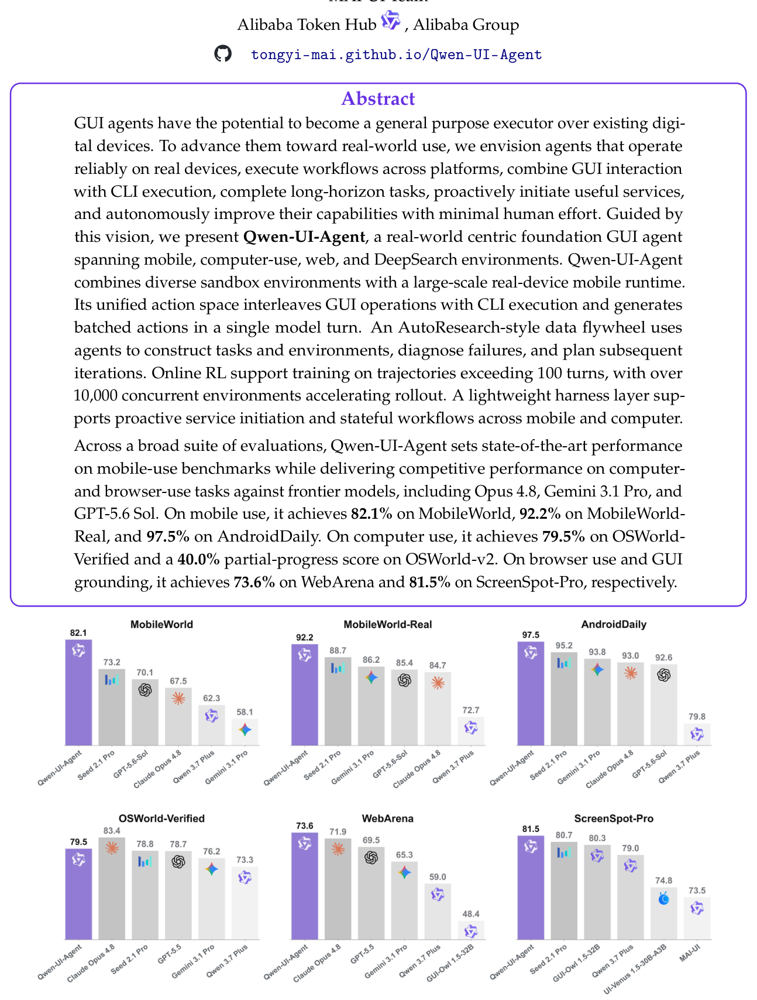
Figure 1: Qwen-UI-Agent demonstrates leading or competitive performance across diverse GUI settings.
Table 1表 14 报告了对比结果：在 666 条具有明确人工标注结论的轨迹中，AutoJudge 与人工标注在 618 条上一致，总体一致率 92.8%；成功轨迹的一致率达 96.2%。模型失败与环境错误更难区分——相似的观测既可能源于错误的智能体动作，也可能源于真实执行环境的问题。
| Action Definition |
|---|
| GUI Actions |
| click Clicks at coordinates (x, y). |
| double_click Double-clicks at coordinates (x, y). |
| long_press Long-presses at coordinates (x, y). |
| type Types the specified text content. |
| open Opens the specified app. |
| drag Drags from start coordinates (x1, y1) to end coordinates (x2, y2). |
| system_button Presses a system button, selected from back, home, menu, and enter. |
| wait Waits for a specified duration in seconds. |
| CLI Actions |
| cli_command Executes a bash command in the active CLI environment. |
| API Actions |
| api_call Invokes an API with specified arguments. |
| Interaction and Control Actions |
| ask_user Interact with the user to complete the task. |
| terminate Ends the task with a final answer and a status of success or failed. |
Table 2
| MODEL | ACCESS / SIZE | SUCCESS RATE (%) |
|---|---|---|
| General-purpose VLMs | ||
| Seed 2.1 Pro (ByteDance Seed, 2026b) | Closed-source | 73.2 |
| GPT-5.6 Sol (OpenAI, 2026b) | Closed-source | 70.1 |
| Claude Opus 4.8 (Anthropic, 2026) | Closed-source | 67.5 |
| Seed 2.0 Pro (ByteDance Seed, 2026a) | Closed-source | 63.2 |
| Qwen 3.7 Plus (Qwen Team, 2026a) | 397B-A17B | 62.3 |
| Gemini 3.1 Pro (Google, 2026a) | Closed-source | 58.1 |
| Kimi K2.6 (Moonshot AI, 2026) | 1T-A32B | 55.6 |
| Specialized GUI Models | ||
| GUI-Owl-1.5-32B-Instruct (Xu et al., 2026) | 32B | 43.9 |
| MAI-UI-235B-A22B (Zhou et al., 2025a) | 235B-A22B | 39.7 |
| UI-Venus-1.5-30B-A3B (Gao et al., 2026) | 30B-A3B | 17.1 |
| Ours | ||
| Qwen-UI-Agent | 27B | 82.1 |
| Qwen-UI-Agent | 35B-A3B | 65.0 |
Table 3
| MODEL | ACCESS / SIZE | MOBILEWORLD- | ANDROIDDAILY |
|---|---|---|---|
| Baselines | REAL | ||
| Seed 2.1 Pro (ByteDance Seed, 2026b) | Closed-source | 88.7 | 95.2 |
| Gemini 3.1 Pro (Google, 2026a) | Closed-source | 86.2 | 93.8 |
| GPT-5.6 Sol (OpenAI, 2026b) | Closed-source | 85.4 | 92.6 |
| Claude Opus 4.8 (Anthropic, 2026) | Closed-source | 84.7 | 93.0 |
| Qwen 3.7 Plus (Qwen Team, 2026a) | Closed-source | 72.7 | 79.8 |
| Kimi K2.6 (Moonshot AI, 2026) | 1T-A32B | 62.6 | 67.6 |
| PhoneBuddy-4B (Tang et al., 2026) | 4B | 53.5 | 69.0 |
| UI-Venus-1.5-30B-A3B (Gao et al., 2026) | 30B-A3B | 33.0 | 61.7 |
| GUI-Owl-1.5-32B-Instruct (Xu et al., 2026) | 32B | 32.4 | 60.9 |
| GELab-Zero-4B-preview (Yan et al., 2025) | 4B | 31.3 | 73.4 |
| Ours | |||
| Qwen-UI-Agent | 27B | 92.2 | 97.5 |
| Qwen-UI-Agent | 35B-A3B | 87.4 | 93.9 |
Table 4
| MODEL | ACCESS / SIZE | SUCCESS RATE (%) |
|---|---|---|
| Baselines | ||
| Claude Opus 4.8 (Anthropic, 2026) | Closed-source | 83.4 |
| Seed 2.1 Pro (ByteDance Seed, 2026b) | Closed-source | 78.8 |
| GPT-5.5 (OpenAI, 2026a) | Closed-source | 78.7 |
| Gemini 3.5 Flash (Google, 2026b) | Closed-source | 78.4 |
| Gemini 3.1 Pro (Google, 2026a) | Closed-source | 76.2 |
| Qwen 3.7 Plus (Qwen Team, 2026a) | Closed-source | 73.3 |
| MiniMax M3 (MiniMax, 2026) | 428B-A23B | 75.2 |
| Kimi K2.6 (Moonshot AI, 2026) | 1T-A32B | 73.1 |
| GUI-Owl-1.5-32B-Instruct (Xu et al., 2026) | 32B | 56.5 |
| Ours | ||
| Qwen-UI-Agent | 27B | 79.5 |
Table 5
| MODEL | PARTIAL (%) | BINARY (%) | STEPS/TASK | ACTION MODE |
|---|---|---|---|---|
| Baselines | ||||
| Claude Opus 4.8 (Anthropic, 2026) | 54.8 | 20.6 | 103.0 | Batched |
| GPT-5.5 (OpenAI, 2026a) | 49.5 | 13.0 | 95.2 | Batched |
| MiniMax M3 (MiniMax, 2026) | 22.3 | 4.6 | 326.7 | Single |
| Kimi K2.6 (Moonshot AI, 2026) | 22.1 | 4.6 | 179.3 | Single |
| Qwen 3.7 Plus (Qwen Team, 2026a) | 21.5 | 2.8 | 173.5 | Single |
| Ours | ||||
| Qwen-UI-Agent | 40.0 | 13.9 | 135.8 | Batched |
Table 6
| MODEL | ACCESS / SIZE | SUCCESS RATE (%) |
|---|---|---|
| Baselines | ||
| Claude Opus 4.8∗(Anthropic, 2026) | Closed-source | 71.9 |
| GPT-5.5∗(OpenAI, 2026a) | Closed-source | 69.5 |
| Gemini 3.1 Pro∗(DeepMind, 2025) | Closed-source | 65.3 |
| Qwen 3.7 Plus∗(Qwen Team, 2026a) | Closed-source | 59.0 |
| CUA-GYM-A17B (Wang et al., 2026) | 397B-A17B | 56.0 |
| Kimi K2.6∗(Moonshot AI, 2026) | 1T-A32B | 55.8 |
| Qwen3.5-397B-A17B (Qwen Team, 2026b) | 397B-A17B | 54.0 |
| GUI-Owl-1.5-32B-Thinking (Xu et al., 2026) | 32B | 48.4 |
| Qwen3.5-27B (Qwen Team, 2026b) | 27B | 41.5 |
| Qwen3.5-35B-A3B (Qwen Team, 2026b) | 35B-A3B | 40.8 |
| Ours | ||
| Qwen-UI-Agent | 27B | 73.6 |
| Qwen-UI-Agent | 35A3B | 69.2 |
| Human Performance (Zhou et al., 2024) | – | 78.2 |
Table 7
| MODEL | ACCESS / SIZE | BC (%) | BC-ZH (%) |
|---|---|---|---|
| Baselines | |||
| GPT-5.5 (OpenAI, 2026a) | Closed-source | 90.1 | – |
| Seed 2.1 Pro (ByteDance Seed, 2026b) | Closed-source | 86.2 | – |
| Gemini 3.1 Pro (Google, 2026a) | Closed-source | 85.9 | – |
| Claude Opus 4.8 (Anthropic, 2026) | Closed-source | 84.3 | – |
| UI-TARS-2 (Wang et al., 2025a) | Closed-source | 29.6 | 50.5 |
| Qwen3.5-397B-A17B (Qwen Team, 2026b) | 397B-A17B | 78.6 | 70.3 |
| Apodex-1.0-mini (Apodex Team, 2026) | 35B-A3B | 71.5 | 80.6 |
| Qwen3.5-27B (Qwen Team, 2026b) | 27B | 61.0 | 62.1 |
| GLM-4.7 (Z.ai, 2025) | 358B | 52.0 | 66.6 |
| DeepSeek-V3.2 (DeepSeek-AI, 2025) | 685B | 51.4 | 65.0 |
| Tongyi-DR-30B (Tongyi DeepResearch, 2025) | 30B-A3B | 43.4 | 46.7 |
| Ours | |||
| Qwen-UI-Agent | 27B | 64.1 | 75.0 |
Table 8
| MODELS | GROUNDING BENCHMARKS |
|---|---|
| Baselines | SS-PRO(ZOOM IN) SS-V2 MM-GUI-L2 OSW-G-R UI-VISION |
| Qwen 3 7 Plus* (Qwen Team 2026a) | 68 9 (79 0) 96 6 90 5 78 2 68 0 |
Table 9
| Benchmark | Qwen-UI-Agent | Qwen3.5-27B | UI-Venus-1.5 | GUI-Owl-1.5 | EvoCUA-32B | OpenCUA |
|---|---|---|---|---|---|---|
| General capabilities: | 30B-A3B | 32B-Instruct | 20260105 | 72B | ||
| MMMU-Pro | 72.4 | 73.5 | 32.4 | 39.5 | 58.4 | 31.0 |
| RealWorldQA | 83.1 | 83.1 | 75.3 | 76.7 | 75.4 | 66.4 |
| CharXiv-RQ | 77.7 | 76.8 | 44.7 | 50.9 | 58.1 | 39.6 |
| MathVision | 82.8 | 82.0 | 36.8 | 50.6 | 60.8 | 26.6 |
| AI2D_TEST | 91.1 | 91.9 | 84.3 | 84.8 | 85.7 | 78.9 |
| MMLU-Pro | 86.5 | 86.0 | 65.6 | 73.9 | 77.1 | 58.8 |
| IFEval (prompt-level strict) | 90.2 | 90.4 | 81.3 | 84.5 | 64.0 | 70.6 |
| Agentic capabilities: | ||||||
| Tau2-Bench | 89.9 | 89.2 | 22.7 | 6.1 | 48.9 | 14.4 |
| Terminal-Bench 2.0 (Avg 5) | 50.1 | 41.1 | 3.2 | 0.0 | 5.6 | 9.0 |
| Claw-Eval (Avg 3) | 73.5 | 66.9 | 30.6 | 29.6 | 46.3 | 26.4 |
| Claw-Eval (Pass@3) | 51.8 | 41.2 | 5.5 | 5.5 | 6.5 | 0.5 |
| BFCL-v4 | 74.2 | 71.3 | 19.8 | 32.7 | 48.8 | 28.3 |
| SkillsBench (Avg 5) | 28.0 | 24.9 | 0.5 | 0.3 | 3.3 | 0.0 |
| QwenClawBench (Avg 3) | 44.2 | 48.5 | 6.4 | 5.1 | 18.6 | 11.4 |
Table 10
| Dimension | Failure Pattern | Prop. | Typical Behavior |
|---|---|---|---|
| Execution Capability | Exploration Failure | 19.5% | Fail to locate deep in-app entries |
| Limitations (40.3%) | Erroneous Action Loops | 14.3% | Repeat ineffective actions |
| Lost Execution State | 6.5% | Forget finished sub-tasks | |
| Real-world Scenario | UI Misreading | 24.7% | Misread stateful page semantics |
| Challenges (52.0%) | Pop-up Interference | 18.2% | Ads, paywalls, CAPTCHAs, blank pages |
| Physical Widget Control | 9.1% | Overshoot targets, never converge | |
| Others | – | 7.7% | Under-execution, premature stop |
Table 11
| Statistic Level | OSWorld-Verified | OSWorld-v2 | Difference (pp) |
|---|---|---|---|
| (a) Overall CLI and batched-action | usage | ||
| CLI Action | 40.7% | 55.1% | +14.4 |
| CLI Task | 92.0% | 98.2% | +6.2 |
| Batched Action | 39.6% | 41.6% | +2.0 |
| Batched Task | 62.1% | 88.9% | +26.8 |
| (b) Composition of batched outputs | |||
| GUI-only batches | 75.8% | 64.7% | -11.1 |
| CLI-only batches | 13.1% | 15.0% | +1.9 |
| Mixed GUI+CLI batches | 11.0% | 20.3% | +9.3 |
| Mean primitive actions per batch | 3.1 | 3.1 | 0.0 |
Table 12
| Model | Confusable-Element | Sorting and | Multi-Target | Premature | Repetitive Action |
|---|---|---|---|---|---|
| Grounding | Ranking | Completeness | Completion | Loops | |
| W/o Action RL | 72.8% | 76.6% | 80.0% | 81.0% | 72.9% |
| W/ Action RL | 79.1% | 80.4% | 84.4% | 86.2% | 82.4% |
| In Mastodon, generate a | one-person invite link that | expires in one day, auto-follows | me, and … | ||
| w/o Action RL | w/ Action RL | ||||
| Click Navigate Back | Click | Navigate Back Click | Open Chrome | Click | Click Click |
| Think: try the Think: no invite | link, Think: try the Think: | no invite link, Think: try the | Think: wrong page, | Think: try the Think: | try the invite Think: generate |
| share icon go back | share icon | go back share icon | try the web server | setting icon | people icon invitation link |
Table 13
| Action Group | Original Data Proportion | Reward before Action RL | Reward after Action RL |
|---|---|---|---|
| Frequent actions | 80.1% | 88.3% | 92.3% |
| Long-tail actions | 19.9% | 71.5% | 77.9% |
| Create a clustered | column chart of the weekly | Sales and COGS data in a new sheet | “Sheet2”, titled “Sales |
| & COGS”. | |||
| w/o online RL | |||
| STEP 1 | STEP 4 | STEP STEP 5 5 | STEP 6 |
| … | … | ||
| & Bash read find Sales/COGS WeeklySales.xlsx data | Bash (openpyxl python3 BarChart) make_chart.py | “Sheet2 Bash python3 charts: 1”) (script read-back: | finished |
| Annotation: Reads the weekly | Annotation: Creates the chart | Annotation: Only a quick script | Annotation: Finishes without real |
| Sales and COGS data. | with an openpyxl script. | check (“1 chart”) and never re- | verification. The shipped chart is |
| w/ online RL | opens the app to actually look. | empty → FAILS. | |
| STEP 9 | STEP 12 | STEP 18 | STEP 27 |
| … | … | … | … |
| clustered Bash python3 BarChart, (openpyxl: Sales + COGS) | reopen WeeklySales.xlsx dialog libreoffice --calc → recovery | Bash recovery kill entry -9 soffice + clear the | finished |
| Annotation: Creates the chart with | Annotation: Adds a verify step: | re- Annotation: Corrects it: force-kills | Annotation: Verifies the full |
| openpyxl (after fully closing | opens the app to look and finds | a the leftover LibreOffice and clears | clustered chart (Sales & COGS, 2 |
| LibreOffice). | leftover recovery dialog that | would the recovery entry so the chart | series over Week 1–10) is rendered |
| clobber the chart. | persists. | → PASSES. |
Table 14表 14 报告了对比结果：在 666 条具有明确人工标注结论的轨迹中，AutoJudge 与人工标注在 618 条上一致，总体一致率 92.8%；成功轨迹的一致率达 96.2%。模型失败与环境错误更难区分——相似的观测既可能源于错误的智能体动作，也可能源于真实执行环境的问题。
| Human annotation | ||
|---|---|---|
| Model Environment | Class | |
| AutoJudge decision | Pass failure error Unclear | agreement |
| pass | 455 17 1 1 | 96.2% |
| failed | 15 144 9 1 | 85.7% |
| env_error | 1 5 19 0 | 76.0% |
| Overall | 618 agreements among 666 conclusive cases | 92.8% |
2026-07-312026-07-31
Qwen-UI-Agent Technical Report: Toward Next-GenerationQwen-UI-Agent 技术报告：迈向下一代
Real-World Centric Foundation GUI Agents面向真实世界的基础 GUI 智能体
MAI-UI Team∗MAI-UI 团队∗
arXiv:2607.28227v1 [cs.AI] 30 Jul 2026arXiv:2607.28227v1 [cs.AI] 30 Jul 2026
∗Qwen-UI-Agent is a continuation of our previous work, MAI-UI (Zhou et al., 2025a). See Contributions section for a full author list.
∗Qwen-UI-Agent 是我们先前工作 MAI-UI（Zhou et al., 2025a）的延续。完整作者名单见“贡献人员”一节。
Contents目录
1 Introduction 31 引言 3
2 Qwen-UI-Agent 5 2.1 System Overview . . . . . . . . . . . . . . . . . . . . . . . . . . . . . . . . . . . . . . . . . . 6 2.1.1 Task Formulation . . . . . . . . . . . . . . . . . . . . . . . . . . . . . . . . . . . . . . 6 2.1.2 Action Space . . . . . . . . . . . . . . . . . . . . . . . . . . . . . . . . . . . . . . . . . 6 2.1.3 Capability Landscape . . . . . . . . . . . . . . . . . . . . . . . . . . . . . . . . . . . 7 2.2 Environment Infrastructure . . . . . . . . . . . . . . . . . . . . . . . . . . . . . . . . . . . . 7 2.2.1 Scaling Sandbox Environments . . . . . . . . . . . . . . . . . . . . . . . . . . . . . . 8 2.2.2 Real-Device Mobile Environment: From Simulated Sandboxes to Real-World Learning 9 2.2.3 Hybrid GUI+CLI Action Space . . . . . . . . . . . . . . . . . . . . . . . . . . . . . . 10 2.2.4 Unified Interface for Heterogeneous Environments . . . . . . . . . . . . . . . . . . 11 2.3 Agent-Driven Data Flywheel . . . . . . . . . . . . . . . . . . . . . . . . . . . . . . . . . . . 11 2.4 Training . . . . . . . . . . . . . . . . . . . . . . . . . . . . . . . . . . . . . . . . . . . . . . . . 13 2.4.1 Supervised Fine-Tuning (SFT) . . . . . . . . . . . . . . . . . . . . . . . . . . . . . . . 13 2.4.2 Action RL: Correcting Recurring Action Errors . . . . . . . . . . . . . . . . . . . . . 14 2.4.3 Online RL: Learning Long-Horizon Decision Making . . . . . . . . . . . . . . . . . 15 2.5 Harness Layer: Proactive Service and Cross-Platform Task Execution . . . . . . . . . . . . 16 2.5.1 Proactive Service Based on Mobile Notifications . . . . . . . . . . . . . . . . . . . . 17 2.5.2 Cross-Platform Task Execution . . . . . . . . . . . . . . . . . . . . . . . . . . . . . . 19
2 Qwen-UI-Agent 5 2.1 系统总览 . . . . . . . . . . . . . . . . . . . . . . . . . . . . . . . . . . . . . . . . . . 6 2.1.1 任务形式化 . . . . . . . . . . . . . . . . . . . . . . . . . . . . . . . . . . . . . . 6 2.1.2 动作空间 . . . . . . . . . . . . . . . . . . . . . . . . . . . . . . . . . . . . . . . . . 6 2.1.3 能力版图 . . . . . . . . . . . . . . . . . . . . . . . . . . . . . . . . . . . 7 2.2 环境基础设施 . . . . . . . . . . . . . . . . . . . . . . . . . . . . . . . . . . . . . 7 2.2.1 规模化沙盒环境 . . . . . . . . . . . . . . . . . . . . 8 2.2.2 真机移动环境：从模拟沙盒到真实世界学习 9 2.2.3 混合 GUI+CLI 动作空间 . . . . . . . . . . . . . . . . . . . . . . . . . . . . . . 10 2.2.4 异构环境的统一接口 . . . . . . . . . . . . . . . . . 11 2.3 智能体驱动的数据飞轮 . . . . . . . . . . . . . . . . . . . . . . . . . . . . . . . . . . . 11 2.4 训练 . . . . . . . . . . . . . . . . . . . . . . . . . . . . . . . . . . . . . . . . . . . . . . . 13 2.4.1 监督微调（SFT）. . . . . . . . . . . . . . . . . . . . . . 13 2.4.2 动作 RL：纠正复现性动作错误 . . . . . . . . . . . . . . . . . . . . . . 14 2.4.3 在线 RL：学习长程决策 . . . . . . . . . . . . . . . . . 15 2.5 Harness 层：主动服务与跨平台任务执行 . . . . . . . . . . 16 2.5.1 基于移动通知的主动服务 . . . . . . . . . . . . . . . . . . . . . . 17 2.5.2 跨平台任务执行 . . . . . . . . . . . . . . . . . . . . . . . . . . . . . . . . 19
3 Experiments 20 3.1 Experimental Setup . . . . . . . . . . . . . . . . . . . . . . . . . . . . . . . . . . . . . . . . . 20 3.2 MobileWorld-Real: Real-world Mobile Use Evaluation Benchmark . . . . . . . . . . . . . 21 3.3 Main Results . . . . . . . . . . . . . . . . . . . . . . . . . . . . . . . . . . . . . . . . . . . . . 23 3.3.1 Mobile-Use Evaluation. . . . . . . . . . . . . . . . . . . . . . . . . . . . . . . . . . . 23 3.3.2 Computer-Use Evaluation . . . . . . . . . . . . . . . . . . . . . . . . . . . . . . . . . 25 3.3.3 Browser-Use and DeepSearch Evaluation . . . . . . . . . . . . . . . . . . . . . . . . 26 3.3.4 GUI Grounding . . . . . . . . . . . . . . . . . . . . . . . . . . . . . . . . . . . . . . . 29 3.3.5 General and Agentic Capabilities . . . . . . . . . . . . . . . . . . . . . . . . . . . . . 30 3.4 Harness-Enabled Workflows . . . . . . . . . . . . . . . . . . . . . . . . . . . . . . . . . . . . 31
3 实验 20 3.1 实验设置 . . . . . . . . . . . . . . . . . . . . . . . . . . . . . . . . . . . . . . . . . . 20 3.2 MobileWorld-Real：真实世界移动使用评测基准 . . . . . . . . . . . . . 21 3.3 主要结果 . . . . . . . . . . . . . . . . . . . . . . . . . . . . . . . . . . . . . . . . 23 3.3.1 移动使用评测. . . . . . . . . . . . . . . . . . . . . . . . . . . . . . . . . . . . 23 3.3.2 计算机使用评测 . . . . . . . . . . . . . . . . . . . . . . . . . . . . . . . . . . 25 3.3.3 浏览器使用与 DeepSearch 评测 . . . . . . . . . . . . . . . . . . 26 3.3.4 GUI Grounding . . . . . . . . . . . . . . . . . . . . . . . . . . . . . . . . . . . . . . . . 29 3.3.5 通用与智能体能力 . . . . . . . . . . . . . . . . . . . . . . . . . . . . . . 30 3.4 Harness 赋能的工作流 . . . . . . . . . . . . . . . . . . . . 31
4 Behavioral Analysis of GUI Agent Execution 32 4.1 How Does a Model’s Limited Real-Device Experience Affect Its Execution Behavior? . . 32 4.2 A Closer Look at GUI–CLI Coordination and Batched Execution in Qwen-UI-Agent . . . 34 4.3 Step-Level Behavioral Corrections after Action RL . . . . . . . . . . . . . . . . . . . . . . . 39 4.4 Trajectory-Level Behavioral Shifts after Online RL . . . . . . . . . . . . . . . . . . . . . . . 41
4 GUI 智能体执行行为分析 32 4.1 模型有限的真机经验如何影响其执行行为？ . . 32 4.2 深入剖析 Qwen-UI-Agent 中的 GUI–CLI 协同与批量执行 . . . 34 4.3 动作 RL 后的步级行为纠正 . . . . . . . . . . . . . . . . . 39 4.4 在线 RL 后的轨迹级行为转变 . . . . . . . . . . . . . . . . . . . . . . . . . 41
5 Related Work 425 相关工作 42
6 Conclusion 436 结论 43
7 Limitations and Future Directions 44
7 局限与未来方向 44
8 Contributions 458 贡献人员 45
A Appendix 52 A.1 Validating AutoJudge for Real-Device Evaluation . . . . . . . . . . . . . . . . . . . . . . . 52 A.2 AutoJudge Decisions on Real-Device GUI Agent Trajectories . . . . . . . . . . . . . . . . . 52 A.3 Additional Qualitative Examples . . . . . . . . . . . . . . . . . . . . . . . . . . . . . . . . . 53
A 附录 52 A.1 面向真机评测的 AutoJudge 验证 . . . . . . . . . . . . . . . . . . . . . . . 52 A.2 AutoJudge 对真机 GUI 智能体轨迹的判定 . . . . . . . . . . . . . . . . . 52 A.3 补充定性示例 . . . . . . . . . . . . . . . . . . . . . . . . . . . . . 53
1Introduction1 引言
Graphical user interfaces (GUIs) are the primary interface through which humans access digital services and applications. A capable GUI agent (Zhou et al., 2025a; Wang et al., 2025a; Qin et al., 2025; Xu et al., 2026) therefore has the potential to become a general purpose executor over existing application ecosys- tems: it can understand user intent, perceive application states, operate interfaces, and complete tasks without requiring every service to expose a dedicated API. Recent progress in multimodal foundation models has made this direction increasingly practical, leading to rapid improvements in mobile and desktop GUI agents (Cao et al., 2026; Gao et al., 2026; Huang et al., 2026; Shen et al., 2026).
图形用户界面（GUI）是人类访问数字服务与应用的主要入口。一个能力出众的 GUI 智能体（Zhou et al., 2025a; Wang et al., 2025a; Qin et al., 2025; Xu et al., 2026）因此有望成为现有应用生态之上的通用执行器：理解用户意图、感知应用状态、操作界面、完成任务，而无需每项服务都暴露专用 API。多模态基础模型的近期进展使这一方向日益可行，移动与桌面 GUI 智能体随之快速演进（Cao et al., 2026; Gao et al., 2026; Huang et al., 2026; Shen et al., 2026）。
Despite this progress, GUI agents remain largely optimized for simulated benchmarks, leaving a sub- stantial gap between benchmark performance and real-world utility. To bridge this gap, we envision a next generation of GUI agents that operate reliably on real devices, complete long-horizon tasks, carry workflows across platforms, proactively initiate useful services, combine GUI interaction with CLI execution, and continuously evolve their capabilities with less human effort. To realize this vision, we identify six key transitions: (1) From simulated environments to real-device execution. Many GUI agents, especially mobile agents, are optimized for simulated benchmarks, while real mobile devices involve much more complex application functions, varied UI layouts, interruptions, permissions, and changing environments. A model that performs well in simulation often fails on real devices. (2) From isolated domains to cross-domain, cross-platform workflows. Existing agents are often built for mobile, web, or desktop separately, while real-world tasks may span several domains and continue across phones and computers. (3) From GUI-only actions to hybrid GUI+CLI and batched actions. GUI interaction provides universal access to visual interfaces, while the growing coding capabilities of foundation models make CLI a natural complement for structured tasks such as data processing and file manipulation. By combining these action types and supporting batched actions, agents can better match the execution method to the nature of tasks, improving execution efficiency and expanding task coverage. (4) From short-horizon tasks to reliable long-horizon task completion. The practical value of a GUI agent grows with the complexity of the user objectives it can complete and the number of execution steps it can perform on the user’s behalf. However, completing long-horizon tasks requires sustained planning, state tracking, intermediate verification, and recovery from execution errors, making long-horizon reliability a challenging capability. (5) From human-intensive training pipelines to AutoResearch-style one. Cur- rent GUI agent development still relies heavily on manually constructing tasks, collecting data, training models, running evaluations, and analyzing failures. As agent capabilities improve, this process should become increasingly automated. (6) From reactive execution to proactive service initiation. Most agents wait for explicit user instructions, even though many useful tasks can arise directly from digital signals on phones or other devices. An agent that recognizes such actionable moments and proposes appropriate next steps can provide a fundamentally different user experience.
尽管进展显著，GUI 智能体仍主要围绕模拟基准优化，基准性能与真实世界效用之间存在巨大落差。为弥合这一落差，我们设想这样的下一代 GUI 智能体：在真实设备上可靠运行，完成长程任务，让工作流跨平台延续，主动发起有用的服务，将 GUI 交互与 CLI 执行相结合，并以更少的人力持续演进能力。实现这一愿景需要六个关键转变：(1) 从模拟环境到真机执行。许多 GUI 智能体（尤其是移动智能体）围绕模拟基准优化，而真实移动设备涉及复杂得多的应用功能、多样的 UI 布局、中断、权限与多变环境——模拟中表现出色的模型在真机上常常失效。(2) 从孤立领域到跨领域、跨平台工作流。现有智能体往往分别面向移动、网页或桌面构建，而真实任务可能横跨多个领域，并在手机与电脑之间延续。(3) 从仅 GUI 动作到混合 GUI+CLI 与批量动作。GUI 交互提供对可视化界面的普适访问，基础模型日益增强的编码能力则使 CLI 成为数据处理、文件操作等结构化任务的自然补充；组合两类动作并支持批量执行，智能体便能让执行方式匹配任务性质，从而提升执行效率、扩大任务覆盖面。(4) 从短程任务到可靠的长程任务完成。GUI 智能体的实用价值随其所能完成的用户目标复杂度、所能代表用户执行的步骤数而增长；但长程任务要求持续的规划、状态跟踪、中间验证与错误恢复，长程可靠性因而颇具挑战。(5) 从人力密集的训练流水线到 AutoResearch 式流水线。当前 GUI 智能体研发仍高度依赖人工构建任务、收集数据、训练模型、运行评估与分析失败；随着智能体能力提升，这一流程应日益自动化。(6) 从被动执行到主动服务发起。多数智能体坐等明确的用户指令，而许多有用的任务本可直接源于手机等设备上的数字信号——能识别这类时机并主动提出下一步的智能体，将带来根本不同的用户体验。
In this report, we introduce Qwen-UI-Agent, a real-world-centric foundation GUI agent developed around these five transitions, representing our step toward next-generation GUI agents for real-world utility. Specifically, Qwen-UI-Agent delivers the following core features:
本报告提出 Qwen-UI-Agent——一个围绕上述转变打造、以真实世界为中心的基础 GUI 智能体，代表我们向面向真实效用的新一代 GUI 智能体迈出的一步。具体而言，Qwen-UI-Agent 具备以下核心特性：
• Real-device Mobile GUI Foundation. We find that the simulation-to-real gap is particularly severe in mobile environments. To address this gap, we build a real-device mobile environment comprising over 100 physical devices and supporting more than 150 applications. We use it for realistic task design, trajectory collection, online reinforcement learning, and evaluation on real devices. To improve practical usability, we further support user takeover for high-risk actions, expand coverage to both high-frequency workflows and less commonly used app functions. Together, these efforts enable Qwen-UI-Agent to substantially outperform existing models on real phones.
• 真机移动 GUI 基础。我们发现模拟到真实的差距在移动环境中尤为突出。为此，我们构建了一个由 100 余台物理设备组成、支持 150 余个应用的真机移动环境，用于贴近真实的任务设计、轨迹收集、在线强化学习与真机评估。为提升实用可用性，我们进一步支持高风险动作的用户接管，并将覆盖面扩展到高频工作流与低频应用功能。这些工作共同使 Qwen-UI-Agent 在真实手机上大幅超越现有模型。
• Multi-domain Capabilities and Cross-Domain Workflows. Qwen-UI-Agent supports task execution across mobile, web, computer-use, and DeepSearch environments. Rather than treating these capa- bilities as isolated modules, our harness layer composes them within a unified workflow, preserving
• 多域能力与跨领域工作流。Qwen-UI-Agent 支持跨移动、网页、计算机使用与 DeepSearch 环境的任务执行。这些能力并非彼此孤立的模块，而是由 harness 层编排进统一工作流，并保留
context and task state as execution moves seamlessly across devices and environments. For example, GUI workflows can invoke DeepSearch to efficiently retrieve and verify external information, avoid- ing time-consuming GUI-based web navigation before seamlessly resuming interaction. This turns multi-domain coverage into integrated task execution across heterogeneous digital environments.
上下文与任务状态，让执行在设备与环境之间无缝迁移。例如，GUI 工作流可调用 DeepSearch 快速检索并核验外部信息，省去耗时的 GUI 网页导航，再无缝恢复交互。由此，多领域覆盖被转化为跨异构数字环境的整体任务执行。
• Hybrid GUI+CLI and Batched Action Spaces. We equip Qwen-UI-Agent with a unified action space that supports GUI operations, bash-based CLI commands, and batched actions. The model can select and compose these actions within a single trajectory, using GUI interaction and CLI execution where each is most suitable, while batching compatible actions to reduce unnecessary steps. In computer-use tasks, CLI commands and GUI clicks emerge as the two dominant action types, and over 40% of action outputs are batched, substantially shortening execution trajectories.
• 混合 GUI+CLI 与批量动作空间。我们为 Qwen-UI-Agent 配备统一动作空间，同时支持 GUI 操作、基于 bash 的 CLI 命令与批量动作。模型可在单条轨迹内选择并组合这些动作：GUI 交互与 CLI 执行各用于最合适的场合，兼容动作则被批量处理以省去多余步骤。在计算机使用任务中，CLI 命令与 GUI 点击成为两大主导动作类型，超过 40% 的动作输出为批量形式，执行轨迹因此显著缩短。
• Scalable Online RL for Long-horizon Tasks. Hybrid GUI+CLI and batched actions improve local execution efficiency, but completing long-horizon tasks also requires reliable planning, state tracking, and intermediate decision-making across the full trajectory. We therefore scale verifier-guided online RL to trajectories exceeding 100 interaction steps. We further enable approximately 10,000 simulated environments to run concurrently to accelerate rollout generation while a model-adaptive curriculum prioritizes tasks with intermediate success rates and replaces mastered tasks with harder ones.
• 面向长程任务的可扩展在线 RL。混合 GUI+CLI 与批量动作改善了局部执行效率，而完成长程任务还依赖贯穿整条轨迹的可靠规划、状态跟踪与中间决策。为此，我们将验证器引导的在线 RL 扩展至超过 100 个交互步的轨迹，并让约 10,000 个模拟环境并发运行以加速 rollout 生成；模型自适应课程则优先安排成功率居中的任务，并将已掌握的任务替换为更难的任务。
• AutoResearch-style Capability Acquisition. We build an agent-driven iteration loop in which agents generate and assess candidate tasks for data flywheel, process rollout trajectories, analyze failures, and propose plans for the next iteration. Rather than relying on humans to manually drive every stage, the system automates much of the capability development process, with humans mainly providing supervision and making targeted revisions. This approach reduces human effort and accelerates the acquisition and refinement of new GUI agent capabilities.
• AutoResearch 式能力获取。我们构建智能体驱动的迭代闭环：智能体为数据飞轮生成并评估候选任务、处理 rollout 轨迹、分析失败并提出下一轮迭代计划。能力开发流程的大部分环节由系统自动完成，人类主要负责监督与针对性修订。这既减少了人力投入，也加快了新 GUI 智能体能力的获取与打磨。
• Proactive Mobile Service. Consider a flight cancellation notification arriving on a user’s phone. Instead of waiting for the user to notice it and issue an instruction, the agent can identify the affected itinerary, gather alternative travel options, check against user’s schedule, and present a proposed plan for confirmation. To support such experiences, we build a proactive service harness based on mobile notifications. Beyond initiating tasks, the harness forms a coherent understanding of real-world situations, generates personalized tasks, executes approved actions, and continuously evolves from user responses and long-term interaction history.
• 主动移动服务。设想一条航班取消通知抵达用户手机：智能体无需坐等用户察觉并下达指令，而可主动识别受影响的行程、收集替代出行方案、对照用户日程核查，并给出待确认的建议方案。为支持这类体验，我们构建了基于移动通知的主动服务 harness；它不止于发起任务，还能形成对现实情境的连贯理解、生成个性化任务、执行已获批准的动作，并依据用户反馈与长期交互历史持续进化。
Empirically, Qwen-UI-Agent achieves state-of-the-art performance across a broad range of evaluation settings, covering real-device and benchmark-based mobile use, computer use, browser use, DeepSearch, and GUI grounding. Across these evaluations, Qwen-UI-Agent generally outperforms leading foundation models, including Opus 4.8 (Anthropic, 2026), GPT-5.6 Sol (OpenAI, 2026b), Gemini 3.5 Flash (Google, 2026b), and Seed2.1 Pro (ByteDance Seed, 2026b), as well as specialized GUI agents. We highlight main results below:
实验表明，Qwen-UI-Agent 在广泛的评测设置中取得最先进的性能，涵盖真机与基准式移动使用、计算机使用、浏览器使用、DeepSearch 与 GUI grounding。在这些评测中，Qwen-UI-Agent 总体上超越领先的基础模型——包括 Opus 4.8（Anthropic, 2026）、GPT-5.6 Sol（OpenAI, 2026b）、Gemini 3.5 Flash（Google, 2026b）与 Seed2.1 Pro（ByteDance Seed, 2026b）——以及各类专用 GUI 智能体。主要结果概述如下：
• Mobile Use. On MobileWorld-Real, our real-device benchmark comprising more than 400 tasks across over 100 apps, Qwen-UI-Agent achieves a 92.2% success rate. It outperforms frontier closed-source models Gemini 3.1 Pro, Claude Opus 4.8, GPT-5.6 Sol, and Seed 2.1 Pro by 6.0, 7.5, 6.8, and 3.5 percentage points, respectively. Qwen-UI-Agent further achieves a near-perfect success rate of 97.5% on AndroidDaily, another real-device benchmark. On MobileWorld, Qwen-UI-Agent scores 82.1%, surpassing Opus 4.8, GPT-5.6 Sol, and Seed 2.1 Pro by 14.6, 12.0, and 8.9 percentage points.
• 移动使用。在 MobileWorld-Real——我们覆盖 100 余个应用、共 400 多个任务的真机基准——上，Qwen-UI-Agent 取得 92.2% 的成功率，分别领先前沿闭源模型 Gemini 3.1 Pro、Claude Opus 4.8、GPT-5.6 Sol 与 Seed 2.1 Pro 6.0、7.5、6.8 和 3.5 个百分点；在另一真机基准 AndroidDaily 上更取得近乎完美的 97.5% 成功率。在 MobileWorld 上，Qwen-UI-Agent 得分 82.1%，领先 Opus 4.8、GPT-5.6 Sol 与 Seed 2.1 Pro 14.6、12.0 和 8.9 个百分点。
• Computer Use. On OSWorld-Verified, Qwen-UI-Agent achieves 79.5%, ranking second overall and outperforming GPT-5.5, Gemini 3.1 Pro, and Seed 2.1 Pro. On the more challenging OSWorld-v2, Qwen-UI-Agent obtains the second-best binary success rate (13.9%), the third-best partial-progress score (40.0%). Its partial-progress score exceeds those of MiniMax M3 and Qwen 3.7 Plus by 17.7 and 18.5 percentage points, respectively, while requiring 58.4% and 21.7% fewer steps per task.
• 计算机使用。在 OSWorld-Verified 上，Qwen-UI-Agent 取得 79.5%，总排名第二，超越 GPT-5.5、Gemini 3.1 Pro 与 Seed 2.1 Pro。在更具挑战性的 OSWorld-v2 上，Qwen-UI-Agent 拿下第二佳的二值成功率（13.9%）与第三佳的部分进度分（40.0%）：部分进度分分别高出 MiniMax M3 与 Qwen 3.7 Plus 17.7 和 18.5 个百分点，而每任务所需步骤分别减少 58.4% 和 21.7%。
• Browser Use and DeepSearch. On WebArena, Qwen-UI-Agent achieves 73.6%, outperforming Claude Opus 4.8, GPT-5.5 and Gemini 3.1 Pro by 1.7, 4.1 and 8.3 points. On DeepSearch, it scores 64.1% on
• 浏览器使用与 DeepSearch。在 WebArena 上，Qwen-UI-Agent 取得 73.6%，领先 Claude Opus 4.8、GPT-5.5 与 Gemini 3.1 Pro 1.7、4.1 和 8.3 分。在 DeepSearch 上，其得分为
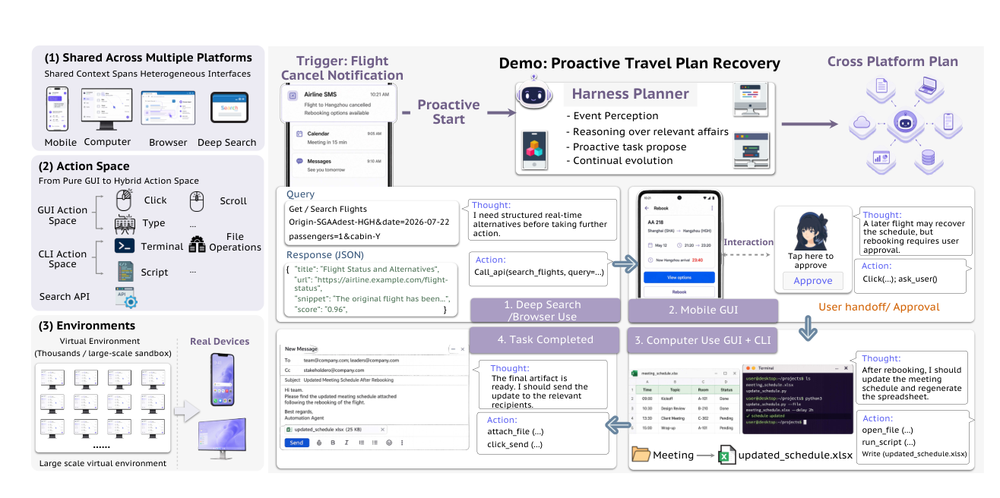
Figure 2: An illustrative trajectory of Qwen-UI-Agent for proactive cross-platform task execution. The left panel summarizes the system capabilities underlying the trajectory, including cross-platform execution, a hybrid action space spanning GUI, CLI, and API operations, and environments ranging from large-scale sandboxes to real devices. The right panel illustrates a travel-recovery scenario triggered by a flight- cancellation notification. After identifying the affected tasks and commitments, the agent searches for alternative flights through an API, requests user approval before rebooking via a mobile GUI, updates the affected meeting schedule through desktop GUI and CLI actions, and sends the revised artifact to the relevant recipients.
BrowseComp and 75.0% on BrowseComp-ZH, surpassing Qwen3.5-397B-A17B and UI-TARS-2.
BrowseComp 上的 64.1% 与 BrowseComp-ZH 上的 75.0%，超越 Qwen3.5-397B-A17B 与 UI-TARS-2。
• GUI Grounding. Qwen-UI-Agent reaches 81.5% on ScreenSpot-Pro under the zoom-in setting, out- performing Seed 2.1 Pro, GUI-Owl-1.5, and UI-Venus-1.5. It further sets the best results among baseline models on UI-Vision (70.0%), OSWorld-G-Refined (78.5%), MMBench-GUI L2 (92.6%), and ScreenSpot-V2 (97.5%).
• GUI grounding。Qwen-UI-Agent 在 ScreenSpot-Pro 的 zoom-in 设置下达到 81.5%，超越 Seed 2.1 Pro、GUI-Owl-1.5 与 UI-Venus-1.5；并在 UI-Vision（70.0%）、OSWorld-G-Refined（78.5%）、MMBench-GUI L2（92.6%）与 ScreenSpot-V2（97.5%）上取得各基线模型中的最佳结果。
• General and Agentic Capabilities. To preserve the model’s broad utility in real-world settings, we retain Qwen-UI-Agent’s general reasoning and agentic capabilities. We evaluate Qwen-UI-Agent on a suite of 13 benchmarks, including MMMU-Pro, MMLU-Pro, Terminal-Bench 2.0, and Claw-Eval. The results show that Qwen-UI-Agent outperforms the Qwen base model on agentic tasks while remaining comparable on general reasoning tasks, and significantly outperforms GUI-specialized models across both categories.
• 通用与智能体能力。为保持模型在真实场景中的广泛效用，我们保留了 Qwen-UI-Agent 的通用推理与智能体能力，并在涵盖 MMMU-Pro、MMLU-Pro、Terminal-Bench 2.0、Claw-Eval 等 13 个基准的套件上加以评估。结果显示：Qwen-UI-Agent 在智能体任务上超越 Qwen 基础模型，通用推理任务与之相当，且在两类任务上均显著超越 GUI 专用模型。
2Qwen-UI-Agent2 Qwen-UI-Agent
This section presents the methodology of Qwen-UI-Agent as an integrated system for building advanced foundation GUI agents. The system comprises four components: (1) an environment infrastructure spanning both sandboxed and real-world environments that supports trajectory collection and training across mobile-use, computer-use, browser-use, and deep-search tasks under a unified action space covering GUI, CLI, and batched actions; (2) an automated data flywheel that reduces human intervention and closes the loop from data synthesis to training, evaluation, failure analysis, and targeted data generation for the next iteration; (3) a unified training framework that combines supervised fine-tuning with reinforcement learning; and (4) a harness layer that connects the trained agent to user context and enables proactive services and cross-platform task execution. Figure 2 illustrates a demo trajectory.
本节阐述 Qwen-UI-Agent 作为集成系统构建先进基础 GUI 智能体的方法论。系统由四个组件构成：(1) 环境基础设施，覆盖沙盒与真实世界环境，在统一动作空间（涵盖 GUI、CLI 与批量动作）下支持移动使用、计算机使用、浏览器使用与深度搜索任务的轨迹收集与训练；(2) 自动化数据飞轮，减少人工干预，形成从数据合成到训练、评估、失败分析，再到下一轮针对性数据生成的闭环；(3) 统一训练框架，将监督微调与强化学习相结合；(4) harness 层，将训练好的智能体接入用户上下文，支持主动服务与跨平台任务执行。图 2 展示了一条演示轨迹。
2.1System Overview2.1 系统总览
Qwen-UI-Agent is designed as a real-world-centric foundation GUI agent that operates across diverse digital environments, including mobile, desktop, web, and information-seeking systems. This section first defines the task scope of Qwen-UI-Agent, then introduces its unified observation and action spaces, and finally summarizes the capability landscape supported by this formulation.
Qwen-UI-Agent 是一个以真实世界为中心的基础 GUI 智能体，可运行于多样的数字环境，涵盖移动、桌面、网页与信息检索系统。本节先界定 Qwen-UI-Agent 的任务范围，再介绍其统一的观测与动作空间，最后概述该形式化所支撑的能力版图。
2.1.1Task Formulation2.1.1 任务形式化
Qwen-UI-Agent is designed for interactive digital task execution. We define a task as:
Qwen-UI-Agent 面向交互式数字任务执行而设计。我们将任务定义为：
τ = (I, Eτ) , (1)τ = (I, Eτ) , (1)
where I is the user instruction and Eτ is the set of digital environments available to the task. Depending on the task, Eτ may include mobile devices, web browsers, computer systems, DeepSearch systems, or a combination of them. This formulation covers both tasks completed within a single environment and workflows that span multiple platforms (Xu et al., 2026; Lian et al., 2026).
其中 I 为用户指令，Eτ 为该任务可用的数字环境集合。视任务而定，Eτ 可涵盖移动设备、网页浏览器、计算机系统、DeepSearch 系统或其组合。这一形式化既适用于单一环境内完成的任务，也适用于跨平台的工作流（Xu et al., 2026; Lian et al., 2026）。
At decision step t, the agent receives a multichannel observation ot that may combine different forms of environment feedback:
在决策步 t，智能体接收多通道观测 ot，其中可组合不同形式的环境反馈：
oGUIoGUI
t , oCLIt , oCLI
t , oAPIt , oAPI
ot =ot =
. (2). (2)
Here, oGUI其中，oGUI
t represents the current screenshot, oCLI
t 表示当前屏幕截图，oCLI
t contains command execution results, and oAPI
t 包含命令执行结果，而 oAPI
t contains structured responses from external services, such as search API. A Component is set to empty when the corresponding channel is unavailable or unnecessary for the current task. This multichannel observation allows the agent to jointly reason over visual interface states and programmatic execution feedback (Hu et al., 2026; Li et al., 2026a).
t 包含来自外部服务（如搜索 API）的结构化响应。若相应通道不可用或对当前任务不必要，则该分量置为空。借助多通道观测，智能体得以对视觉界面状态与程序化执行反馈进行联合推理（Hu et al., 2026; Li et al., 2026a）。
The agent predicts an intermediate reasoning output rt and an executable action output at:
智能体预测中间推理输出 rt 与可执行的动作输出 at：
(rt, at) = πθ (I, ot, ht) , (3)(rt, at) = πθ (I, ot, ht) , (3)
where ht = (o1, r1, a1, . . . , ot−1, rt−1, at−1) denotes the preceding interaction history.
其中 ht = (o1, r1, a1, . . . , ot−1, rt−1, at−1) 表示此前的交互历史。
Notably, one model decision step may produce either a single action or an ordered sequence of actions:
值得注意的是，一次模型决策步既可产生单个动作，也可产生有序的动作序列：
a(1)a(1)
t , . . . , a(Kt)
t , . . . , a(Kt)
, a(k), a(k)
t ∈At, (4)t ∈At, (4)
at =at =
where At is the set of actions available in the current environment. When Kt = 1, the model performs single-action execution. When Kt > 1, it produces a batched action sequence. Actions within a batch are executed consecutively in this decision step, reducing unnecessary inference and observation steps when multiple operations can be completed without additional environment feedback.
其中 At 为当前环境中可用动作的集合。Kt = 1 时，模型执行单动作；Kt > 1 时，模型生成批量动作序列。批次内的动作在同一决策步内连续执行：当多个操作无需额外环境反馈即可完成时，可省去不必要的推理与观测步骤。
2.1.2Action Space2.1.2 动作空间
We design the action space of Qwen-UI-Agent around three requirements: supporting GUI interaction across different platforms, extending execution beyond GUI manipulation, and preserving user control over consequential operations. The GUI action space is defined as the union of actions necessary for mobile, web, and desktop environments, with each environment exposing the subset supported by its native interaction mechanisms. To complement GUI interaction, we introduce cli_command, which enables direct bash command execution, and api_call, which invokes external services with structured arguments. We further include ask_user, allowing the agent to request missing information or obtain explicit confirmation before handling sensitive data, payments, or other consequential operations. Together, these actions provide a unified interface for cross-platform GUI interaction, hybrid GUI+CLI execution, and user-controlled operation in real-world tasks. The full action space is shown in Table 1.
Qwen-UI-Agent 的动作空间围绕三项需求设计：支持跨平台 GUI 交互、将执行能力拓展到 GUI 操作之外、在重大操作上保留用户控制权。GUI 动作空间定义为移动、网页与桌面环境所需动作的并集，每种环境仅暴露其原生交互机制支持的子集。作为 GUI 交互的补充，我们引入 cli_command 直接执行 bash 命令、api_call 以结构化参数调用外部服务，并纳入 ask_user——智能体在处理敏感数据、支付或其他重大操作前，可借此请求缺失信息或获得明确确认。这些动作共同构成统一接口，支撑真实任务中的跨平台 GUI 交互、混合 GUI+CLI 执行与用户可控操作。完整动作空间见表 1。
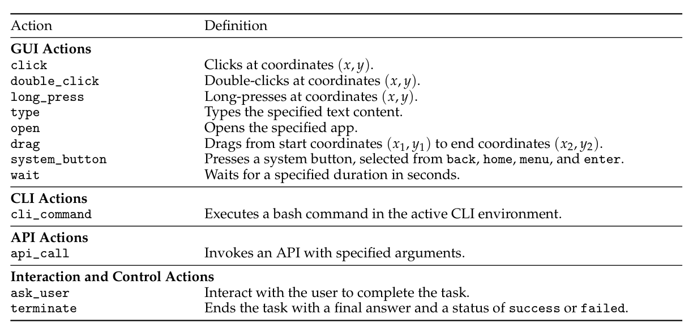
Table 1: Action Space in Qwen-UI-Agent.表 14 报告了对比结果：在 666 条具有明确人工标注结论的轨迹中，AutoJudge 与人工标注在 618 条上一致，总体一致率 92.8%；成功轨迹的一致率达 96.2%。模型失败与环境错误更难区分——相似的观测既可能源于错误的智能体动作，也可能源于真实执行环境的问题。
2.1.3Capability Landscape2.1.3 能力版图
The unified formulation supports four complementary capabilities of Qwen-UI-Agent centered on real- world task execution. (1) Real-device mobile execution. By building a real-device mobile environment and using it throughout model capability development and evaluation, Qwen-UI-Agent substantially eliminates the simulation-to-reality gap and achieves leading real-world mobile execution performance over both specialized GUI agents and frontier closed-source models. (2) Multi-domain task execution. Qwen-UI-Agent operates across mobile, desktop, web, and DeepSearch environments, moving beyond domain-specific policies toward a foundation GUI agent for heterogeneous digital tasks. (3) Hybrid and efficient interaction. Qwen-UI-Agent’s unified action space enables the model to select and interleave GUI operations with bash-based CLI commands within the same trajectory, while batched actions largely enhance the execution efficiency. (4) Harness-enabled services. A lightweight harness layer extends the core agent beyond isolated task execution by enabling proactive service initiation and allowing a single workflow to span mobile and computer systems.
统一形式化支撑起 Qwen-UI-Agent 以真实世界任务执行为中心的四项互补能力。(1) 真机移动执行。我们构建真机移动环境，并将其贯穿于模型能力开发与评估全程，Qwen-UI-Agent 由此大幅弥合模拟到真实的差距，在真实世界移动执行上取得领先表现，超越专用 GUI 智能体与前沿闭源模型。(2) 多领域任务执行。Qwen-UI-Agent 横跨移动、桌面、网页与 DeepSearch 环境，超越面向特定领域的策略，成为面向异构数字任务的基础 GUI 智能体。(3) 混合高效交互。统一动作空间使模型能在同一轨迹中选择并交错使用 GUI 操作与基于 bash 的 CLI 命令，批量动作则大幅提升执行效率。(4) Harness 赋能的服务。轻量的 harness 层将核心智能体从孤立的任务执行拓展出去，支持主动服务发起，并让单一工作流贯通移动与计算机系统。
2.2Environment Infrastructure2.2 环境基础设施
The environment defines the capability boundary of an agent: it determines what the agent can perceive, what actions it can take, and what experience it can acquire through interaction. Therefore, moving GUI agents from benchmark-centric optimization toward real-world utility requires not only stronger models, but also broader and more realistic environments in which agents can learn, act, and adapt. As illustrated in Figure 3, our environment infrastructure is organized around four core components. First, simulated and sandbox environments provide scalable, controllable, and reproducible settings for data generation, agent learning, and evaluation. Second, extending these simulated environments to real devices enables agents to learn and operate under realistic deployment conditions, including dynamic device states, system constraints, and user interaction. Third, a hybrid GUI and CLI action space supports more efficient and adaptive execution by allowing the agent to select the most appropriate interaction modality for each task. Finally, a unified cross-platform environment provides a unified pipeline across mobile-use, computer-use, browser-use, and DeepSearch, while preserving context and task state across platforms. Together, these components make the environment a core part of the agent system, directly shaping the range of tasks the agent can learn and accomplish.
环境界定了智能体的能力边界：它能感知什么、能采取哪些动作、能从交互中积累何种经验，皆由环境决定。因此，推动 GUI 智能体从以基准为中心的优化走向真实世界效用，不仅需要更强的模型，也需要更广、更真实的环境，让智能体在其中学习、行动与适应。如图 3 所示，我们的环境基础设施围绕四个核心组件构建：其一，模拟与沙盒环境为数据生成、智能体学习与评估提供可扩展、可控、可复现的设置；其二，将模拟环境延伸至真实设备，让智能体在真实部署条件下学习与运行——包括动态设备状态、系统约束与用户交互；其三，混合 GUI 与 CLI 动作空间允许智能体为每项任务选择最合适的交互模态，实现更高效、更自适应的执行；其四，统一跨平台环境提供贯穿移动使用、计算机使用、浏览器使用与 DeepSearch 的统一流水线，并跨平台保留上下文与任务状态。这些组件共同使环境成为智能体系统的核心一环，直接决定智能体可学习与可完成的任务范围。
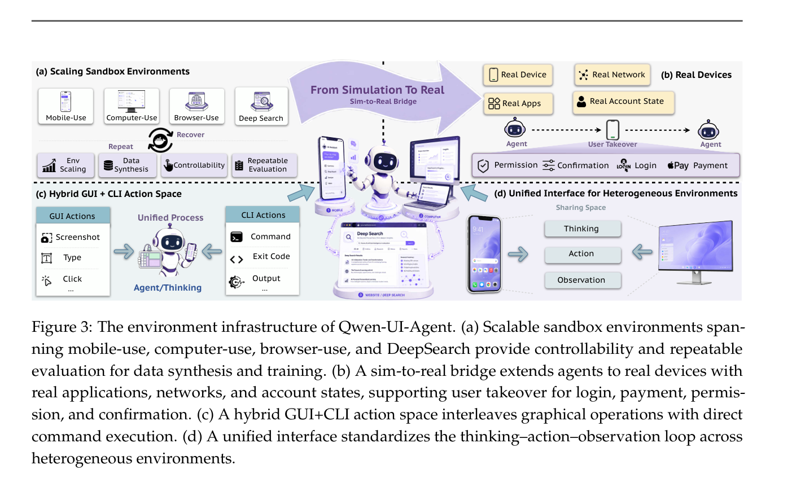
Figure 3: The environment infrastructure of Qwen-UI-Agent. (a) Scalable sandbox environments span- ning mobile-use, computer-use, browser-use, and DeepSearch provide controllability and repeatable evaluation for data synthesis and training. (b) A sim-to-real bridge extends agents to real devices with real applications, networks, and account states, supporting user takeover for login, payment, permis- sion, and confirmation. (c) A hybrid GUI+CLI action space interleaves graphical operations with direct command execution. (d) A unified interface standardizes the thinking–action–observation loop across heterogeneous environments.
2.2.1Scaling Sandbox Environments2.2.1 规模化沙盒环境
Sandbox environments provide controlled and resettable task states for training, evaluation, and ablation. Our suite spans mobile-use, computer-use, browser-use, and DeepSearch tasks. Each domain retains its native applications, environment-specific context, and state-based verification mechanisms. A key strength of our infrastructure is its scalability: it supports up to 10,000 isolated sandbox environments running in parallel, enabling large-scale rollout and agent training.
沙盒环境为训练、评估与消融提供受控且可重置的任务状态。我们的套件覆盖移动使用、计算机使用、浏览器使用与 DeepSearch 任务，各领域均保留原生应用、环境专属上下文与基于状态的验证机制。该基础设施的一项关键优势是可扩展性：最多支持 10,000 个隔离沙盒环境并行运行，为大规模 rollout 与智能体训练提供支撑。
• Mobile Use. We build our mobile sandbox on the environment provided by MobileWorld, which offers a resettable Android system with 20 applications and supports GUI task execution, agent-user interaction, and MCP tool use (Kong et al., 2026). To address the scaling bottleneck of KVM-based emulators, we rebuilt the MobileWorld environment on redroid (Remote Android Project, 2024), which runs Android as a container on the host kernel without QEMU or nested KVM. This design enables complete device-and-backend environments to be replicated across ordinary container hosts. Its containerized device instances and self-hosted application backends provide controllable initial states and reproducible state transitions. Building on this infrastructure, we construct diverse task-relevant environment contexts, synthesize tasks, and generate state-based verifiers. The resulting sandbox provides a stable and scalable environment for trajectory collection and agent training.
• 移动使用。我们的移动沙盒构建于 MobileWorld 提供的环境之上——后者提供一个预装 20 个应用的可重置 Android 系统，支持 GUI 任务执行、智能体-用户交互与 MCP 工具使用（Kong et al., 2026）。为突破基于 KVM 的模拟器的扩展瓶颈，我们在 redroid（Remote Android Project, 2024）上重建了 MobileWorld 环境：Android 以容器形式运行于宿主内核，无需 QEMU 或嵌套 KVM。这一设计让完整的设备加后端环境可以在普通容器主机上复制；容器化的设备实例与自托管的应用后端则提供可控的初始状态和可复现的状态转移。在该基础设施之上，我们构建多样的任务相关环境上下文、合成任务并生成基于状态的验证器，为轨迹收集与智能体训练提供稳定且可扩展的环境。
• Computer Use. We build our computer-use sandbox on the Ubuntu virtual-machine environment provided by OSWorld, which supports real desktop applications, operating-system operations, and cross-application workflows (Xie et al., 2024). While the standard OSWorld interaction interface is GUI-based, we extend it with direct bash execution, allowing the agent to interleave GUI operations and CLI commands within the same trajectory. For our newly constructed tasks, we further create task-specific initial environment states and state-based verifiers for some of these tasks. Together, these extensions provide a controllable and scalable environment for collecting trajectories and training agents under both GUI-only and hybrid GUI+CLI interaction.
• 计算机使用。我们的计算机使用沙盒构建于 OSWorld 提供的 Ubuntu 虚拟机环境之上，该环境支持真实桌面应用、操作系统操作与跨应用工作流（Xie et al., 2024）。OSWorld 的标准交互接口基于 GUI，我们对其扩展了直接执行 bash 的能力，使智能体能在同一轨迹中交错使用 GUI 操作与 CLI 命令。针对新构建的任务，我们还为其中部分任务创建了任务专属的初始环境状态与基于状态的验证器。这些扩展共同提供了可控且可扩展的环境，支撑在仅 GUI 与混合 GUI+CLI 两种交互模式下的轨迹收集与智能体训练。
• Browser Use. Our web environment is a self-contained browser runtime implemented with FastAPI, Playwright (Microsoft, 2020), and Chromium. Each episode runs in a fresh Playwright BrowserContext with isolated cookies, cache, and local storage, and begins from a task-specific page and state. The agent receives rendered screenshots and interacts through browser-native GUI actions. The JavaScript-based verifiers inspect the DOM and persistent application state, allowing alternative action sequences to
• 浏览器使用。我们的网页环境是由 FastAPI、Playwright（Microsoft, 2020）与 Chromium 实现的自包含浏览器运行时。每一轮次都在全新的 Playwright BrowserContext 中运行，cookie、缓存与本地存储彼此隔离，并从任务专属的页面与状态起步。智能体接收渲染后的截图，通过浏览器原生 GUI 动作进行交互；基于 JavaScript 的验证器则检查 DOM 与持久化应用状态，从而让殊途同归的动作序列同样
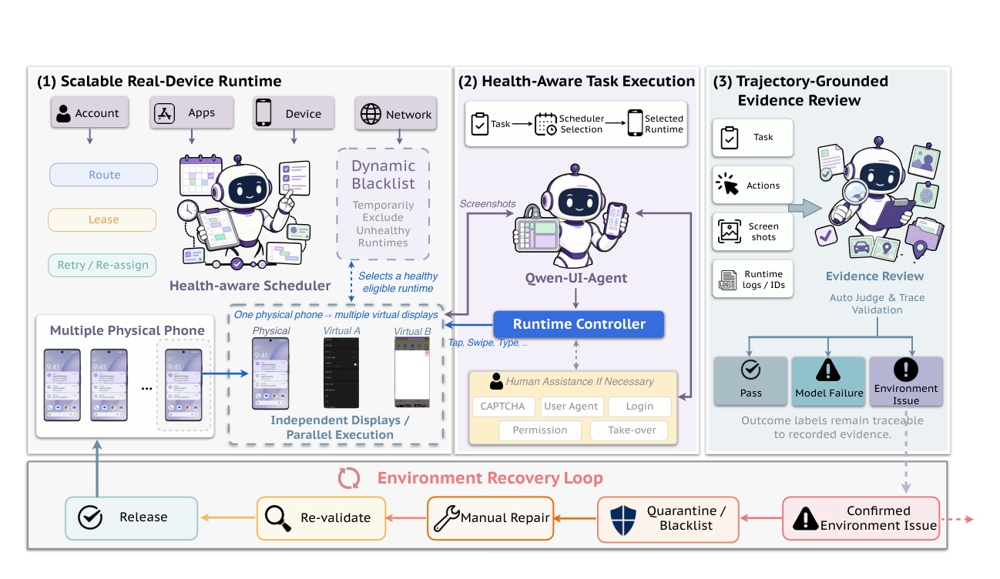
Figure 4: Real-device mobile runtime with closed-loop environment governance. The health-aware scheduler routes each task to an eligible phone, App/account, and display; unhealthy targets remain blacklisted until repair and revalidation. Virtual displays allow one phone to run multiple Apps concur- rently. Evidence-based review separates task success, model failure, and environment failure from the complete trajectory, and confirmed environment issues are fed back to the scheduler.
receive credit when they reach the required state.
在达到所需状态时获得通过。
• DeepSearch. The DeepSearch environment complements interactive browser control with structured information-access tools. Serper (Serper, 2023) provides ranked search results, while Jina Reader (Jina AI, 2024) converts selected web pages and documents into model-consumable text. The agent can iteratively reformulate queries, select sources, retrieve full content, and synthesize evidence across pages. This environment therefore targets open-ended, multi-source information seeking in which the principal observations are search results and retrieved documents rather than rendered GUI states.
• DeepSearch。DeepSearch 环境以结构化的信息访问工具补充交互式浏览器控制：Serper（Serper, 2023）提供排序后的搜索结果，Jina Reader（Jina AI, 2024）将选定的网页与文档转换为模型可直接消费的文本。智能体可迭代地重构查询、筛选来源、检索全文并综合跨页证据。该环境因而面向开放式的多源信息检索——其主要观测是搜索结果与检索到的文档，而非渲染后的 GUI 状态。
2.2.2Real-Device Mobile Environment: From Simulated Sandboxes to Real-World Learning2.2.2 真机移动环境：从模拟沙盒到真实世界学习
Why Real Devices Matter? Sandbox environments provide stable and resettable task states, making them essential for large-scale rollout and training. However, they cannot fully capture the evolving application states, permission-related constraints, and or execution-time disruptions such as unexpected pop-ups and network instability. On real devices, application interfaces and content change over time, permissions and CAPTCHA interrupt execution, and network or device failures can occur at any step. The Chinese mobile ecosystem further amplifies these challenges: super Apps, dense interfaces, and frequent pop-ups make it impossible to reproduce such execution paths in a sandbox. To make Qwen-UI- Agent work reliably under these conditions, we build a real-device mobile runtime and use it for model training and evaluation. We further construct MobileWorld-Real, which is introduced in Section 3.2, to systematically evaluate agent performance on real devices.
真机为何重要？沙盒环境提供稳定且可重置的任务状态，是大规模 rollout 与训练不可或缺的基础；但它无法完全刻画不断演变的应用状态、权限相关约束，以及执行时的中断——如意外的弹窗与网络不稳定。在真实设备上，应用界面与内容随时间变化，权限请求与验证码会打断执行，网络或设备故障可能出现在任何一步。中国移动生态进一步放大了这些挑战：超级应用、密集的界面与频繁的弹窗，使此类执行路径无法在沙盒中复现。为让 Qwen-UI-Agent 在这些条件下可靠运行，我们构建了真机移动运行时，并将其用于模型训练与评估；同时构建了 MobileWorld-Real（见第 3.2 节），系统性评估智能体的真机表现。
Real-device Mobile Runtime. We build a real-device mobile runtime comprising over 100 physical devices and over 150 applications. At this scale, assigning each task a reliable and usable execution device becomes a central systems challenge. As shown in Figure 4, the health-aware scheduler continuously tracks the health and availability of each device, application, account, network connection, and display.
真机移动运行时。我们构建的真机移动运行时包含 100 余台物理设备与 150 余个应用。在这一规模下，为每个任务分配一台可靠可用的执行设备成为核心的系统挑战。如图 4 所示，健康感知调度器持续跟踪每台设备、应用、账号、网络连接与显示器屏幕的健康状况与可用性。
When a task enters the queue, it selects an eligible execution target, leases the required resources to the task, and reroutes execution to another target when failures occur. This health-aware orchestration keeps the environment productive despite environment-side failures caused by the inherent instability of real phones, applications, and network connections.
任务进入队列后，调度器会选定一个合格的执行目标，将所需资源租借给该任务，并在故障发生时把执行改道至另一目标。得益于这种健康感知的编排，即便真实手机、应用与网络连接固有不稳定会引发环境侧故障，环境仍能持续高效运转。
To further scale real-device environment, we leverage the virtual-screen mechanism (Genymobile, 2018) that allows a single phone to host multiple application sessions concurrently on separate displays. The runtime controller binds each virtual display to a corresponding agent session, ensuring that observations are delivered to the correct agent and that its actions are executed on the intended display. This design increases the number of active execution environments without requiring a proportional increase in physical devices. Additionally, real-world tasks often involve either sensitive operations that require explicit user approval or missing information that must be provided by the user. We therefore introduce a dedicated User Agent that can provide missing information, obtain explicit confirmation for data- sensitive or payment-related operations, and hand control to the user when an action requires direct human intervention such as CAPTCHA. After the required input or operation is completed, the task resumes from the updated environment state.
为进一步扩展真机环境，我们利用虚拟屏幕机制（Genymobile, 2018），让一部手机能在多个独立显示器上并发承载多个应用会话。运行时控制器把每个虚拟显示器绑定到对应的智能体会话，确保观测送达正确的智能体、其动作在预期显示器上执行——无需按比例添置物理设备即可扩充活跃执行环境的数量。此外，真实任务常涉及需要用户明确批准的敏感操作，或必须由用户提供的信息。为此，我们引入专门的 User Agent：它可补充缺失信息、为涉及敏感数据或支付的操作取得明确确认，并在动作需要人类直接干预（如输入验证码）时把控制权移交用户；所需的输入或操作完成后，任务从更新后的环境状态继续执行。
A real-device runtime also needs to distinguish model failures from failures of the execution environment itself. Application restrictions, unavailable services, unstable devices, and network errors may interrupt a trajectory even when the model’s decisions are valid. The scheduler maintains a dynamic blacklist over unhealthy devices, removes them from routing, and restores them only after manual inspection. We employ a VLM-based judge to examine the complete trajectory and to distinguish among task success, model failure, and environment failure. Confirmed environment failures update the Scheduler and maintenance queue, while validated trajectories are retained for training.
真机运行时还须区分模型失败与执行环境自身的失败：应用限制、服务不可用、设备不稳定与网络错误，都可能在模型决策完全正确的情况下打断轨迹。调度器为不健康的设备维护动态黑名单，将其移出路由，且仅在人工检查后才恢复使用。我们采用基于 VLM 的裁判检查完整轨迹，区分任务成功、模型失败与环境失败三类结果；确认的环境失败会更新调度器与维护队列，而经过验证的轨迹则保留用于训练。
2.2.3Hybrid GUI+CLI Action Space2.2.3 混合 GUI+CLI 动作空间
Real-device environments expand the range of states an agent can encounter, but real-world utility also depends on how effectively the agent can act on them. GUI interaction provides universal access to user-facing applications and visual context, but pure GUI execution may turn structured operations into long sequences of grounding, clicking, and typing. CLI execution offers a direct programmatic access to files, code, system settings, and batch operations, but is less suitable when tasks depend on visual understanding, application-specific interfaces, or services without programmable access. GUI and CLI therefore offer complementary forms of environment access: GUI enables broad application coverage and visually grounded interaction, while CLI provides efficient execution over programmatic state.
真机环境扩展了智能体可能遇到的状态范围，但真实世界效用还取决于智能体能否对这些状态高效行动。GUI 交互可普适地访问面向用户的应用与视觉上下文，但纯 GUI 执行可能把结构化操作拖成长串的定位、点击与输入序列；CLI 执行则直接、程序化地访问文件、代码、系统设置与批量操作，但在任务依赖视觉理解、应用专属界面或无可编程访问入口的服务时并不适用。二者因此构成互补的环境访问方式：GUI 提供广泛的应用覆盖与视觉锚定的交互，CLI 提供对程序化状态的高效执行。
We therefore equip Qwen-UI-Agent with the unified GUI+CLI action space defined in Section 2.1.2, and our environments expose both forms of access through a single execution interface. In the computer-use environment, every action is dispatched to a lightweight execution service inside the VM: GUI actions are translated into native input events, while cli_command runs the command in a non-interactive shell, without visually locating and operating a terminal application. The resulting stdout, stderr, and exit status are returned as structured observations alongside the post-action screenshot, allowing the model to condition its next decision jointly on programmatic and visual state.
为此，我们为 Qwen-UI-Agent 配备第 2.1.2 节定义的统一 GUI+CLI 动作空间，并让环境通过单一执行接口暴露这两种访问形式。在计算机使用环境中，每个动作都被派发给虚拟机内的轻量执行服务：GUI 动作转换为原生输入事件；cli_command 则在非交互式 shell 中运行命令，无需以可视化方式定位并操作终端应用。产生的 stdout、stderr 与退出状态作为结构化观测，连同动作后截图一并返回，模型从而能同时依据程序化状态与视觉状态做出下一步决策。
Reliable CLI execution requires environment-side handling beyond spawning a shell. Command exe- cution is bounded by a timeout budgeted for slow operations such as dependency installation, while failures like non-zero exits and timeouts are returned as error observations rather than aborting the episode, allowing the model to diagnose and recover within the same trajectory. In batched actions, GUI and CLI sub-actions execute in order with their CLI outputs aggregated into a single observation. Executed commands are also recorded into the shell history, so that verifiers inspecting terminal state credit CLI-based solutions as well.
可靠的 CLI 执行还需要生成 shell 之外的环境侧保障：命令执行受超时预算约束，以容纳依赖安装等缓慢操作；非零退出与超时等失败作为错误观测返回，而非中止整个回合，模型因而能在同一轨迹内诊断并恢复。批量动作中，GUI 与 CLI 子动作按顺序执行，CLI 输出聚合为单一观测；已执行的命令同时记入 shell 历史，检查终端状态的验证器同样能为基于 CLI 的方案记分。
2.2.4Unified Interface for Heterogeneous Environments2.2.4 异构环境的统一接口
Mobile-use, computer-use, browser-use, and DeepSearch environments expose different resource models, action spaces, observation formats, and verification procedures. We therefore introduce a unified envi- ronment interface that standardizes the environment lifecycle and agent-facing inputs and outputs, while delegating execution, reset, and verification to environment-specific adapters. This allows the same agent and training pipeline to operate across heterogeneous environments without imposing identical runtime semantics.
移动使用、计算机使用、浏览器使用与 DeepSearch 环境各自暴露不同的资源模型、动作空间、观测格式与验证流程。为此，我们引入统一环境接口，将环境生命周期与面向智能体的输入输出标准化，同时把执行、重置与验证委托给环境专属的适配器。这样，同一智能体与训练流水线即可横跨异构环境运行，而无需强加一致的运行时语义。
The interface exposes a common asynchronous lifecycle comprising acquire, reset, step, evaluate, tear_down, and release. Each acquired environment is represented as a leased session bound to a backend and, where necessary, a display identifier, which consistently routes screenshots, actions, and evaluations to the same isolated context. Backend adapters implement resource initialization, observation capture, action execution, and evaluation, while task adapters preserve platform-specific reset and verification logic. All environments return a common transition format containing observations, a termination signal, and reward information.
该接口暴露由 acquire、reset、step、evaluate、tear_down 与 release 组成的公共异步生命周期。每个被获取的环境表示为一个租借会话，绑定到某一后端，并在必要时绑定显示器标识，从而将截图、动作与评估一致地路由到同一隔离上下文。后端适配器负责资源初始化、观测捕获、动作执行与评估；任务适配器则保留平台特定的重置与验证逻辑。所有环境均返回包含观测、终止信号与奖励信息的统一转移格式。
The policy and environment independently declare their native action spaces. When they differ, sup- ported GUI operations are translated through a canonical intermediate representation, with coordinates normalized according to the target platform. The hybrid GUI, CLI, and API actions defined in Section 2.1.2 remain available through native adapters, and their visual or structured results are returned through the same observation stream. This design provides a shared rollout, data-collection, and evaluation pipeline while retaining the native interaction semantics of each platform.
策略与环境各自独立声明原生动作空间；当二者不一致时，受支持的 GUI 操作经由规范化中间表示进行转换，坐标按目标平台归一化。第 2.1.2 节定义的混合 GUI、CLI 与 API 动作仍可经原生适配器使用，其视觉或结构化结果通过同一观测流返回。这一设计既提供共享的 rollout、数据收集与评估流水线，又保留了各平台的原生交互语义。
2.3Agent-Driven Data Flywheel2.3 智能体驱动的数据飞轮
Continually improving GUI agents requires an iterative, closed-loop process spanning task design, envi- ronment construction, verifier development, data curation, model training, evaluation, and error analysis. When humans drive these stages, iteration becomes slow and difficult to scale as the coverage expands across applications, platforms, and capability dimensions. To address this issue, we therefore introduce an AutoResearch-style, agent-driven data flywheel that shifts human involvement from executing each stage to high-level oversight and targeted intervention.
持续改进 GUI 智能体需要一个迭代闭环，涵盖任务设计、环境构建、验证器开发、数据整理、模型训练、评估与错误分析。若由人力驱动这些环节，随着覆盖面在应用、平台与能力维度上扩展，迭代会变得缓慢且难以规模化。为此，我们引入 AutoResearch 式的智能体驱动数据飞轮，把人的角色从逐环节执行转向高层监督与针对性干预。
Overall Procedure. As illustrated in Figure 5, we organize our agent driven data flywheel into two stages: domain capability bootstrapping and an iterative refinement loop. During bootstrapping, we use strong foundation models to analyze the domain knowledge and capabilities required for the various domain covering mobile, desktop and web. Guided by this analysis, the agents generate an initial pool of tasks and corresponding environment contexts, from which candidate trajectories are collected. Following MAI-UI (Zhou et al., 2025a), we first perform multiple rounds of rejection sampling and aggregate the accepted trajectories into a unified SFT corpus. This process yields a strong initial policy with broad coverage of the target domain. Building on this policy, our agent-driven failure analysis identifies the model’s remaining weaknesses and maps them to targeted goals for the next cycle. These goals guide the generation of new tasks, environment configurations, and, where applicable, task- specific verifiers. The accepted trajectories are then incorporated into the training corpus to further improve the model, thereby closing the loop and initiating the next iteration. Across both the initial policy construction and iterative improvement stages, strong foundation models generate tasks and environment configurations, synthesize task-specific verifiers, evaluate trajectories, analyze failures, and plan the optimization and execution of subsequent iterations. Human involvement primarily focuses on designing and implementing the overall system, overseeing its operation, and intervening or revising the workflow when necessary. We next describe four design choices that make this agent-driven data flywheel scalable and effective.
总体流程。如图 5 所示，智能体驱动的数据飞轮分为两个阶段：领域能力自举与迭代精炼循环。自举阶段，我们用强基础模型分析移动、桌面与网页等各领域所需的知识与能力；在其指引下，智能体生成初始任务池及相应的环境上下文，并从中收集候选轨迹。遵循 MAI-UI（Zhou et al., 2025a）的做法，我们先执行多轮拒绝采样，再把通过筛选的轨迹聚合为统一的 SFT 语料，得到一个对目标领域覆盖广泛的强初始策略。在此基础上，智能体驱动的失败分析识别模型尚存的弱点，并将其映射为下一轮循环的针对性目标；这些目标进而指导新任务、环境配置以及（在适用时）任务专属验证器的生成。通过筛选的轨迹随后并入训练语料以进一步改进模型——闭环由此合拢，下一轮迭代随之启动。无论在初始策略构建还是迭代改进阶段，强基础模型都承担生成任务与环境配置、合成任务专属验证器、评估轨迹、分析失败以及规划后续迭代优化与执行的工作；人的参与则集中于设计并实现整体系统、监督其运行，以及在必要时干预或修订工作流。下面介绍使这一智能体驱动数据飞轮可扩展且有效的四项设计选择。
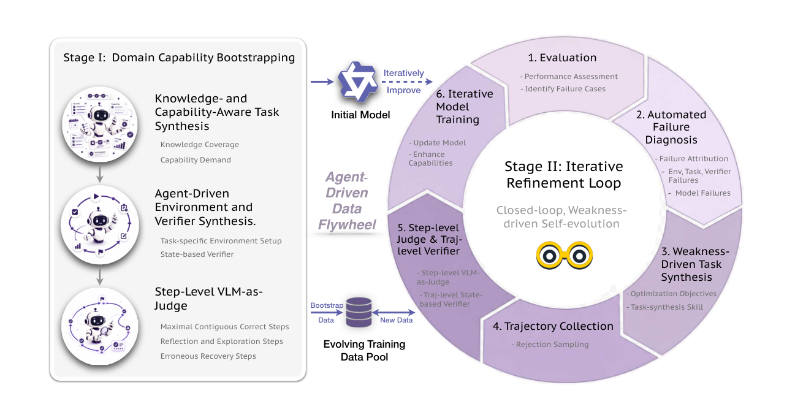
Figure 5: The data flywheel of Qwen-UI-Agent. Domain capability bootstrapping initializes training, iterative refinement loop identifies capability weaknesses and generate targeted tasks, and the resulting data improve the next training iteration.
Knowledge- and Capability-Aware Task Synthesis. Training tasks define the learning signals available to the model and therefore shape the knowledge and behaviors it can acquire. We organize task synthesis along two conceptually distinct dimensions: knowledge coverage, which determines what the agent needs to know, and capability demand, which determines how the agent must reason and act to complete the task. Knowledge coverage specifies the domain-specific operational knowledge, including application functions, interface conventions, tool usage, and common workflows. Capability demand captures the transferable reasoning and interaction abilities, such as long-horizon state tracking, precise constraint following, numerical and temporal reasoning, and error recovery. For each target domain, we use strong foundation models to construct an initial hierarchical function tree for knowledge coverage and a capability profile for capability demand. We then compile them into a reusable task-synthesis skill containing composition rules, difficulty controls, environment prerequisites, and representative examples. Conditioned on the objective of the current iteration, this skill lets the agent automatically generate task toward the required knowledge and capabilities.
知识与能力感知的任务合成。训练任务决定模型可获得的学习信号，进而塑造其能习得的知识与行为。我们从两个概念上相互独立的维度组织任务合成：知识覆盖决定智能体需要知道什么，能力需求决定智能体必须如何推理与行动才能完成任务。知识覆盖规定领域特定的操作知识，包括应用功能、界面惯例、工具用法与常见工作流；能力需求刻画可迁移的推理与交互能力，如长程状态跟踪、精确的约束遵循、数值与时间推理、错误恢复。对每个目标领域，我们先用强基础模型构建知识覆盖的层次功能树与能力需求的能力画像，再将其编译为可复用的任务合成技能，其中包含组合规则、难度控制、环境前置条件与代表性示例；以当前迭代目标为条件，该技能让智能体自动生成指向所需知识与能力的任务。
Agent-Driven Environment and Verifier Synthesis. Task synthesis determines the capabilities that a training instance should elicit, but interactive training additionally requires a reproducible environment in which the task is feasible and executable. Given a synthesized task, our agents use Environment State Synthesis, detailed in Section 2.4.3, to construct the application state, files, records, accounts, and cross-application context needed for execution. For tasks with reliably checkable outcomes, agents further synthesize state-based verifiers that inspect the resulting application, file, database, or system state, yielding executable task–verifier pairs .
智能体驱动的环境与验证器合成。任务合成决定一个训练实例应当考察哪些能力，但交互式训练还要求存在一个可复现的环境，使任务在其中可行且可执行。给定合成任务后，我们的智能体借助环境状态合成（详见第 2.4.3 节）构建执行所需的应用状态、文件、记录、账号与跨应用上下文；对结果可靠可查的任务，智能体进一步合成基于状态的验证器以检查最终的应用、文件、数据库或系统状态，从而产出可执行的任务–验证器对。
Step-Level Judging for Scalable SFT and Executable Verification for Online RL. Executable verifiers provide high-precision outcome signals, but constructing and validating one is costly. Even with stronger foundation models, we find that synthesizing and validating executable verifiers remains time-consuming, whereas the accuracy of model-based judges improves alongside model development. We therefore extend the step-level trajectory judge used in MAI-UI (Zhou et al., 2025a) and apply a VLM-based judge to mobile, web, and computer-use trajectories, including hybrid GUI+CLI interactions. Given the instruction, trajectory, and visual or structured observations, the judge extracts three forms of useful supervision: maximal contiguous steps that correctly advance the task, the first step that initiates each reflection or exploration phase, and recovery segments that return execution from an erroneous state to a
面向可扩展 SFT 的步级评判与面向在线 RL 的可执行验证。可执行验证器提供高精度的结果信号，但构建并验证一个验证器的代价高昂。我们发现，即便采用更强的基础模型，合成并验证可执行验证器依然耗时，而基于模型的裁判的准确率却随模型进步而提升。为此，我们扩展了 MAI-UI（Zhou et al., 2025a）中的步级轨迹裁判，将基于 VLM 的裁判应用于移动、网页与计算机使用轨迹，涵盖混合 GUI+CLI 交互。给定指令、轨迹与视觉或结构化观测，裁判提取三类有用的监督信号：正确推进任务的最长连续步段、开启每个反思或探索阶段的首个步骤，以及将执行从错误状态拉回
valid path. Retaining only the first reflection or exploration step captures the useful decision to reconsider without over-keeping a potentially noisy branch. This fine-grained procedure recovers effective training signal from both successful and failed trajectories. Empirically, we find that step-level data filtering yields SFT performance comparable to or better than training on complete trajectories selected by executable verifiers. We therefore use fine-grained VLM judgment to scale process supervision for SFT, while constructing executable verifiers for the high-precision outcome signals required by online RL.
正确路径的恢复片段。只保留每个反思或探索阶段的第一个步骤，既捕捉到“重新考虑”这一有用决策，又不会过度保留可能带噪的分支。这一细粒度流程能从成功与失败轨迹中同样恢复有效的训练信号。经验上，步级数据过滤带来的 SFT 性能与在可执行验证器筛选出的完整轨迹上训练相当乃至更优。因此，我们以细粒度 VLM 评判为 SFT 扩展过程监督，同时为在线 RL 所需的高精度结果信号构建可执行验证器。
Failure Analysis Driven Iteration. We construct a broad and diagnostic evaluation suite for each domain to track model performance and define the optimization objectives of the next iteration. For each failed task, an analysis agent examines the complete trajectory and distinguishes model failures from envi- ronment, task, or verifier failures. Model failures are then mapped to a structured cause, such as missing application knowledge, constraint violations, state-tracking errors, or insufficient verification. The system aggregates these task-level diagnoses to identify the most prevalent and consequential weaknesses of the current policy and converts them into a prioritized set of optimization objectives. Conditioned on these objectives and the task-synthesis skill, agents generate targeted tasks and corresponding environment setups and, where applicable, task-specific verifiers for the next cycle. Non-model issues are routed to environment maintenance or task and verifier revision, where agents diagnose and address the identified problems accordingly.
失败分析驱动的迭代。我们为每个领域构建广泛且具诊断性的评估套件，用于跟踪模型表现并确定下一轮迭代的优化目标。对每个失败任务，分析智能体检视完整轨迹，区分模型失败与环境、任务或验证器失败；模型失败随后被归因为结构化的原因，如缺失的应用知识、约束违反、状态跟踪错误或验证不足。系统汇总这些任务级诊断，找出当前策略最普遍、影响最大的弱点，并将其转化为按优先级排列的一组优化目标。以这些目标与任务合成技能为条件，智能体为下一轮循环生成针对性任务、相应的环境配置，以及（在适用时）任务专属验证器。非模型问题则被分派到环境维护或任务与验证器修订流程，由智能体诊断并解决所发现的问题。
2.4Training2.4 训练
2.4.1Supervised Fine-Tuning (SFT)2.4.1 监督微调（SFT）
Qwen-UI-Agent is designed to support task execution across mobile, computer-use, web, and DeepSearch settings. This scope poses two coupled challenges for SFT: jointly acquiring strong capabilities across all target domains within a single model, and preserving the general reasoning and agentic competence needed for robust real-world task completion.
Qwen-UI-Agent 旨在支持移动、计算机使用、网页与 DeepSearch 场景下的任务执行。这一范围给 SFT 带来两个相互耦合的挑战：一是让单一模型同时习得所有目标领域的强能力，二是保留稳健完成真实任务所需的通用推理与智能体能力。
Domain-Conditioned Expert Training. Across mobile, desktop, and web, each domain places different demands on the agent. Mobile tasks require reliable execution in real-device environments, where interfaces are app-specific, workflows are frequently interrupted by pop-ups, and safety-sensitive actions must remain under user control. Desktop tasks often combine GUI control with Bash-based file and system operations. Web tasks require interaction with dynamic webpages, while DeepSearch tasks require the agent to retrieve, verify, and synthesize evidence through Search APIs.
领域条件专家训练。移动、桌面与网页各领域对智能体的要求不尽相同：移动任务要求在真机环境中可靠执行——界面因应用而异、工作流频繁被弹窗打断、安全敏感动作必须始终处于用户控制之下；桌面任务常把 GUI 控制与基于 Bash 的文件及系统操作相结合；网页任务要求与动态网页交互；DeepSearch 任务则要求智能体通过 Search API 检索、验证并综合证据。
We train a specialized expert for each domain and then consolidate their capabilities. Each expert is trained mainly on data from its target domain, together with a controlled mixture of data from other domains. This cross-domain mixture helps each expert retain capabilities that transfer across domains and reduces overfitting to its target domain. Practical deployment requires a single model that can operate across all supported settings. We therefore merge the domain-expert checkpoints into a unified model. Model merging combines their complementary strengths within a single checkpoint, preserving the capabilities acquired by the individual experts with little additional training overhead.
我们为每个领域训练一个专属专家，再将其能力整合。每个专家主要在目标领域数据上训练，辅以来自其他领域的受控数据配比；这种跨领域配比帮助各专家保留可迁移的跨领域能力，并降低对目标领域的过拟合。实际部署需要单一模型覆盖所有支持场景，因此我们将领域专家检查点合并为统一模型：模型合并把各专家的互补优势融于单一检查点，以极少的额外训练开销保留各自习得的能力。
Preserving General and Agentic Capabilities with In-Distribution Data. General reasoning and agen- tic capabilities are essential for real-world use, where agents need to respond to diverse and open-ended user requests. Some requests may even be unrelated to GUI tasks, yet the model should still respond appropriately. Even within GUI tasks, real-world deployment exposes the agent to out-of-distribution (OOD) states and objectives that may require knowledge, reasoning, instruction following, retrieval, coding, or tool use not anticipated during training. We therefore seek to preserve and, where possible, strengthen the general reasoning and agentic capabilities inherited from the base model, providing an important foundation for handling unfamiliar situations and maintaining a consistent user experience.
以分布内数据保留通用与智能体能力。通用推理与智能体能力对真实使用至关重要：智能体需要回应多样而开放的用户请求，有些请求甚至与 GUI 任务无关，模型仍须得体作答。即便在 GUI 任务之内，真实部署也会让智能体遭遇分布外（OOD）的状态与目标，可能需要训练中未预见的知识、推理、指令遵循、检索、编码或工具使用。因此，我们力求保留并尽可能增强从基础模型继承的通用推理与智能体能力，为应对陌生情形、维持一致的用户体验打下重要基础。
We find that the most effective strategy is to use in-distribution data that reinforces successful behaviors that the starting model can produce. We construct a broad query pool covering general question
我们发现，最有效的策略是用分布内数据强化起始模型本就能成功完成的行为。我们构建了一个覆盖通用问答
answering, mathematics, coding, visual understanding, search, and agentic tool use, sample responses from the starting model, and retain verified correct examples after format normalization. A small proportion of these examples is mixed with GUI trajectories during SFT. In our experiments, examples that the starting model is capable of solving are substantially more effective for capability preservation than challenging examples on which it fails. The former rehearse established capabilities using targets aligned with the model’s own response distribution, whereas the latter shift training toward capability acquisition and can introduce competing optimization signals.
问答、数学、编码、视觉理解、搜索与智能体工具使用等领域，从起始模型采样回复，经格式规范化后保留核验无误的示例；SFT 时将其中一小部分与 GUI 轨迹混合。实验表明，就能力保留而言，起始模型本就能解出的示例远比其解不出的困难示例有效：前者以与模型自身回复分布一致的目标演练既有能力，后者则把训练重心移向能力获取，并可能引入相互竞争的优化信号。
Sliding-Window Training for Efficient Long-Trajectory SFT. Long-trajectory SFT becomes expensive when every action is packed with its visual and textual context as a separate training sample, causing highly overlapping context to be processed repeatedly across adjacent actions. We therefore divide each trajectory into windows of n = 5 consecutive steps and advance each window by n −1 = 4 steps, leaving a one-step overlap between adjacent windows. This overlap ensures that the first newly supervised action in each subsequent window can condition on at least two screenshots. In each subsequent window, the shared boundary step remains in the input context, but its loss is masked because it has already been supervised in the preceding window. Each full subsequent window therefore supervises four new actions. Screenshots before the current window are omitted from the visual input, while the earlier textual trajectory history is retained as context. Joint supervision reduces this repeated context processing and increases the number of supervised action targets per processed context, thereby improving training efficiency.
面向高效长轨迹 SFT 的滑窗训练。若每个动作都连同其视觉与文本上下文封装为独立训练样本，长轨迹 SFT 会代价高昂：高度重叠的上下文在相邻动作间被反复处理。为此，我们把每条轨迹切成 n = 5 个连续步的窗口，且每次仅前移 n −1 = 4 步，使相邻窗口保留一步重叠——这保证后续窗口中首个新受监督的动作至少能以两张截图为条件。在每个后续窗口中，共享的边界步保留在输入上下文里，但因已在前一窗口受监督，其损失被掩蔽；于是每个完整后续窗口恰好监督四个新动作。当前窗口之前的截图不进入视觉输入，更早的文本轨迹历史则作为上下文保留。这一联合监督减少了重复的上下文处理，提高了每个已处理上下文的受监督动作目标数，从而提升训练效率。
2.4.2Action RL: Correcting Recurring Action Errors2.4.2 动作 RL：纠正复现性动作错误
A single local error in a long-horizon GUI task can move the interface into an incorrect state and compromise subsequent decisions. SFT learns from successful demonstrations but does not explicitly suppress recurring action errors. We therefore introduce Action RL, an action-level reinforcement learning stage that combines targeted error-pattern data with action-aware rewards to improve local decision reliability.
长程 GUI 任务中，一个局部错误就足以把界面带入错误状态，殃及后续决策。SFT 从成功示范中学习，却不会显式抑制复现性动作错误。为此，我们引入动作 RL——一个动作级强化学习阶段，将针对性错误模式数据与动作感知奖励相结合，提升局部决策的可靠性。
Recurring Action-Error Patterns. Across applications, we identify six recurring patterns:
复现性动作错误模式。纵观各类应用，我们识别出六种复现性模式：
• Confusable-Element Grounding. When a screen contains visually or semantically similar icons, controls, or list items, the model may ground the action to a nearby distractor rather than the correct one.
• 易混淆元素定位。当屏幕上存在视觉或语义相近的图标、控件或列表项时，模型可能把动作定位到附近的干扰项而非正确目标。
• Sorting and Ranking. The model may misinterpret ordering requirements such as ordinal positions, top-k selection, newest-versus-oldest ordering, or rankings conditioned on multiple attributes, leading it to select the wrong item or process items in the wrong order.
• 排序与排名。模型可能误解排序要求——如序数位置、top-k 选择、最新与最旧的先后，或基于多属性的排名——进而选错条目，或以错误顺序处理条目。
• Quantity and Multi-Target Completeness. Tasks that specify an exact quantity or require actions over multiple related targets are prone to partial completion. The model may process too few or too many objects, or omit one component of a compound objective.
• 数量与多目标完整性。指定确切数量、或要求对多个相关目标执行动作的任务容易出现部分完成：模型可能处理过少或过多的对象，或遗漏复合目标中的某个组成部分。
• Premature Completion. The model may declare success after preparing the intended result but before executing the final state-changing action, such as saving an edit, sending a message, submitting a form, or publishing content.
• 过早完成。模型可能在备好预期结果之后、尚未执行最终改变状态的动作时便宣告成功——例如保存编辑、发送消息、提交表单或发布内容。
• Repetitive Action Loops. The model may repeatedly execute the same action or a short action sequence without making task-relevant progress, often because it fails to recognize that the interface state has not changed or cannot identify a recovery action.
• 重复动作循环。模型可能反复执行同一动作或一小段动作序列，却无实质进展——通常是因为它未察觉界面状态并未改变，或找不到可用的恢复动作。
• Long-Tail Action Selection Failures. The model may fail to invoke infrequent but critical actions, such as open, ask_user, or long_press, and instead fall back on unsuitable frequent actions such as click.
• 长尾动作选择失败。模型可能无法调用低频却关键的动作（如 open、ask_user 或 long_press），转而退回到并不合适的高频动作（如 click）。
The shared structure of these failures makes them reusable targets for action-level optimization across applications. Their importance, however, is not reflected by their frequency in naturally collected trajectories: rare but consequential patterns can be overwhelmed by more common actions.
这些失败的共同结构使其成为可跨应用复用的动作级优化目标。然而，其重要性并不体现在自然收集轨迹中的出现频率上：稀有但后果重大的模式可能被更高频的常见动作所淹没。
Targeted Error-Pattern Data Construction. To correct this coverage imbalance, we combine historical- trajectory mining with active environment interaction. From existing trajectories, we localize the actions that initiate each failure; for repetitive behavior, a visual judge distinguishes unproductive loops from purposeful exploration. For patterns with insufficient historical coverage, agents actively explore exe- cutable environments, identify relevant interface structures, construct tasks around them, and collect new rollouts. The resulting corpus preserves realistic failure contexts from the current policy while deliberately increasing the representation of rare but important errors.
针对性错误模式数据构建。为纠正这一覆盖失衡，我们把历史轨迹挖掘与主动环境交互结合起来：从既有轨迹中定位引发每次失败的动作；对重复性行为，由视觉裁判区分无效循环与有目的的探索。对历史覆盖不足的模式，则让智能体主动探索可执行环境，识别相关界面结构、围绕其构建任务并收集新的 rollout。所得语料既保留当前策略的真实失败上下文，又刻意提高稀有但重要错误的占比。
Action-Aware Reward and Training. Using this targeted corpus, action RL assigns a structured reward to each predicted action at step t:
动作感知奖励与训练。基于这一针对性语料，动作 RL 为第 t 步预测的每个动作赋予结构化奖励：
wtypeCt + wargCtQt −λsensSt −λrepLtwtypeCt + wargCtQt −λsensSt −λrepLt
rt = Ftrt = Ft
. (5). (5)
where Ft ∈{0, 1} indicates format validity, Ct measures action-type correctness, and Qt measures argument quality using pixel distance, lexical similarity, tag matching, or LLM-based judgment. The terms St and Lt penalize incorrect sensitive actions and repetitions in the action history, respectively. During training, we observe declining token entropy and progressively shorter reasoning traces. We therefore apply entropy regularization together with lower and upper bounds on reasoning length to prevent policy collapse while avoiding unnecessary verbosity.
其中 Ft ∈{0, 1} 表示格式有效性，Ct 衡量动作类型正确性，Qt 则通过像素距离、词汇相似度、标签匹配或基于 LLM 的判断衡量参数质量；St 与 Lt 分别惩罚错误的敏感动作与动作历史中的重复。训练中我们观察到 token 熵持续下降、推理痕迹逐渐缩短，因此施加熵正则化并设置推理长度上下界，在防止策略坍塌的同时避免不必要的冗长。
2.4.3Online RL: Learning Long-Horizon Decision Making2.4.3 在线 RL：学习长程决策
Long-horizon GUI tasks are not simply collections of locally correct actions. An action may appear reasonable in the current state yet lead the agent into a future state from which the task becomes difficult or impossible to complete. Action RL improves local decision reliability, but does not fully capture such delayed trajectory-level consequences; we therefore introduce Online RL to optimize end-to-end task success through environment interaction.
长程 GUI 任务绝非局部正确动作的简单堆叠：一个动作在当前状态下看似合理，却可能把智能体带入日后难以乃至无法完成任务的境地。动作 RL 改善局部决策可靠性，却无法完全捕捉这种滞后的轨迹级后果。为此，我们引入在线 RL，通过环境交互直接优化端到端的任务成功。
Unified Environment Infrastructure for Scalable Rollouts. Learning from complete interactions re- quires large-scale and reliable rollout generation across heterogeneous GUI environments. Building on the sandbox infrastructure described in Section 2.2.1, we develop a unified environment infrastructure that manages environment allocation, reset, interaction, and evaluation across domains. On Alibaba Cloud, this infrastructure deploys sandbox environments for mobile, computer use, web, and DeepSearch, supporting up to 10,000 concurrent rollouts. Each domain retains its native applications, action spaces, and verification mechanisms, while the shared infrastructure exposes a common environment lifecycle and rollout interface to the training pipeline. For tasks that must be executed on physical phones, we use the virtual-screen mechanism described in Section 2.2.2, allowing multiple application sessions to run concurrently on separate displays of a single device. Across our real-device cluster, this mechanism increases aggregate rollout throughput by approximately 20× compared with running the same clus- ter without virtual screens. Together, this infrastructure provides scalable rollout capacity across both sandbox and real-device environments for Online RL.
面向可扩展 rollout 的统一环境基础设施。从完整交互中学习，需要在异构 GUI 环境上大规模、可靠地生成 rollout。在第 2.2.1 节沙盒基础设施之上，我们开发了统一环境基础设施，跨领域管理环境分配、重置、交互与评估。在阿里云上，该基础设施部署移动、计算机使用、网页与 DeepSearch 沙盒环境，支持多达 10,000 个并发 rollout；各领域保留原生应用、动作空间与验证机制，共享基础设施则向训练流水线暴露统一的环境生命周期与 rollout 接口。对必须在物理手机上执行的任务，我们采用第 2.2.2 节的虚拟屏幕机制，让多个应用会话在单台设备的独立显示器上并发运行——在我们的真机集群上，与不开虚拟屏幕相比，该机制使聚合 rollout 吞吐量提升约 20×。这套基础设施共同为在线 RL 提供覆盖沙盒与真机环境的可扩展 rollout 能力。
Task–Verifier Synthesis. Building on this rollout infrastructure, we automatically construct executable task–verifier pairs that provide reliable outcome supervision through three phases:
任务–验证器合成。在该 rollout 基础设施之上，我们分三个阶段自动构建可执行的任务–验证器对，以提供可靠的结果监督：
• Environment State Synthesis. Coding agents analyze the codebases underlying each sandbox and distill reusable data-injection skills for their applications. Using these skills, the agents construct coherent initial environment states spanning multiple applications. For example, an environment state representing a computer science PhD student preparing a paper submission may contain mutually consistent emails, photos, files, calendar events, and social-media records across the student’s phone. Environment state synthesis is critical because it largely determines the difficulty and diversity of downstream tasks. Generating tasks directly from benchmark-provided states confines task synthesis to the application states and data already available in the benchmark.
• 环境状态合成。编码智能体分析每个沙盒底层的代码库，为其应用提炼可复用的数据注入技能，再借助这些技能构建跨多个应用的连贯初始环境状态。例如，一个代表计算机科学博士生准备投稿论文的环境状态，可能包含其手机上相互一致的邮件、照片、文件、日历事件与社交媒体记录。环境状态合成至关重要：它在很大程度上决定下游任务的难度与多样性。若直接从基准自带的状态生成任务，任务合成便被局限在基准已有的应用状态与数据之内。
• Task Synthesis. Conditioned on each synthesized environment state, an LLM generates multiple tasks at different difficulty levels, including workflows spanning multiple applications. An indepen- dent LLM judge then filters the generated tasks for feasibility and consistency with the initialized environment state.
• 任务合成。以每个合成环境状态为条件，一个 LLM 生成多个不同难度的任务，包括跨多应用的工作流；随后由独立的 LLM 裁判过滤生成任务，核查其可行性及与已初始化环境状态的一致性。
• Verifier Synthesis. Using the unified environment infrastructure, coding agents autonomously launch corresponding sandboxes, inject synthesized environment states, and construct task-specific code- based verifiers. Each verifier is validated through rollouts from multiple agent models, while a VLM-based judge assesses whether verifier outputs are consistent with observed rollout evidence.
• 验证器合成。借助统一环境基础设施，编码智能体自主启动相应沙盒、注入合成环境状态，并构建任务专属的基于代码的验证器；每个验证器都经多个智能体模型的 rollout 验证，同时由基于 VLM 的裁判评估验证器输出是否与观测到的 rollout 证据一致。
This automated synthesis and execution-validation pipeline produces approximately 10,000 validated task–verifier pairs for Online RL.
这一自动化合成与执行验证流水线共为在线 RL 产出约 10,000 个经验证的任务–验证器对。
Online RL with a Model-Adaptive Task Curriculum. Given the validated task–verifier pairs, we use verifier-guided Online RL to improve long-horizon decision making. Following MAI-UI (Zhou et al., 2025a), we adopt a tailored variant of Group Relative Policy Optimization (GRPO) for GUI interaction trajectories. For each task, the current policy samples a group of K complete interaction trajectories {τi}K
采用模型自适应任务课程的在线 RL。给定经验证的任务–验证器对，我们用验证器引导的在线 RL 改进长程决策。遵循 MAI-UI（Zhou et al., 2025a），我们采用为 GUI 交互轨迹定制的 Group Relative Policy Optimization（GRPO）变体：对每个任务，当前策略采样一组共 K 条的完整交互轨迹 {τi}K
i=1. The verifier evaluates the final environment state s(i)
i=1。验证器评估每条轨迹的最终环境状态 s(i)
T of each trajectory. We compute its binary outcome reward and group-relative advantage as
T。我们据此计算二值结果奖励与组相对优势：
∈{0, 1}, ¯rx = 1 ∈{0, 1}, ¯rx = 1
K ∑ j=1K ∑ j=1
rj, ˆAi = ri −¯rx Std(r1, . . . , rK) + ϵ. (6)
rj, ˆAi = ri −¯rx Std(r1, . . . , rK) + ϵ. (6)
s(i)s(i)
ri = vxri = vx
KK
where the mean and standard deviation are computed over the K rollouts sampled for the same task
其中均值与标准差在同一任务采样的 K 条 rollout 上计算
x. GRPO updates the policy using these relative advantages. Unlike action RL, which provides local- ized action-level feedback, this stage optimizes complete trajectories using terminal verifier outcomes, targeting long-horizon planning, state tracking, and intermediate decision making.
x。GRPO 以这些相对优势更新策略。不同于提供局部动作级反馈的动作 RL，本阶段以终止验证器的结果优化完整轨迹，着眼于长程规划、状态跟踪与中间决策。
The training value of a task is not fixed: a task that is initially too difficult may become learnable as the policy acquires related capabilities from other tasks. Under the group-relative objective, tasks whose rollouts all fail or all succeed produce no reward variation and therefore provide little immediate learning signal. However, permanently removing difficult tasks would miss the point at which they enter the policy’s learning frontier. We therefore treat task difficulty as a dynamic property of the current policy and organize the curriculum into an active training pool and a monitoring pool. Tasks with intermediate empirical success rates enter the active pool and receive the full rollout budget, while currently unsolvable tasks remain in the monitoring pool with a smaller budget. Once a difficult task begins to produce successful rollouts, it is promoted to the active pool for full-scale training. Mastered tasks are also monitored with a small budget and reactivated if their performance declines. This closed- loop curriculum continually identifies newly learnable tasks while concentrating rollout computation where it provides the most informative relative rewards.
任务的训练价值并非一成不变：起初过难的任务，可能随策略从其他任务习得相关能力而变得可学。在组相对目标下，rollout 全部失败或全部成功的任务不会产生奖励方差，几乎不提供即时学习信号；但若永久移除困难任务，又会错过它们进入策略学习边界的时机。为此，我们把任务难度视为当前策略的动态属性，将课程组织为活跃训练池与监控池：经验成功率居中的任务进入活跃池、获得完整 rollout 预算，当前不可解的任务留在监控池、只分配较小预算。一旦困难任务开始产出成功 rollout，便被提升至活跃池进行全规模训练；已掌握的任务同样以小预算监控，表现下滑即重新激活。这一闭环课程持续发现新近可学的任务，并把 rollout 算力集中在能产生最有信息量的相对奖励之处。
2.5Harness Layer: Proactive Service and Cross-Platform Task Execution2.5 Harness 层：主动服务与跨平台任务执行
Strong task execution is necessary, but it is not sufficient for GUI agents to move beyond isolated task execution and become effective assistants in users’ everyday digital lives. Existing agents are largely reactive: users must recognize a need, formulate an instruction, and invoke the agent, even when that need is already evident from signals in their digital environment. Workflows may also span devices, with relevant information appearing on a phone while subsequent actions must be completed on a computer. This creates two fundamental gaps: when should an agent initiate assistance, and how can it carry the resulting workflow across devices without losing context? We address both through a shared harness layer above the underlying GUI agents. The harness connects signals from the user’s digital environment, maintains a unified representation of ongoing activities, and uses this context to initiate and coordinate tasks across mobile and computer environments.
强大的任务执行是必要条件，却不足以让 GUI 智能体超越孤立的任务执行，成为用户日常数字生活中的得力助手。现有智能体大多是被动的：即便需求已从数字环境的信号中显而易见，用户仍须自行察觉、组织指令、再调用智能体。工作流还可能横跨设备——相关信息出现在手机上，后续动作却要在电脑上完成。这带来两个根本性缺口：智能体应于何时主动伸出援手？又如何在不丢失上下文的前提下把工作流跨设备延续？我们在底层 GUI 智能体之上以共享 harness 层一并解决：它连接来自用户数字环境的信号，维护对进行中事务的统一表示，并据此在移动与计算机环境间发起和协调任务。
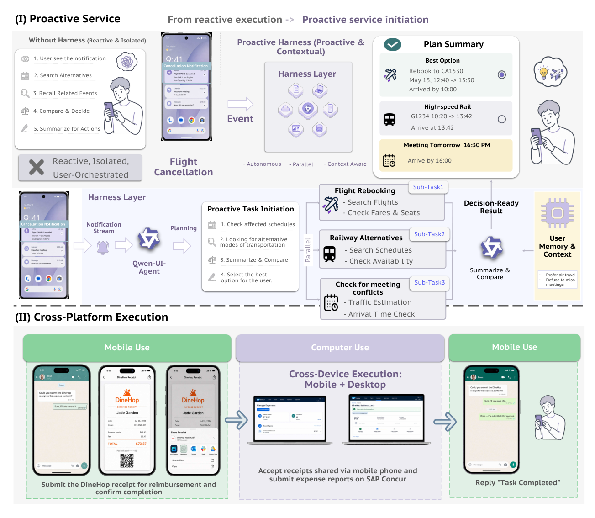
Figure 6: Overview of our harness for proactive service initiation and cross-platform execution. (I) Without the harness, users must manually interpret notifications, retrieve related context, and provide instructions for the agent. The proactive harness instead detects a flight cancellation, reasons over relevant affairs, proactively implement flight rebooking, railway alternatives, and meeting-conflict checks, and report an actionable plan. (II) The harness also maintains task state and support cross-platform execution. In the restaurant-selection example, Qwen-UI-Agent discovers candidates on mobile, organizes them in a desktop spreadsheet, sends the artifact for approval, and saves the selected locations back to mobile.
Built on this layer, we develop two capabilities. Proactive service addresses the first gap by shifting task initiation from explicit instructions to to actionable events inferred from the user’s digital signals, enabling the agent to identify and prepare useful assistance before the user asks. Cross-platform task execution addresses the second by carrying workflows across phones and computers while preserving shared context, dependencies, and task state. Together, these capabilities extend GUI agents along two complementary dimensions: when a task can begin and where it can be carried forward.
基于这一层，我们发展出两项能力。主动服务把任务发起从显式指令转向从用户数字信号推断出的可行动事件，弥合第一个缺口，让智能体在用户开口之前就识别并备好有用的协助；跨平台任务执行则在保留共享上下文、依赖关系与任务状态的同时，把工作流在手机与电脑之间延续，弥合第二个缺口。二者沿两个互补维度拓展 GUI 智能体：一项任务可以何时开始，又可以在何处继续推进。
2.5.1Proactive Service Based on Mobile Notifications2.5.1 基于移动通知的主动服务
Mobile Notifications as a High-Value Signal Source. A proactive agent needs signals that are timely, broadly available, and controllable by the user. We use mobile notifications as this interface. A phone aggregates signals from communication, travel, finance, logistics, and scheduling, and notifications expose many events at the moment they become actionable, such as a flight cancellation, a payment deadline, or a schedule change. Compared with continuous screen, audio, or video monitoring, notification access is
移动通知作为高价值信号源。主动式智能体需要及时、覆盖面广且可由用户控制的信号，我们以移动通知充当这一接口：手机汇聚来自通信、出行、金融、物流与日程的信号，而通知恰在许多事件变得可行动的时刻将其呈现出来——航班取消、支付截止、日程变更皆属此类。与持续的屏幕、音频或视频监控相比，访问通知
lightweight and governed by explicit per-application permissions. Notifications are nevertheless partial and noisy: they report only what an application chooses to surface. The harness therefore treats them as observations rather than complete world state, and gathers additional information only when needed.
更为轻量，且受明确的按应用权限管控。不过，通知是局促且有噪声的——它只报告应用选择呈现的内容。因此，harness 把通知视为观测而非完整的世界状态，仅在需要时才收集额外信息。
From a Notification to a Proactive Workflow. Consider a late-night notification that the user’s flight the following morning has been canceled. A conventional GUI agent would wait for an explicit instruction before searching for alternatives. We instead envision a proactive workflow that goes beyond a simple search. A flight cancellation is rarely an isolated event: it may jeopardize an important meeting, require changes to a hotel reservation, and force a choice between rebooking and rail travel. The key question is whether an agent can anticipate and prepare these interdependent follow-up actions before the user asks. Our harness does so by reconstructing the broader context before requesting the users attention. It parses the cancellation into a structured event, associates it with the ongoing trip and the relevant meeting deadline, retrieves user preferences from memory, queries feasible alternatives, evaluates them against the user’s underlying objective, and presents a decision-ready proposal. Actions with external consequences, such as rebooking or modifying a reservation, remain subject to user confirmation. Figure 11 and Figure 28 of Appendix A.3 show two representative examples of this behavior: a scheduled morning brief that combines the user’s commitments with live weather and commute conditions, and a proactive travel-recovery plan triggered by a flight-cancellation notification.
从通知到主动工作流。设想一条深夜通知：用户次日清晨的航班被取消。常规 GUI 智能体会坐等明确指令再去搜索替代方案，而我们设想的是超越简单搜索的主动工作流。航班取消很少是孤立事件：它可能危及一场重要会议、需要改动酒店预订，还迫使用户在改签与铁路出行之间抉择。关键在于，智能体能否赶在用户开口之前预判并备好这些相互关联的后续动作。我们的 harness 的做法是：先重建更广的上下文，再去请求用户注意——把取消通知解析为结构化事件，与进行中的行程及相关会议截止时间关联，从记忆中检索用户偏好，查询可行的替代方案，依据用户的深层目标逐一评估，最终给出决策就绪的方案。凡具外部后果的动作（如改签或修改预订）仍须用户确认。附录 A.3 的图 11 与图 28 展示了两个代表性示例：一则融合用户日程与实时天气、通勤状况的定时晨报，以及由航班取消通知触发的主动出行恢复计划。
The harness implements this workflow as a stateful pipeline that parses notifications into structured events, associates them with persistent affairs, derives executable tasks, and uses execution outcomes to update memory and future behavior. Its central abstraction is the affair, a persistent representation of an ongoing real-world matter. An event records what happened at a particular time; an affair captures what is still unfolding across events, applications, and days; and a task specifies what should be done next. This separation allows the harness to reason about the user’s underlying goals.
harness 把这一工作流实现为有状态的流水线：解析通知为结构化事件，将其与持久事务关联，导出可执行任务，并利用执行结果更新记忆与后续行为。其核心抽象是事务（affair）——对一件正在进行的现实事务的持久表示。事件记录特定时刻发生了什么；事务捕捉跨事件、跨应用、跨数日仍在展开的事情；任务则规定下一步应当做什么。这一分层使 harness 得以围绕用户的深层目标展开推理。
• Event Perception. Incoming notifications are processed in short windows. The event parser removes low-value noise and converts useful notifications into structured events containing their source, entities, timestamp, urgency, and available actions. These events are stored with their temporal order and provenance, providing an evidence base for subsequent reasoning.
• 事件感知。新到的通知以短时间窗口处理：事件解析器滤除低价值噪声，把有用通知转换为结构化事件，内含来源、实体、时间戳、紧急程度与可用动作；这些事件连同时间顺序与出处一并存储，为后续推理提供证据基础。
• Affair State and Memory. For each new event, the harness retrieves relevant recent events, active affairs, the current context state, and profile memory. It then associates the event with an existing affair or creates a new one, updating the affair’s lifecycle, key entities, deadlines, unresolved gaps, and supporting evidence. Affairs retain the evolving state of individual trips, purchases, meetings, or family matters, while profile memory stores more stable knowledge such as user preferences, relationships, and behavioral patterns. Together, these two forms of memory combine situation-specific reasoning with long-term personalization.
• 事务状态与记忆。对每个新事件，harness 检索相关近期事件、活跃事务、当前上下文状态与画像记忆，继而将事件关联到既有事务或创建新事务，并更新其生命周期、关键实体、截止时间、未决缺口与支撑证据。事务保留单次出行、购物、会议或家庭事务的演进状态；画像记忆则存储更稳定的知识，如用户偏好、人际关系与行为模式。两类记忆相辅相成，把情境化推理与长期个性化融为一体。
• Affair-level Reasoning and Task Formation. The harness reasons over updated affairs to identify expected next steps, missing information, unfinished actions, time pressure, and dependencies or conflicts across affairs. Conclusions are grounded in observed events or stored user information and are associated with confidence estimates. The task generator then evaluates whether intervening now would provide sufficient value, considering factors such as urgency, consequence, evidential support, and the amount of user effort saved. Depending on this assessment, a task is proposed immediately, placed in a passive to-do list, or suppressed.
• 事务级推理与任务形成。harness 对更新后的事务展开推理，识别预期的下一步、缺失的信息、未完成的动作、时间压力，以及跨事务的依赖或冲突；结论一律锚定于观测到的事件或存储的用户信息，并附带置信度估计。任务生成器随后评估此刻介入的价值是否足够，考量紧急程度、后果、证据支持以及可为用户节省的操作量，并据此决定任务是被立即提出、放入被动待办清单，还是被搁置。
• Proactive Preparation and Controlled Execution. For a selected task, the harness chooses an appro- priate executor, such as an information-seeking tool, a mobile GUI agent, or a computer-use agent. It may perform low-risk preparatory actions before interrupting the user, such as retrieving alternative trains, comparing travel times, or checking refund status. The resulting task card therefore presents concrete, decision-ready options rather than another reminder. Operations with external consequences, including payments, bookings, and sending messages, remain subject to user confirmation.
• 主动准备与受控执行。对选定任务，harness 挑选合适的执行器——信息检索工具、移动 GUI 智能体或计算机使用智能体，并可在打扰用户之前先行执行低风险的准备动作，如检索替代列车、比较出行时间、查看退款状态。由此生成的任务卡呈现的是具体、决策就绪的选项，而非又一条提醒。凡具外部后果的操作（支付、预订、发送消息等）仍须用户确认。
• Personalization and Continual Evolution. The harness continuously refines both its understanding
• 个性化与持续进化。harness 持续打磨其对用户的理解
of the user and its proactive behavior. Profile memory is built from explicit user input, evidence- supported observations, allowing the system to learn preferences, relationships, and routines. Feedback memory records how users respond to proposed tasks, including approval, modification, rejection, ignoring, and completion. These signals reinforce or revise profile entries and calibrate future task value, timing, and degree of automation. Evolution therefore occurs at two levels: profile memory learns what matters to the user, while feedback memory learns when and how the agent should intervene, making proactive assistance increasingly personalized and useful.
及其主动行为。画像记忆由显式用户输入与有证据支持的观察累积而成，让系统得以学习用户的偏好、人际关系与日常习惯；反馈记忆则记录用户对所提任务的回应——批准、修改、拒绝、忽略或完成。这些信号不断强化或修订画像条目，并校准未来任务的价值、时机与自动化程度。进化因此发生在两个层面：画像记忆学习什么对用户重要，反馈记忆学习智能体应在何时、以何种方式介入——主动协助由此日益个性化、日益有用。
2.5.2Cross-Platform Task Execution2.5.2 跨平台任务执行
Users’ digital activities are distributed primarily across mobile devices and computers. As a result, many real-world workflows span multiple platforms whose interfaces, capabilities, and states differ. For example, a user may ask the agent to identify receipts in the mobile photo gallery, transfer the selected images to a desktop, rename them according to their recognized dates, and generate a structured expense spreadsheet. This workflow combines visual selection on the phone, cross-device artifact transfer, and file processing on the computer. Treating each device as an independent episode would fragment the task state, obscure dependencies and failures, and leave the user to coordinate the handoffs. Figure 12 and Figure 29 of Appendix A.3 show two such workflows executed by our harness: the receipt-organization task above, and a parallel restaurant search that operates multiple mobile apps concurrently before summarizing the results on the computer; in both cases, mobile subtasks run on virtual screens without blocking the user’s own use of the device. We therefore implement the harness as a hierarchical planner– executor system with device-addressed actions, shared execution state, and explicit cross-platform operations:
用户的数字活动主要分布在移动设备与计算机两端，许多真实工作流因而横跨多个界面、能力与状态各异的平台。例如，用户可能要求智能体在手机相册中找出票据、把选中图片传到桌面、按识别出的日期重命名，并生成结构化的开支表格——这一工作流融合了手机上的视觉选择、跨设备的产物传输与计算机上的文件处理。若把每台设备当作独立回合处理，任务状态会被割裂，依赖与失败被掩盖，协调交接的负担则落到用户头上。图 12 与附录 A.3 的图 29 展示了 harness 执行的两个此类工作流：其一是上述票据整理任务，其二是并行的餐厅搜索——先在多个移动应用上并发操作，再于计算机端汇总结果；两例中的移动子任务都运行在虚拟屏幕上，不干扰用户对设备的正常使用。为此，我们把 harness 实现为层次化的规划器–执行器系统，具备设备寻址动作、共享执行状态与显式的跨平台操作：
• Global Perception and Device Grounding. The harness first enumerates available devices, applica- tions, displays, and workspaces. Each observation is tagged with its application, device, and display, and screenshots are assembled into a labeled multi-device view. This allows the planner to inspect mobile and desktop states jointly. The shared state stores the instruction, application–device mappings, recent observations, artifacts, tool outputs, and subtask results. Device-tagged updates change only the corresponding platform state while preserving the remaining context.
• 全局感知与设备定位。harness 首先枚举可用设备、应用、显示器与工作区；每个观测都标注其应用、设备与显示器，截图则被组装为带标签的多设备视图，规划器由此可联合审视移动与桌面状态。共享状态存储指令、应用–设备映射、近期观测、产物、工具输出与子任务结果；带设备标签的更新只改动相应平台的状态，其余上下文保持不变。
• Dependency-aware Planning and Executor Selection. We implement an OpenClaw-like planner with a persistent session, workspace, and tool registry (OpenClaw Contributors, 2026). The planner decomposes the objective into dependency-aware subtasks and selects an appropriate executor for each. It invokes Qwen-UI-Agent, exposed as a GUI subagent, for visually grounded application interaction. Search, file, CLI, and API tools handle information seeking, deterministic system operations, and synthesis. Each GUI call specifies its instruction and target application and device. Returned results update the session, allowing subsequent steps to be replanned from the latest state.
• 依赖感知的规划与执行器选择。我们实现了一个类 OpenClaw 的规划器，具有持久会话、工作区与工具注册表（OpenClaw Contributors, 2026）。规划器把目标分解为依赖感知的子任务，并为每个子任务选择合适的执行器：视觉锚定的应用交互交由以 GUI 子智能体形式暴露的 Qwen-UI-Agent；搜索、文件、CLI 与 API 工具负责信息检索、确定性的系统操作与结果综合。每次 GUI 调用都指明指令及目标应用与设备，返回结果更新会话，后续步骤得以从最新状态重新规划。
• Parallel Multi-agent Execution. Independent calls to different applications or environments run concurrently. A unique identifier and observation queue isolate each subtask’s actions and feedback. Its action–observation loop is sequential, while different subtasks progress in parallel. On Android, a display manager assigns application-specific subtasks to separate virtual displays on one physical device. Each display provides independent capture and display-addressed input, enabling multiple Qwen-UI-Agent instances to operate different applications concurrently.
• 并行多智能体执行。对不同应用或环境的独立调用并发运行：唯一标识符与观测队列隔离每个子任务的动作与反馈，其动作–观测循环内部串行，不同子任务之间并行推进。在 Android 上，显示器管理器把应用专属子任务分配到同一物理设备的独立虚拟显示器；每个显示器提供独立的画面捕获与设备寻址输入，多个 Qwen-UI-Agent 实例因而能并发操作不同应用。
• Hybrid Execution with Qwen-UI-Agent. Each GUI subtask uses the hybrid action space in Sec- tion 2.1.2. Qwen-UI-Agent uses GUI actions for visually grounded interaction and CLI or API actions for structured operations, file processing, and external services. Desktop CLI actions execute shell commands, while Android actions use ADB shell commands; their output, errors, and exit status return as structured observations. Compatible operations can be batched. Platform adapters route actions to the addressed environment and transfer artifacts between devices.
• 与 Qwen-UI-Agent 的混合执行。每个 GUI 子任务都使用第 2.1.2 节的混合动作空间：Qwen-UI-Agent 以 GUI 动作执行视觉锚定的交互，以 CLI 或 API 动作处理结构化操作、文件处理与外部服务。桌面 CLI 动作执行 shell 命令，Android 动作使用 ADB shell 命令，其输出、错误与退出状态作为结构化观测返回；兼容操作可批量执行。平台适配器将动作路由到被寻址的环境，并在设备间传输产物。
3Experiments3 实验
3.1Experimental Setup3.1 实验设置
Models and implementation details. We evaluate three variants of Qwen-UI-Agent, including 27B, 35B- A3B, and 4B models. The 27B model serves as our primary variant for end-to-end agent evaluation across mobile, computer-use, browser, DeepSearch, and general agentic benchmarks. The models are initialized from their corresponding base checkpoints and trained using the pipeline described in Section 2.4. Unless otherwise specified, we follow the official interaction budget and evaluation configuration of each benchmark.
模型与实现细节。我们评估 Qwen-UI-Agent 的三个变体：27B、35B-A3B 与 4B。其中 27B 是端到端智能体评测的主力变体，覆盖移动、计算机使用、浏览器、DeepSearch 与通用智能体基准。各模型从对应基础检查点初始化，并按第 2.4 节的流水线训练。除非另有说明，均遵循各基准的官方交互预算与评测配置。
Benchmarks. We evaluate Qwen-UI-Agent across five groups of benchmarks covering real-device mobile use, computer use, browser use, DeepSearch, GUI grounding, and general and agentic capabilities.
基准。我们在五组基准上评估 Qwen-UI-Agent，覆盖真机移动使用、计算机使用、浏览器使用、DeepSearch、GUI grounding，以及通用与智能体能力。
• Real-device mobile use. We evaluate end-to-end mobile task execution on MobileWorld-Real and AndroidDaily (Sui et al., 2026). MobileWorld-Real, introduced in Section 3.2, contains complex human- written tasks executed on live Android devices in the Chinese mobile ecosystem. AndroidDaily focuses on high-frequency everyday tasks on real Android devices and provides a complementary evaluation of common mobile-use scenarios. We further evaluate on MobileWorld (Kong et al., 2026), which provides a stable simulated environment for challenging long-horizon, cross-application tasks.
• 真机移动使用。我们在 MobileWorld-Real 与 AndroidDaily（Sui et al., 2026）上评估端到端移动任务执行。第 3.2 节介绍的 MobileWorld-Real 包含在中国移动生态的真实 Android 设备上执行的人工编写复杂任务；AndroidDaily 聚焦真机上的高频日常任务，为常见移动使用场景提供补充评测。我们另在 MobileWorld（Kong et al., 2026）上评估，它为富有挑战的长程跨应用任务提供稳定的模拟环境。
• Computer use. We evaluate desktop task execution on OSWorld-Verified (Xie et al., 2024) and OSWorld-v2 (Yuan et al., 2026). OSWorld-Verified evaluates task progress across a broad collection of desktop applications and operating-system workflows. OSWorld-v2 places greater emphasis on longer-horizon tasks and reports both partial progress and binary task completion. These benchmarks evaluate whether the model can combine visual interaction, command-line operations, and batched actions to complete complex computer-use workflows.
• 计算机使用。我们在 OSWorld-Verified（Xie et al., 2024）与 OSWorld-v2（Yuan et al., 2026）上评估桌面任务执行：OSWorld-Verified 在广泛的桌面应用与操作系统工作流上评估任务进度；OSWorld-v2 更强调长程任务，同时报告部分进度与二值完成两类指标。这些基准检验模型能否把视觉交互、命令行操作与批量动作结合起来，完成复杂的计算机使用工作流。
• Web navigation and DeepSearch. We use WebArena (Zhou et al., 2024) to evaluate end-to-end browser interaction on functional websites, where tasks require the model to track evolving page states and complete multi-step user objectives. We separately evaluate DeepSearch on BrowseComp (Wei et al., 2025) and BrowseComp-ZH (Zhou et al., 2025b), which measure persistent information seeking, cross-source evidence verification, and answer synthesis over the English and Chinese web. Together, these benchmarks distinguish direct interaction with web interfaces from research-intensive tasks that require information aggregation and verification.
• 网页导航与 DeepSearch。我们以 WebArena（Zhou et al., 2024）评估功能完备网站上的端到端浏览器交互，任务要求模型跟踪动态演变的页面状态、完成多步用户目标。DeepSearch 则另行在 BrowseComp（Wei et al., 2025）与 BrowseComp-ZH（Zhou et al., 2025b）上评估，二者衡量英文与中文网络上的持续信息检索、跨来源证据核验与答案综合。这些基准共同区分了“与网页界面的直接交互”和“需要信息聚合与核验的研究型任务”。
• GUI grounding. We evaluate element localization on ScreenSpot-Pro (Li et al., 2025a), ScreenSpot- V2 (Wu et al., 2024), MMBench-GUI L2 (Xuehui Wang et al., 2025), OSWorld-G-Refined (Xie et al., 2025), and UI-Vision (Nayak et al., 2025). These benchmarks cover high-resolution professional software, mobile and web interfaces, desktop applications, text and icon targets, spatial reasoning, functional reasoning, and goal-oriented grounding instructions.
• GUI grounding。我们在 ScreenSpot-Pro（Li et al., 2025a）、ScreenSpot-V2（Wu et al., 2024）、MMBench-GUI L2（Xuehui Wang et al., 2025）、OSWorld-G-Refined（Xie et al., 2025）与 UI-Vision（Nayak et al., 2025）上评估元素定位能力。这些基准覆盖高分辨率专业软件、移动与网页界面、桌面应用，涵盖文本与图标目标、空间推理、功能推理以及面向目标的定位指令。
• General and agentic capabilities. We evaluate whether GUI post-training preserves the general capabilities of the base model using MMMU-Pro (Yue et al., 2025), RealWorldQA (xAI, 2024), CharXiv- RQ (Wang et al., 2024c), MathVision (Wang et al., 2024a), AI2D (Kembhavi et al., 2016), MMLU- Pro (Wang et al., 2024b), and IFEval (Zhou et al., 2023). We further evaluate broader agentic capabilities on Tau2-Bench (Barres et al., 2025), Terminal-Bench 2.0 (Merrill et al., 2026), Claw-Eval (Ye et al., 2026), BFCL-v4 (Patil et al., 2025), SkillsBench (Li et al., 2026b), and QwenClawBench (Qwen Team & Data Team, Alibaba Group, 2026). These evaluations measure capabilities such as multimodal reasoning, instruction following, tool use, terminal operation, multi-turn interaction, and autonomous task execution beyond routine GUI navigation.
• 通用与智能体能力。我们以 MMMU-Pro（Yue et al., 2025）、RealWorldQA（xAI, 2024）、CharXiv-RQ（Wang et al., 2024c）、MathVision（Wang et al., 2024a）、AI2D（Kembhavi et al., 2016）、MMLU-Pro（Wang et al., 2024b）与 IFEval（Zhou et al., 2023）检验 GUI 后训练是否保留了基础模型的通用能力；再以 Tau2-Bench（Barres et al., 2025）、Terminal-Bench 2.0（Merrill et al., 2026）、Claw-Eval（Ye et al., 2026）、BFCL-v4（Patil et al., 2025）、SkillsBench（Li et al., 2026b）与 QwenClawBench（Qwen Team & Data Team, Alibaba Group, 2026）评估更广泛的智能体能力。这些评测覆盖多模态推理、指令遵循、工具使用、终端操作、多轮交互，以及超越常规 GUI 导航的自主任务执行等能力。
Evaluation Protocols. We follow the official task sets, environments, and primary scoring protocols unless otherwise stated. For interactive GUI benchmarks, we use the benchmark-defined task and step limits and report the corresponding success, partial-progress, or binary-completion metrics. For
评测协议。除非另有说明，我们遵循官方任务集、环境与主评分协议。对交互式 GUI 基准，采用基准定义的任务与步数上限，并报告相应的成功率、部分进度或二值完成指标。对
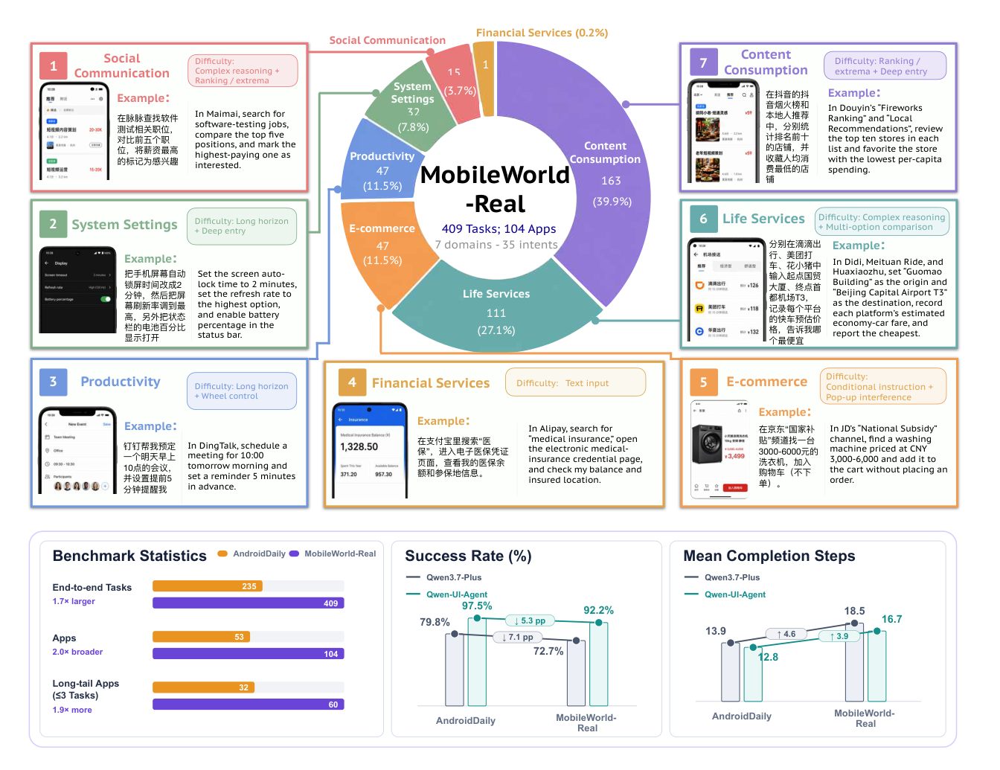
Figure 7: Overview of MobileWorld-Real, a real-device benchmark with human-written tasks that reflect the breadth of everyday mobile use. Representative examples and aggregate statistics show broad domain coverage and a long-tailed App distribution. Matched-model results further show lower success rates and longer trajectories than on AndroidDaily, highlighting the challenge of real-world mobile interaction.
MobileWorld-Real, AutoJudge assigns each trajectory one of three outcomes: pass, failed, or env_error. Environment errors are reported separately and excluded from the success-rate denominator, while average trajectory length is computed over successful runs. For WebArena, we manually verify incorrect reference answers and identified errors in the official evaluation scripts before evaluation.
MobileWorld-Real 上，AutoJudge 为每条轨迹判定三种结果之一：pass、failed 或 env_error；环境错误单独报告并从成功率分母中剔除，平均轨迹长度仅在成功运行上计算。WebArena 上，我们在评测前人工核验了不正确的参考答案，并发现了官方评测脚本中的错误。
Compared Baselines. We compare Qwen-UI-Agent against three groups of systems: frontier proprietary models, strong open-weight foundation models, and specialized GUI agents. For the general and agentic benchmarks, we additionally compare the 27B model with its base checkpoint to measure capability retention after GUI post-training. We use officially reported results when the evaluation setting is directly comparable and independently reproduce results when a matched evaluation environment is required. The source and evaluation setting of each result are indicated in the corresponding table.
对比基线。我们将 Qwen-UI-Agent 与三组系统对比：前沿专有模型、强开源权重基础模型与专用 GUI 智能体。在通用与智能体基准上，我们还将 27B 模型与其基础检查点对比，以度量 GUI 后训练后的能力保留。评测设置可直接比较时采用官方报告结果；需要匹配评测环境时则独立复现。每项结果的来源与评测设置均在相应表格中标明。
3.2MobileWorld-Real: Real-world Mobile Use Evaluation Benchmark3.2 MobileWorld-Real：真实世界移动使用评测基准
Most mobile GUI benchmarks run in sandboxes, where app states can be reset and task outcomes can be verified programmatically (Kong et al., 2026; Rawles et al., 2024). Such environments support controlled comparison, but they can not fully show whether a GUI agent can handle the changing content, account states, and interruptions found on users’ phones. We introduce MobileWorld-Real, a real-device benchmark for mobile GUI Agents in the Chinese mobile ecosystem. MobileWorld-Real uses everyday
大多数移动 GUI 基准运行在沙盒中：应用状态可重置，任务结果可程序化验证（Kong et al., 2026; Rawles et al., 2024）。这类环境支持受控比较，却无法充分检验 GUI 智能体能否应对用户手机上不断变化的内容、账号状态与中断。为此，我们提出 MobileWorld-Real——一个面向中国移动生态的移动 GUI 智能体真机基准。MobileWorld-Real 使用日常
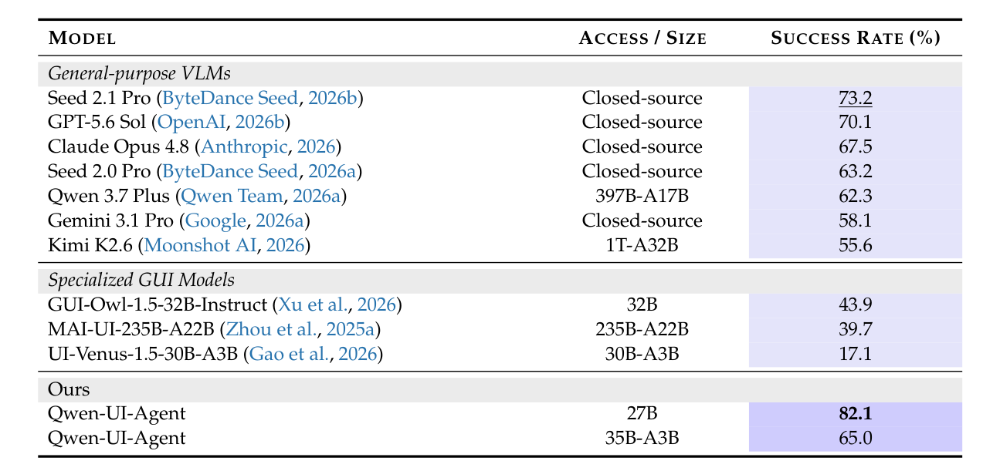
Table 2: Performance comparison on the GUI-only subset of MobileWorld (Kong et al., 2026), consisting of 117 tasks. We include representative general-purpose VLMs and specialized GUI models. The best result is highlighted in bold, and the second-best result is underlined.
tasks written by humans and runs them on live Android devices with real Apps, accounts, content, and networks. It evaluates whether an agent can complete the user’s goal while handling the uncertainty and interruptions that arise during real use.
人工编写任务，并在装有真实应用、账号、内容与网络的在线 Android 设备上执行，检验智能体能否一边应对真实使用中的不确定性与中断，一边完成用户目标。
Benchmark Design and Task Coverage. MobileWorld-Real contains 409 end-to-end tasks over 104 apps, each derived from an everyday need identified by a human contributor. These tasks fall into 7 domains of daily mobile use: content consumption, life services, productivity, e-commerce, system settings, financial services, and social communication. Within each domain, the tasks cover multiple user intents. For example, content consumption includes searching for content, browsing feeds, posting, and sharing. To evaluate these tasks under realistic conditions, we execute them on the real-device runtime described in Section 2.2.2, with live account states and dynamically changing online content. This exposes the GUI agent to pop-ups, expired logins, permission requests, CAPTCHAs, and other conditions rarely encountered in sandbox evaluations.
基准设计与任务覆盖。MobileWorld-Real 包含覆盖 104 个应用的 409 个端到端任务，每个任务都源于一位人类贡献者识别出的日常需求。任务归入日常移动使用的 7 个领域：内容消费、生活服务、效率办公、电子商务、系统设置、金融服务与社交沟通；各领域内的任务覆盖多种用户意图，例如内容消费涵盖搜索内容、浏览信息流、发帖与分享。为在真实条件下评估这些任务，我们在第 2.2.2 节所述的真机运行时上执行它们，面对真实的账号状态与动态变化的在线内容——GUI 智能体由此直面弹窗、过期登录、权限请求、验证码等沙盒评测中罕遇的状况。
Beyond these environmental challenges, many tasks also involve complex, multi-step workflows. Nearly half are labeled as hard, with common challenges including long-horizon execution, comparison and ranking, reasoning over changing information, navigation to deeply nested app functions, pop-up recovery, and cross-app coordination. The benchmark further captures the ambiguity of real user requests, which do not always provide all the information needed for successful execution. In such cases, the agent must identify the missing information, use ask_user to obtain the necessary details, or request user takeover for steps requiring user intervention before continuing the task.
除环境挑战外，许多任务还涉及复杂的多步工作流：近半数被标注为困难，常见挑战包括长程执行、比较与排名、对变化信息的推理、深入层层嵌套的应用功能、弹窗恢复以及跨应用协调。基准还保留了真实用户请求的模糊性——它们并不总给出成功执行所需的全部信息。此时，智能体必须识别缺失信息，用 ask_user 获取必要细节，或在继续任务前为需要用户介入的步骤请求用户接管。
We balance MobileWorld-Real’s realism with the need for repeated evaluation. MobileWorld-Real avoids tasks that depend on a particular past order, cart state, bank card, or other conditions that cannot be set or restored reliably. This ensures high stability of the evaluation results. Figure 7 summarizes MobileWorld-Real’s task coverage, challenge profile, and representative examples.
我们在真实性与可重复评测的需要之间为 MobileWorld-Real 取得平衡：避开依赖特定历史订单、购物车状态、银行卡或其他无法可靠设置与恢复之条件的任务，从而保证评测结果的高度稳定。图 7 概括了 MobileWorld-Real 的任务覆盖、挑战构成与代表性示例。
AutoJudge for Trajectory-level GUI Agent Evaluation. Evaluating task success on live devices is challenging. Unlike sandbox environments, real apps usually do not expose programmatic verifiers for their internal states. Moreover, an unsuccessful run may result from either agent failure or environ- mental issues, such as CAPTCHAs, expired login sessions, network failures, unavailable services, or infrastructure errors. The final screen alone is often insufficient to distinguish these cases.
面向轨迹级 GUI 智能体评测的 AutoJudge。在真机上评估任务成功与否颇具挑战：与沙盒环境不同，真实应用通常不为其内部状态提供程序化验证器；而且一次不成功的运行，既可能归因于智能体失败，也可能归因于环境问题——验证码、过期登录会话、网络故障、服务不可用或基础设施错误等。仅凭最终画面往往难以分辨这些情形。
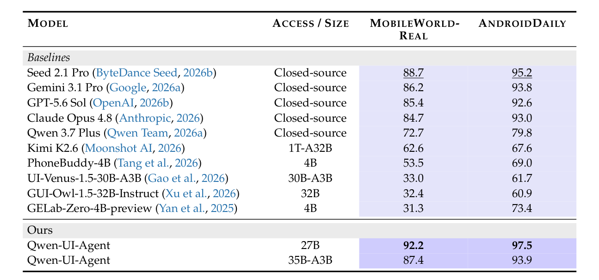
Table 3: Performance comparison on real-device mobile benchmarks. MobileWorld-Real is our proposed Chinese real-device mobile GUI benchmark (Section 3.2), and AndroidDaily (Sui et al., 2026) covers high-frequency daily scenarios on real Android devices.
To enable scalable and repeatable evaluation, we develop AutoJudge, a trajectory-level evaluator for real- device interaction. The judge prompt specifies explicit decision criteria for assigning each trajectory to one of three outcomes: pass, failed, and env_error. For each run, AutoJudge receives the task instruction and the complete execution trajectory, with every action aligned with its corresponding screenshot. Five independent VLM judges examine the same trajectory, and each produces an outcome label with a short rationale. The final outcome is determined by majority vote. By reporting environment errors separately and excluding them from the success-rate denominator, AutoJudge reduces evaluation noise caused by changing live-device conditions. Appendix A.1 evaluates AutoJudge against independent expert annotations on 666 trajectories, and its exact-match accuracy reaches 92.8%. Figures 22, 23, and 24 present representative examples of the three outcome types.
为实现可扩展、可重复的评测，我们开发了 AutoJudge——一个面向真机交互的轨迹级评估器。裁判提示词为三类判定结果（pass、failed、env_error）规定了明确的决策标准。每次运行中，AutoJudge 接收任务指令与完整执行轨迹，每个动作均与其对应截图对齐；五个独立的 VLM 裁判审查同一条轨迹，各自给出结果标签与简短理由，最终结果由多数投票决定。AutoJudge 单独报告环境错误并将其从成功率分母中剔除，从而降低真机条件变化带来的评测噪声。附录 A.1 在 666 条轨迹上将 AutoJudge 与独立专家标注对比，完全一致率达 92.8%；图 22、23 与 24 展示了三种结果类型的代表性示例。
MobileWorld-Real is designed to complement rather than replace sandbox benchmarks: it measures whether capabilities learned in controlled environments transfer to live devices. All MobileWorld-Real tasks and collected trajectories are held out from training. Since live Apps and account states change over time, we report environment errors separately and retain the complete execution trajectory for auditing and reproducibility.
MobileWorld-Real 旨在补充而非取代沙盒基准：它衡量受控环境中学到的能力能否迁移到真实设备。所有 MobileWorld-Real 任务与所收集轨迹均不参与训练；鉴于真实应用与账号状态随时间变化，我们单独报告环境错误，并保留完整执行轨迹以供审计与复现。
3.3Main Results3.3 主要结果
3.3.1Mobile-Use Evaluation.3.3.1 移动使用评测
We evaluate Qwen-UI-Agent on the GUI-only subset of MobileWorld (Kong et al., 2026), a challenging and reproducible mobile-use benchmark featuring long-horizon, cross-application workflows across diverse Android applications. The comparison includes both frontier general-purpose VLMs and specialized mobile GUI models from multiple organizations. As shown in Table 2, under the standard 50-step evaluation budget, Qwen-UI-Agent-27B achieves a success rate of 82.1%, establishing a new state of the art. It outperforms GPT 5.6 Sol, Opus 4.8, and Seed 2.1 Pro by 12.0, 14.6, and 8.9 percentage points, respectively. It surpasses the strongest specialized GUI baseline, GUI-Owl-1.5-32B-Instruct at 43.9%, by 38.2 percentage points. Qwen-UI-Agent-35B-A3B also achieves 65.0%, outperforming all specialized GUI baselines and all general-purpose VLMs except Seed 2.1 Pro and Claude Opus 4.8. When the maximum number of steps is increased to 100, the success rates of Qwen-UI-Agent-27B and Qwen-UI-Agent-35B- A3B further rise to 85.5% and 68.4%, respectively. These results demonstrate our strong long-horizon
我们在 MobileWorld（Kong et al., 2026）的仅 GUI 子集上评估 Qwen-UI-Agent。该基准富有挑战且可复现，特点是跨多样 Android 应用的长程工作流；对比对象包括前沿通用 VLM 与多家机构的专用移动 GUI 模型。如表 2 所示，在标准 50 步评测预算下，Qwen-UI-Agent-27B 取得 82.1% 的成功率，创下新的最先进水平：领先 GPT 5.6 Sol、Opus 4.8 与 Seed 2.1 Pro 分别 12.0、14.6 与 8.9 个百分点，并超出最强的专用 GUI 基线 GUI-Owl-1.5-32B-Instruct（43.9%）38.2 个百分点。Qwen-UI-Agent-35B-A3B 亦取得 65.0%，超越所有专用 GUI 基线，并超越除 Seed 2.1 Pro 与 Claude Opus 4.8 外的所有通用 VLM。当最大步数提高到 100 时，Qwen-UI-Agent-27B 与 Qwen-UI-Agent-35B-A3B 的成功率进一步升至 85.5% 与 68.4%。这些结果证明了我们出色的长程
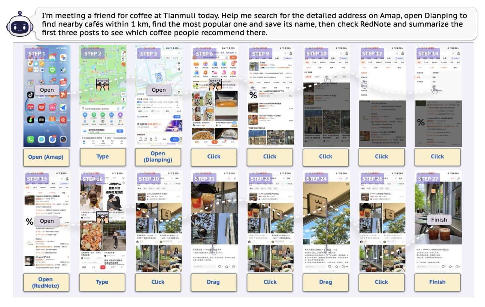
Figure 8: Demonstration of real-device mobile GUI execution. The trajectory is rendered as key frames with the executed action annotated beneath each frame. In this cross-app task, the agent looks up the target address on Amap, finds the most popular café nearby on Dianping, and posts a summary of the findings on RedNote.
planning, visual understanding, and reliable execution in complex mobile environments.
规划能力、视觉理解能力，以及在复杂移动环境中的可靠执行能力。
We further evaluate Qwen-UI-Agent on two real-device mobile benchmarks: MobileWorld-Real (Sec- tion 3.2) and AndroidDaily (Sui et al., 2026). MobileWorld-Real focuses on complex tasks executed on live Android devices in the Chinese mobile ecosystem, while AndroidDaily covers high-frequency daily scenarios on real Android devices.
我们进一步在两个真机移动基准上评估 Qwen-UI-Agent：MobileWorld-Real（第 3.2 节）与 AndroidDaily（Sui et al., 2026）。前者聚焦中国移动生态中在真实 Android 设备上执行的复杂任务，后者覆盖真机上的高频日常场景。
As shown in Table 3, Qwen-UI-Agent achieves 92.2% on MobileWorld-Real, surpassing all baselines, including the top closed-source models Seed 2.1 Pro at 88.7%, Gemini 3.1 Pro at 86.2%, and GPT 5.6 Sol at 85.4%. This result shows that Qwen-UI-Agent reliably handles long-horizon cross-app execution, deep entry-point navigation within super Apps, and reasoning over changing information on real-world mobile devices. With only 27B parameters, Qwen-UI-Agent offers a favorable balance among task capability, real-device reliability, and deployment efficiency.
如表 3 所示，Qwen-UI-Agent 在 MobileWorld-Real 上取得 92.2%，超越所有基线，包括顶级闭源模型 Seed 2.1 Pro（88.7%）、Gemini 3.1 Pro（86.2%）与 GPT 5.6 Sol（85.4%）。这表明 Qwen-UI-Agent 能在真实移动设备上可靠完成长程跨应用执行、超级应用内的深层入口导航以及对变化信息的推理。凭借仅 27B 的参数量，它在任务能力、真机可靠性与部署效率之间取得了良好平衡。
On AndroidDaily, Qwen-UI-Agent achieves 97.5%, ranking first among all compared models and out- performing Seed 2.1 Pro at 95.2% and Gemini 3.1 Pro at 93.8%, showing reliable task completion on high-frequency everyday mobile scenarios. The 35B-A3B variant attains 87.4% on MobileWorld-Real and 93.9% on AndroidDaily, while activating only 3B parameters per token, offering substantially higher inference efficiency for deployment.
在 AndroidDaily 上，Qwen-UI-Agent 以 97.5% 在所有对比模型中排名第一，超越 Seed 2.1 Pro（95.2%）与 Gemini 3.1 Pro（93.8%），展现了对高频日常移动场景的可靠完成能力。35B-A3B 变体在 MobileWorld-Real 与 AndroidDaily 上分别取得 87.4% 与 93.9%，而每 token 仅激活 3B 参数，部署推理效率显著更高。
Qualitative Examples. Figure 8 presents representative real-device execution trajectory of Qwen-UI- Agent, with the executed action annotated beneath each key frame. It highlights autonomous planning in a cross-app scenario: over 27 steps, the agent navigates directly to the deep function entry points of each app, retrieves the address on Amap, identifies the most popular café within 1 km on Dianping, and carries the extracted key information into RedNote as the decision basis for completing the summary.
定性示例。图 8 展示了 Qwen-UI-Agent 一条具有代表性的真机执行轨迹，每个关键帧下方标注所执行的动作。它凸显了跨应用场景中的自主规划：27 步之内，智能体直达各应用的深层功能入口——在高德地图检索地址、在大众点评找出 1 公里内最受欢迎的咖啡馆，再把提取的关键信息带入小红书，作为完成总结的决策依据。
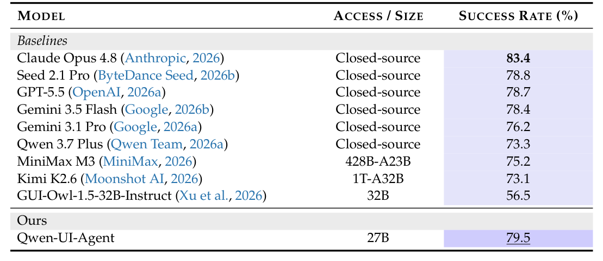
Table 4: Performance comparison on OSWorld-Verified (Xie et al., 2024).
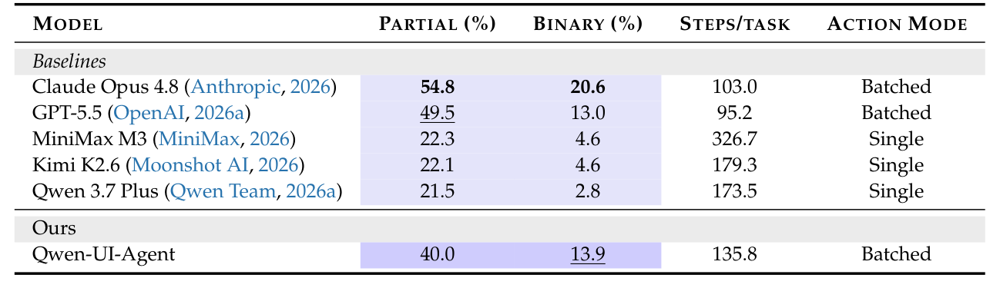
Table 5: Performance comparison on OSWorld-v2 (Yuan et al., 2026). Partial and Binary denote partial task progress and full task completion, respectively. Lower Steps/task is better.
3.3.2Computer-Use Evaluation3.3.2 计算机使用评测
We evaluate the computer-use capability of Qwen-UI-Agent on OSWorld-Verified (Xie et al., 2024) and OSWorld-v2 (Yuan et al., 2026). We report the two benchmarks separately. OSWorld-Verified measures partial progress for 361 computer-use tasks, whereas OSWorld-v2 focuses on longer-horizon workflows and reports both partial progress and binary completion.
我们在 OSWorld-Verified（Xie et al., 2024）与 OSWorld-v2（Yuan et al., 2026）上评估 Qwen-UI-Agent 的计算机使用能力，并分别报告两个基准：OSWorld-Verified 衡量 361 个计算机使用任务的部分进度；OSWorld-v2 聚焦更长程的工作流，同时报告部分进度与二值完成。
As shown in Table 4, Qwen-UI-Agent achieves a success rate of 79.5% on OSWorld-Verified, ranking second among all compared models and trailing only Claude Opus 4.8. It outperforms other leading closed-source foundation models, including Seed 2.1 Pro, GPT-5.5, Gemini 3.5 Flash, and Gemini 3.1 Pro, as well as all evaluated open-weight foundation models. These results demonstrate that Qwen-UI-Agent is competitive with the strongest closed-source models while establishing a substantial advantage over current open-weight models.
如表 4 所示，Qwen-UI-Agent 在 OSWorld-Verified 上取得 79.5% 的成功率，在所有对比模型中排名第二，仅次于 Claude Opus 4.8；同时超越其他领先的闭源基础模型——Seed 2.1 Pro、GPT-5.5、Gemini 3.5 Flash 与 Gemini 3.1 Pro——以及全部受评的开源权重基础模型。这表明 Qwen-UI-Agent 与最强闭源模型旗鼓相当，并对现有开源权重模型建立了显著优势。
As shown in Table 5, Qwen-UI-Agent achieves a partial score of 40.0% and a binary completion rate of 13.9% on OSWorld-v2, placing it competitively among frontier closed-source models. In particular, it exceeds GPT-5.5 by 0.9 percentage points in binary completion, while trailing it by 9.5 points in partial score. Qwen-UI-Agent also substantially outperforms all evaluated open-weight models. Compared with the strongest open-weight baseline, MiniMax M3, Qwen-UI-Agent improves partial progress by 17.7 percentage points and binary completion by 9.3 points. The margins increase to 17.9/9.3 points over Kimi K2.6 and 18.5/11.1 points over Qwen 3.7 Plus. Additionally, Qwen-UI-Agent requires an average of only 135.8 steps per task, substantially fewer than MiniMax M3 and Qwen 3.7 Plus. These results indicate that the hybrid GUI+CLI and batched-action design provides both strong task performance and execution efficiency on long-horizon computer-use workflows.
如表 5 所示，Qwen-UI-Agent 在 OSWorld-v2 上取得 40.0% 的部分分与 13.9% 的二值完成率，稳居前沿闭源模型之列：二值完成率超出 GPT-5.5 0.9 个百分点，部分分落后 9.5 分；同时也大幅领先所有受评开源权重模型——相对最强开源基线 MiniMax M3，部分进度提高 17.7 个百分点、二值完成提高 9.3 分；相对 Kimi K2.6 与 Qwen 3.7 Plus，差距分别达 17.9/9.3 分与 18.5/11.1 分。此外，Qwen-UI-Agent 平均每任务仅需 135.8 步，远少于 MiniMax M3 与 Qwen 3.7 Plus。这些结果表明，混合 GUI+CLI 与批量动作设计在长程计算机使用工作流上同时带来强劲的任务性能与执行效率。
A key feature of Qwen-UI-Agent is its unified GUI+CLI action space with batched execution. Rather
Qwen-UI-Agent 的一大关键特性是带批量执行的统一 GUI+CLI 动作空间。模型并非
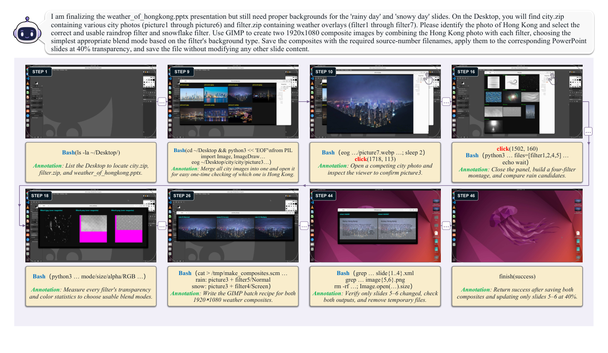
Figure 9: Demonstration of hybrid GUI+CLI execution in computer-use tasks. Key frames are shown with the emitted actions, where CLI commands are highlighted in blue, GUI actions in red, and each step carries a short annotation of its intent. In this example, the agent selects the target photo and filters by stitching all candidates into a single montage via CLI for one-shot visual inspection, rather than opening each image individually. It then leverages hybrid execution to combine CLI-based processing with GUI-based verification for the final output.
than treating CLI as an occasional fallback, the model learns to select and interleave GUI and CLI actions within the same trajectory. On OSWorld-Verified and OSWorld-v2, CLI actions constitute 40.7% and 55.1% of all actions, respectively, while the corresponding proportions of actions emitted in batched form are 39.6% and 41.6%. We provide a detailed analysis of how Qwen-UI-Agent combines GUI and CLI actions in Section 4.2.
把 CLI 当作偶发的后备手段，而是学会在同一轨迹内选择并交错使用 GUI 与 CLI 动作：在 OSWorld-Verified 与 OSWorld-v2 上，CLI 动作分别占全部动作的 40.7% 与 55.1%，以批量形式发出的动作比例则分别为 39.6% 与 41.6%。第 4.2 节将详细分析 Qwen-UI-Agent 如何组合 GUI 与 CLI 动作。
Qualitative Examples. Figure 9 and Figure 26 of Appendix A.3 further illustrate the hybrid execution behavior of Qwen-UI-Agent in two representative multi-application workflows, where CLI commands (blue) and GUI actions (red) are highlighted beneath each key frame together with a short annotation of the step intent. In Figure 9, the agent must identify the target city photo and usable weather filters among many candidate images; pure GUI execution would require opening and inspecting every image individually, whereas the agent stitches all candidates into a single montage with one CLI script and verifies them at a single glance, before returning to GUI actions for compositing and presentation editing. Such complementary use of the two interfaces makes hybrid execution substantially more efficient than either GUI or CLI alone, and the agent further batches compatible operations, such as multi-key hotkey sequences or a command followed by a wait, into a single model turn.
定性示例。图 9 与附录 A.3 的图 26 进一步展示了 Qwen-UI-Agent 在两个代表性多应用工作流中的混合执行行为：CLI 命令（蓝色）与 GUI 动作（红色）连同步骤意图的简短注释一并标注在每个关键帧下方。图 9 中，智能体须从众多候选图片中辨认目标城市照片与可用的天气滤镜——纯 GUI 执行需要逐一打开查看每张图，而智能体用一段 CLI 脚本把所有候选拼成一张合图、一眼核验，随后再回到 GUI 动作完成合成与演示编辑。两种接口如此互补，使混合执行的效率远高于单独使用 GUI 或 CLI；智能体还进一步把兼容操作——如多键热键序列、一条命令后跟等待——合并进单个模型轮次批量执行。
3.3.3Browser-Use and DeepSearch Evaluation3.3.3 浏览器使用与 DeepSearch 评测
Beyond mobile and computer-use, we evaluate Qwen-UI-Agent on browser-based web navigation and DeepSearch. These capabilities are closely related but assess different aspects of an GUI agent.
除移动与计算机使用外，我们还在基于浏览器的网页导航与 DeepSearch 上评估 Qwen-UI-Agent。二者密切相关，却考察 GUI 智能体的不同侧面。
Browser Use. We evaluate Qwen-UI-Agent on WebArena (Zhou et al., 2024), which consists of stateful, multi-step tasks over functional websites. During an initial evaluation, we identified multiple incorrect reference answers and errors in the official evaluation scripts. We therefore manually verified the reference
浏览器使用。我们在 WebArena（Zhou et al., 2024）上评估 Qwen-UI-Agent，该基准由功能完备网站上的有状态多步任务构成。初次评测时，我们发现了多处不正确的参考答案与官方评测脚本中的错误。为此，我们人工核验了参考
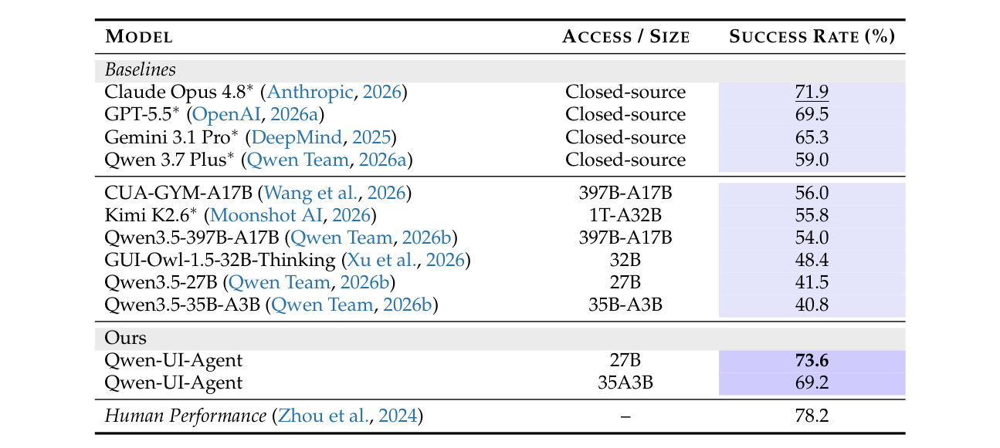
Table 6: Performance comparison on WebArena (Zhou et al., 2024). Baseline results marked with ∗are obtained from our own evaluation under the same experimental setup.
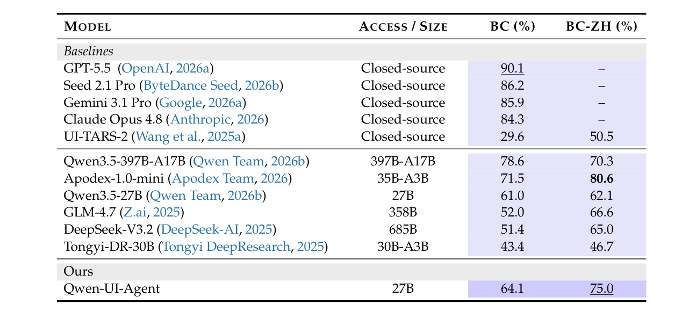
Table 7: Performance comparison on DeepSearch benchmarks: BrowseComp (BC) and BrowseComp-ZH (BC-ZH). “–” indicates the result is not reported.
answers and corrected the affected scripts before reporting the final results. Kimi K2.5 likewise reports its WebArena performance using a corrected evaluation setup (Kimi Team, 2026).
答案并修正受影响的脚本，之后才报告最终结果。Kimi K2.5 同样以修正后的评测设置报告其 WebArena 成绩（Kimi Team, 2026）。
As shown in Table 6, the 27B variant of Qwen-UI-Agent achieves a success rate of 73.6%, the highest among all compared models, while the 35A3B variant reaches 69.2%. The 27B variant surpasses the strongest baseline, Claude Opus 4.8 at 71.9%, by 1.7 percentage points, and exceeds GPT-5.5 at 69.5% by 4.1 percentage points. Qwen-UI-Agent also outperforms Gemini 3.1 Pro, Qwen 3.7 Plus, Kimi K2.6, CUA-GYM-A17B, and specialized browser agents such as Claude 3.7 Computer Use and GUI-Owl-1.5- 32B-Thinking. Although a 4.6-point gap remains to the reported human performance of 78.2%, the result demonstrates strong end-to-end browser control across heterogeneous web interfaces.
如表 6 所示，Qwen-UI-Agent 的 27B 变体取得 73.6% 的成功率，居所有对比模型之首；35A3B 变体达 69.2%。27B 变体领先最强基线 Claude Opus 4.8（71.9%）1.7 个百分点，领先 GPT-5.5（69.5%）4.1 个百分点，同时超越 Gemini 3.1 Pro、Qwen 3.7 Plus、Kimi K2.6、CUA-GYM-A17B，以及 Claude 3.7 Computer Use、GUI-Owl-1.5-32B-Thinking 等专用浏览器智能体。尽管与所报告的 78.2% 人类水平仍有 4.6 分之差，这一结果已充分展现其跨异构网页界面的端到端浏览器控制能力。
DeepSearch. Simple search is often part of web navigation itself: an agent enters a query into a browser, inspects the ranked results, and opens a potentially relevant page. DeepSearch simplifies this process by replacing many repetitive GUI actions with API-based retrieval and evidence synthesis, allowing the agent to obtain external context more efficiently before continuing the GUI workflow.
DeepSearch。简单搜索本就是网页导航的常见环节：智能体在浏览器输入查询、查看排序结果、打开可能相关的页面。DeepSearch 以基于 API 的检索与证据综合替代大量重复的 GUI 动作，从而简化这一过程，让智能体在继续 GUI 工作流之前更高效地获取外部上下文。
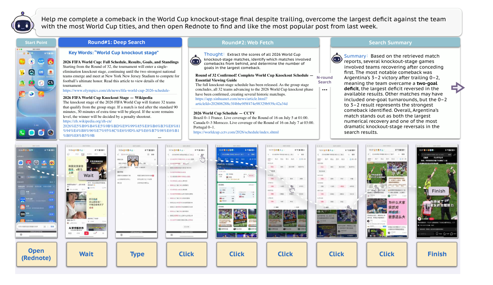
Figure 10: Demonstration of DeepSearch-assisted GUI execution. The upper panels show the multi- round search process, including keyword-based DeepSearch, targeted web fetches with intermediate thoughts, and the final search summary; the lower row shows the subsequent GUI trajectory. DeepSearch resolves the knowledge and reasoning problem before GUI execution, converting the vague cross-source request into an explicit target: Qwen-UI-Agent identifies the largest comeback in the World Cup knockout stage through DeepSearch, then opens RedNote and navigates directly to the highest-engagement related post from the past week without blind in-app searching.
We evaluate Qwen-UI-Agent on BrowseComp and BrowseComp-ZH, which assess persistent information seeking over the English and Chinese web, respectively. As shown in Table 7, Qwen-UI-Agent obtains 64.1% on BrowseComp and 75.0% on BrowseComp-ZH. On BrowseComp, Qwen-UI-Agent outperforms Qwen3.5-27B, Tongyi-DR-30B, and UI-TARS-2. While its performance remains behind frontier proprietary models and substantially larger systems, it demonstrates competitive English DeepSearch capability at the 27B scale. On BrowseComp-ZH, Qwen-UI-Agent achieves the second-best result among all compared systems, substantially outperforming Qwen3.5-27B, Tongyi-DR-30B, and UI-TARS-2. These results show that Qwen-UI-Agent is capable not only of locating candidate webpages, but also synthesizing evidence distributed across multiple sources into reliable, task-relevant information for subsequent reasoning and GUI execution.
我们在 BrowseComp 与 BrowseComp-ZH 上评估 Qwen-UI-Agent，二者分别考察英文与中文网络上持续的信息检索能力。如表 7 所示，Qwen-UI-Agent 在 BrowseComp 与 BrowseComp-ZH 上分别取得 64.1% 与 75.0%。BrowseComp 上，Qwen-UI-Agent 超越 Qwen3.5-27B、Tongyi-DR-30B 与 UI-TARS-2；虽仍落后于前沿专有模型与体量大得多的系统，但已展现 27B 规模下颇具竞争力的英文 DeepSearch 能力。BrowseComp-ZH 上，Qwen-UI-Agent 取得所有对比系统中的第二佳成绩，大幅领先 Qwen3.5-27B、Tongyi-DR-30B 与 UI-TARS-2。这些结果表明，Qwen-UI-Agent 不止会定位候选网页，更能把散布于多处的证据综合为可靠且切题的信息，供后续推理与 GUI 执行之用。
Qualitative Examples. We further present two GUI execution demos illustrating complementary ways in which DeepSearch integrates with GUI execution: GUI actions handle the interaction with applications, while DeepSearch handles external knowledge acquisition, comparison, and decision making. In the first demo (Figure 10), the task requires solving a knowledge and reasoning problem before any GUI operation: identifying the knockout-stage match with the largest comeback in the current World Cup. The upper panels trace the multi-round search process, from keyword-based DeepSearch over ranked sources, through targeted web fetches that extract and cross-check match scores, to a search summary that identifies Argentina’s 3–2 comeback after trailing 0–2. DeepSearch thereby converts a vague, cross-source user request into an explicit GUI target before execution begins, so that in the trajectory below the agent opens RedNote, searches for the identified match directly, filters posts from the previous seven days, and opens the most discussed post without blind in-app searching or trial and error. In the second demo (Figure 27 in Appendix A.3), DeepSearch is instead invoked on demand in the middle of GUI execution:
定性示例。我们进一步展示两个 GUI 执行演示，说明 DeepSearch 与 GUI 执行的互补整合：GUI 动作负责与应用交互，DeepSearch 负责外部知识的获取、比较与决策。第一个演示（图 10）中，任务要求在进行任何 GUI 操作之前先解答一个知识与推理问题——找出本届世界杯淘汰赛中逆转分差最大的一场比赛。上方面板完整追溯了多轮搜索过程：从对排序来源的关键词式 DeepSearch，到抓取并交叉核对比赛比分的定向网页抓取，再到锁定阿根廷在 0–2 落后下 3–2 逆转的搜索总结。DeepSearch 由此在执行开始前就把一个模糊的跨来源用户请求转化为明确的 GUI 目标：下方轨迹中，智能体打开小红书、直接搜索已确认的比赛、筛选近七天的帖子并打开讨论最热的一帖，全程无需盲目的应用内搜索或反复试错。第二个演示（附录 A.3 图 27）中，DeepSearch 则是在 GUI 执行中途按需调用：
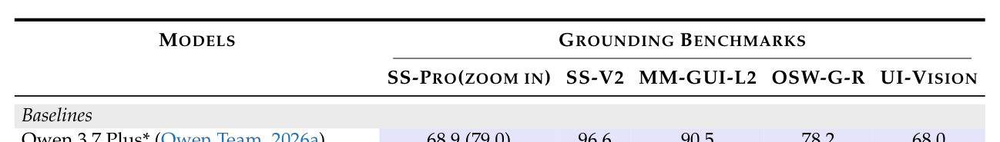
Table 8: Performance comparison on GUI grounding benchmarks. ScreenSpot-Pro reports no-zoom results, with zoom-in results shown in parentheses when available. Baseline results marked with ∗are obtained from our own evaluation.
the agent first locates a Douyin video on evidence-based weight loss and extracts its main claims through GUI actions, then calls DeepSearch to verify these claims against research papers, official guidelines, and authoritative sources, since whether and what to comment cannot be decided from the interface alone. The verification conclusions directly determine the subsequent GUI actions, namely posting a comment that corrects the misleading claims and supplements the necessary caveats, forming a closed observe–research–decide–act loop.
智能体先以 GUI 动作定位一条关于科学减重的抖音视频并提取其主要论点，随后调用 DeepSearch，将这些论点与研究论文、官方指南及权威来源逐一核对——能否评论、评论什么，无法仅凭界面判断。核验结论直接决定后续 GUI 动作：发布一条纠正误导性论点、补充必要提醒的评论，构成闭环的观察–调研–决策–行动回路。
3.3.4GUI Grounding3.3.4 GUI Grounding
We evaluate the GUI grounding capabilities of Qwen-UI-Agent across five comprehensive benchmarks: ScreenSpot-Pro, ScreenSpot-V2, MMBench-GUI L2, OSWorld-G-Refined, and UI-Vision. These bench- marks cover high-resolution professional software, general cross-platform interfaces, desktop software environments, and instruction-driven grounding.
我们在五个综合基准上评估 Qwen-UI-Agent 的 GUI grounding 能力：ScreenSpot-Pro、ScreenSpot-V2、MMBench-GUI L2、OSWorld-G-Refined 与 UI-Vision。这些基准覆盖高分辨率专业软件、通用跨平台界面、桌面软件环境，以及指令驱动的定位任务。
As shown in Table 8, the 27B variant achieves strong grounding performance across all five benchmarks, reaching 76.6% on ScreenSpot-Pro without zoom-in, 97.5% on ScreenSpot-V2, 92.6% on MMBench-GUI L2, 78.5% on OSWorld-G-Refined, and 70.0% on UI-Vision. On ScreenSpot-Pro, it ranks first among all compared models both without and with zoom-in, and its score further increases to 81.5% with zoom-in. These results demonstrate accurate element localization across both common interfaces and complex
如表 8 所示，27B 变体在全部五个基准上均有强劲的 grounding 表现：无 zoom-in 时在 ScreenSpot-Pro 达 76.6%，ScreenSpot-V2 达 97.5%、MMBench-GUI L2 达 92.6%、OSWorld-G-Refined 达 78.5%、UI-Vision 达 70.0%。在 ScreenSpot-Pro 上，无论是否启用 zoom-in，它都在所有对比模型中位居第一，启用 zoom-in 后得分进一步提高至 81.5%。这些结果证明了其在常见界面与复杂
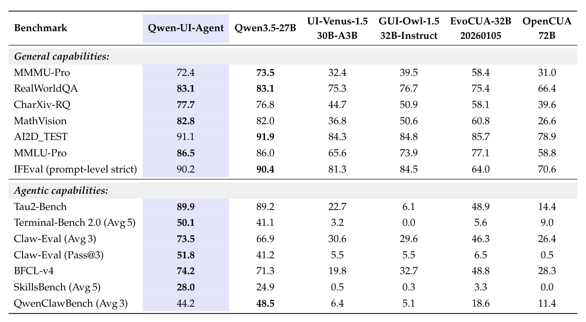
Table 9: General and agentic performance comparison. Qwen-UI-Agent acquires strong GUI capabilities while preserving the general reasoning and agentic capabilities of its base model. It also substantially outperforms other GUI-specialized models across these benchmarks.
• Tau2-Bench. We follow the official leaderboard task set, harness, and scoring protocol, but use GPT-5.5 as the user simulator and judge. • Terminal-Bench 2.0. Following the Qwen3.6 evaluation setup, we use the Harbor/Terminus-2 harness with a three-hour timeout and up to 32 CPUs and 48 GB of memory per task. We use temperature 1.0, top-p 0.95, top-k 20, an 80K-token output limit, and a 256K context window, and report the average over five runs. • Claw-Eval. We follow the official 199-task, three-trial protocol and scoring rule, but use GPT-5.5 for both general and multi-turn judging and Qwen3.6-Plus for multi-turn user simulation, replacing the official Gemini 3 Flash/Claude Opus 4.6 setup. We use a sampling temperature of 0.6. • SkillsBench. We follow the Qwen3.6 evaluation setup. We use OpenCode to evaluate 78 self-contained tasks, excluding tasks that depend on external APIs, and report the average over five runs. • QwenClawBench. We follow the official v1.1 task set, three-run protocol, and penalized-hybrid scoring, but replace the default Claude Opus 4.5 judge with GPT-5.2. We also pin the OpenClaw runtime to version 2026.6.1 rather than the moving main image.
• Tau2-Bench。遵循官方排行榜的任务集、harness 与评分协议，但以 GPT-5.5 充当用户模拟器与裁判。• Terminal-Bench 2.0。遵循 Qwen3.6 评测设置，使用 Harbor/Terminus-2 harness，超时三小时，每任务至多 32 个 CPU 与 48 GB 内存；采样参数为 temperature 1.0、top-p 0.95、top-k 20，输出上限 80K token，上下文窗口 256K，报告五次运行的平均值。• Claw-Eval。遵循官方 199 任务、三次尝试协议与评分规则，但以 GPT-5.5 承担通用与多轮裁判、以 Qwen3.6-Plus 进行多轮用户模拟，替换官方的 Gemini 3 Flash/Claude Opus 4.6 配置；采样温度为 0.6。• SkillsBench。遵循 Qwen3.6 评测设置，以 OpenCode 评测 78 个自包含任务（排除依赖外部 API 者），报告五次运行的平均值。• QwenClawBench。遵循官方 v1.1 任务集、三次运行协议与惩罚混合评分，但将默认裁判 Claude Opus 4.5 替换为 GPT-5.2，并把 OpenClaw 运行时固定在 2026.6.1 版本而非滚动更新的主镜像。
professional software, including settings where the target must be inferred from functional or spatial context rather than explicit text.
专业软件之中，包括那些必须依据功能或空间上下文、而非显式文本来推断目标的设定。
The grounding capability also remains strong across model scales. On ScreenSpot-Pro, the 35B-A3B and 4B variants achieve 76.1% and 67.8% without zoom-in, with their scores increasing to 80.2% and 74.0% with zoom-in. The 35B-A3B variant further reaches 96.7% on ScreenSpot-V2, 92.0% on MMBench-GUI L2, 74.6% on OSWorld-G-Refined, and 65.9% on UI-Vision, while activating only 3B parameters per token. The corresponding scores of the 4B variant are 94.9%, 87.9%, 70.5%, and 51.6%. Together, these results show that Qwen-UI-Agent provides reliable GUI grounding across common interfaces, professional software, and instruction types, from compact to moderate model scales.
grounding 能力同样在不同模型规模上保持强劲。ScreenSpot-Pro 上，35B-A3B 与 4B 变体无 zoom-in 时分别取得 76.1% 与 67.8%，启用 zoom-in 后升至 80.2% 与 74.0%。35B-A3B 变体在 ScreenSpot-V2、MMBench-GUI L2、OSWorld-G-Refined 与 UI-Vision 上分别达 96.7%、92.0%、74.6% 与 65.9%，而每 token 仅激活 3B 参数；4B 变体的对应成绩为 94.9%、87.9%、70.5% 与 51.6%。这些结果共同表明：从紧凑到中等规模，Qwen-UI-Agent 都能在常见界面、专业软件与各类指令类型上提供可靠的 GUI grounding。
3.3.5General and Agentic Capabilities3.3.5 通用与智能体能力
Qwen-UI-Agent develops strong GUI domain knowledge while retaining the general reasoning and agentic capabilities inherited from its base model. As shown in Table 9, it also substantially outperforms specialized GUI models on general and agentic benchmarks. Together, these results indicate that Qwen- UI-Agent remains a broadly capable model rather than becoming a narrow GUI-only model. This broader capability profile may also help it handle out-of-distribution or unusual tasks that require knowledge, reasoning, and tool use beyond routine GUI interaction.
Qwen-UI-Agent 在积累深厚 GUI 领域知识的同时，保留了继承自基础模型的通用推理与智能体能力。如表 9 所示，它在通用与智能体基准上同样大幅领先专用 GUI 模型。这些结果共同表明：Qwen-UI-Agent 仍是一个能力广泛的模型，并未收窄成只面向 GUI 的专用模型。这种更宽的能力面，也有助于它应对分布外或非常规任务——那些需要超越常规 GUI 交互的知识、推理与工具使用的任务。
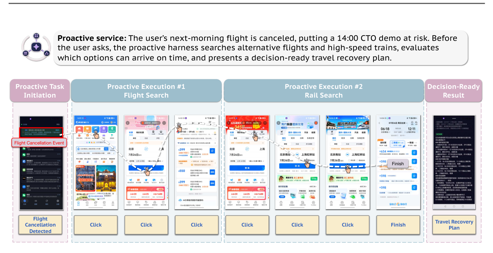
Figure 11: Demonstration of proactive service based on mobile notifications. The trajectory is orga- nized into highlighted stages: proactive task initiation from a detected notification, proactive execution phases, and a decision-ready result, with the executed action annotated beneath each key frame. Flight- cancellation recovery: when the user’s next-morning flight is canceled and a 14:00 demo is at risk, the harness proactively searches alternative flights and high-speed trains, evaluates which options arrive on time, and presents a decision-ready travel recovery plan.
3.4Harness-Enabled Workflows3.4 Harness 赋能的工作流
Beyond benchmark evaluations, we qualitatively examine the workflows enabled by the harness layer introduced in Section 2.5, covering proactive service initiation and cross-platform task execution.
除基准评测外，我们定性考察第 2.5 节所引入 harness 层赋能的工作流，涵盖主动服务发起与跨平台任务执行。
Proactive Service. We present two representative proactive-service trajectories in Figure 11 and Fig- ure 28 of Appendix A.3. Each trajectory is organized into four highlighted stages: proactive task initiation, one or more proactive execution phases, and a decision-ready result. In Figure 11, a scheduled 08:00 trigger combines the user’s morning commitments, extracted from the highlighted notification, with live weather and commute conditions. The harness first retrieves the weather, then reasons over public- transit and taxi options through map navigation, and delivers an actionable morning brief with umbrella advice, departure timing, and key reminders before the user asks. In Figure 28, the harness detects a flight-cancellation notification (highlighted in the first stage) that puts a next-day 14:00 demo at risk. It proactively searches alternative flights and high-speed trains in two execution phases, evaluates which options arrive on time, and presents a decision-ready travel recovery plan, leaving the final booking decision to the user. Both examples show the harness converting passive notifications into contextualized, executable assistance while keeping consequential actions under user control.
主动服务。图 11 与附录 A.3 的图 28 展示了两条代表性的主动服务轨迹，均组织为四个高亮阶段：主动任务发起、一至多个主动执行阶段，以及决策就绪的结果。图 11 中，一个定时 08:00 的触发器把用户晨间事务（从高亮通知中提取）与实时天气、通勤状况相结合：harness 先检索天气，再经地图导航权衡公交与出租车方案，赶在用户开口之前送上一份可执行的晨报——附带带伞建议、出发时间与关键提醒。图 28 中，harness 捕捉到一条航班取消通知（第一阶段高亮），次日 14:00 的演示因此面临风险；它在两个执行阶段中主动搜索替代航班与高铁，评估各方案能否准点抵达，最终给出决策就绪的出行恢复计划，而把最终预订决定留给用户。两个示例共同表明：harness 能把被动通知转化为情境化、可执行的协助，同时让重大动作始终处于用户控制之下。
Cross-platform Task Execution. Figure 6(II) illustrates a cross-platform workflow for team-building restaurant selection. The harness decomposes the task into four device-addressed stages: Qwen-UI-Agent discovers candidate restaurants on mobile, organizes their ratings, cuisines, and reservation phones into a spreadsheet on the desktop, sends the resulting artifact to the team leader for approval, and finally saves the approved restaurants back to the mobile map application. Throughout the workflow, the shared task state carries the candidate list, the generated spreadsheet, and the approval outcome across devices, so each stage resumes from the latest context rather than restarting from scratch. We present two executed trajectories of this capability in Figure 12 and Figure 29 of Appendix A.3: a receipt-organization workflow that hands mobile gallery selections to GUI+CLI computer use for expense-report generation, and a parallel restaurant search that operates Dianping, Meituan, and Amap concurrently on multiple virtual
跨平台任务执行。图 6(II) 展示了一个团建餐厅挑选的跨平台工作流。harness 将任务分解为四个设备寻址阶段：Qwen-UI-Agent 先在移动端发现候选餐厅，再在桌面端把它们的评分、菜系与预订电话整理进电子表格，随后把生成的文件发给团队负责人审批，最后把获批餐厅回存到移动端地图应用。整个工作流中，共享任务状态让候选列表、电子表格与审批结果跨设备延续，每个阶段都从最新上下文接续，而非从零重启。图 12 与附录 A.3 的图 29 给出该能力的两条已执行轨迹：其一是票据整理工作流，把移动相册的选中内容交给 GUI+CLI 计算机使用以生成开支报表；其二是并行餐厅搜索，在多个虚拟
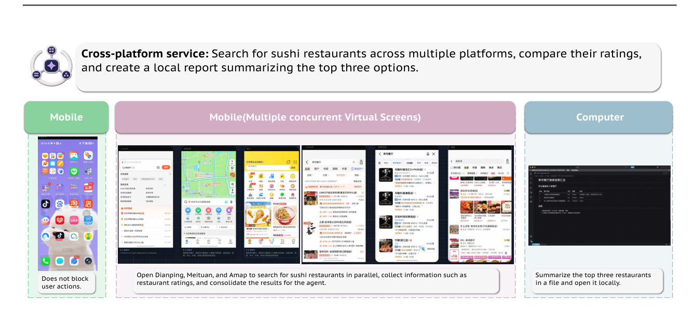
Figure 12: Demonstration of cross-platform task execution. In this workflow, mobile subtasks run on virtual screens of the physical device, so execution does not block the user’s own actions. Parallel multi-app search: the agent searches sushi restaurants on Dianping, Meituan, and Amap concurrently through multiple virtual screens, consolidates their ratings, and summarizes the top three options in a local report opened on the computer.
screens; in both cases, mobile subtasks run on virtual screens without blocking the user’s own use of the device. Together, these examples demonstrate that the harness can preserve task state, artifacts, and dependencies as execution moves between mobile and computer environments.
屏幕上并发操作大众点评、美团与高德地图。两例中，移动子任务都运行在虚拟屏幕上，不影响用户对设备的正常使用。这些示例共同证明：当执行在移动与计算机环境之间迁移时，harness 能够完整保留任务状态、产物与依赖关系。
4Behavioral Analysis of GUI Agent Execution4 GUI 智能体执行行为分析
Aggregate benchmark scores show whether an agent completes a task, but reveal less about how it executes the task, why it fails, and how its behavior changes after RL training. We therefore examine four questions mainly on the execution behavior of Qwen-UI-Agent. (1) Why do models optimized for simulated benchmarks struggle on physical devices? (2) How does Qwen-UI-Agent combine GUI, CLI, and batched actions during task execution, and what distinctive execution patterns emerge from these choices? (3) How does action RL change step-level execution behavior? (4) How does online RL reshape trajectory-level behavior in long-horizon tasks? Together, these analyses complement aggregate metrics by revealing how the agent responds to challenging environments, uses its action space, and changes after RL training.
聚合的基准分数只说明智能体是否完成了任务，却较少揭示它如何执行、为何失败，以及 RL 训练后行为如何变化。为此，我们围绕 Qwen-UI-Agent 的执行行为考察四个问题：(1) 为何面向模拟基准优化的模型在物理设备上举步维艰？(2) Qwen-UI-Agent 在任务执行中如何组合 GUI、CLI 与批量动作？这些选择催生了哪些独特的执行模式？(3) 动作 RL 如何改变步级执行行为？(4) 在线 RL 如何重塑长程任务的轨迹级行为？这些分析揭示了智能体如何应对严苛环境、如何调用其动作空间、RL 训练后又如何改变，从而补充聚合指标之所不及。
4.1How Does a Model’s Limited Real-Device Experience Affect Its Execution Behavior?4.1 模型有限的真机经验如何影响其执行行为？
Behavioral Analysis of Real-device Failures. Most models have limited direct exposure to physical- device interaction during training. Frontier models such as Qwen 3.7 Plus perform strongly across a broad range of benchmarks, yet their results on MobileWorld-Real suggest that reliable execution on physical devices remains challenging. This raises a more specific behavioral question: when models have limited real-device interaction during training, which execution patterns emerge, and how do these patterns contribute to task failure? To investigate this question, we review every failed Qwen 3.7 Plus trajectory on MobileWorld-Real and AndroidDaily to identify the primary failure modes.
真机失败的行为分析。多数模型在训练中直接接触物理设备交互的机会有限。Qwen 3.7 Plus 等前沿模型在众多基准上表现出色，但在 MobileWorld-Real 上的结果却表明：物理设备上的可靠执行依然困难。由此引出一个更具体的行为问题——当模型在训练中缺乏真机交互时，会浮现哪些执行模式？这些模式又如何导致任务失败？为回答这一问题，我们逐条复查 Qwen 3.7 Plus 在 MobileWorld-Real 与 AndroidDaily 上的全部失败轨迹，归纳主要失败模式。
As shown in Table 10, we organize the failures along two dimensions, both rooted in the scarcity of real interaction experience during training: execution capability limitations (40.3%), where simulated environments provide little incentive to learn exploration, error recovery, and state tracking, and real-world scenario challenges (52.0%), triggered by interface phenomena that sanitized simulators rarely contain. As illustrated in Figure 13, we pair two key frames with the model’s abridged thinking for one representative
如表 10 所示，我们沿两个维度归纳这些失败，二者皆根源于训练期间真实交互经验的匮乏：执行能力局限（40.3%）——模拟环境几乎不提供学习探索、错误恢复与状态跟踪的激励；真实世界场景挑战（52.0%）——由净化模拟器中罕见的界面现象所触发。如图 13 所示，我们为每种模式选取一个代表性
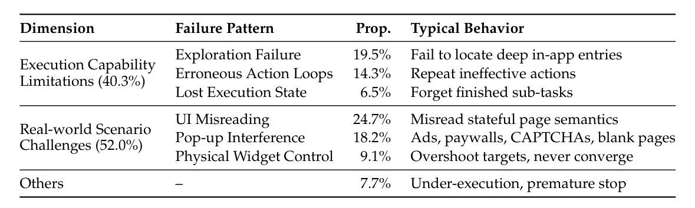
Table 10: Failure-pattern distribution over all failed Qwen 3.7 Plus trajectories on real devices.
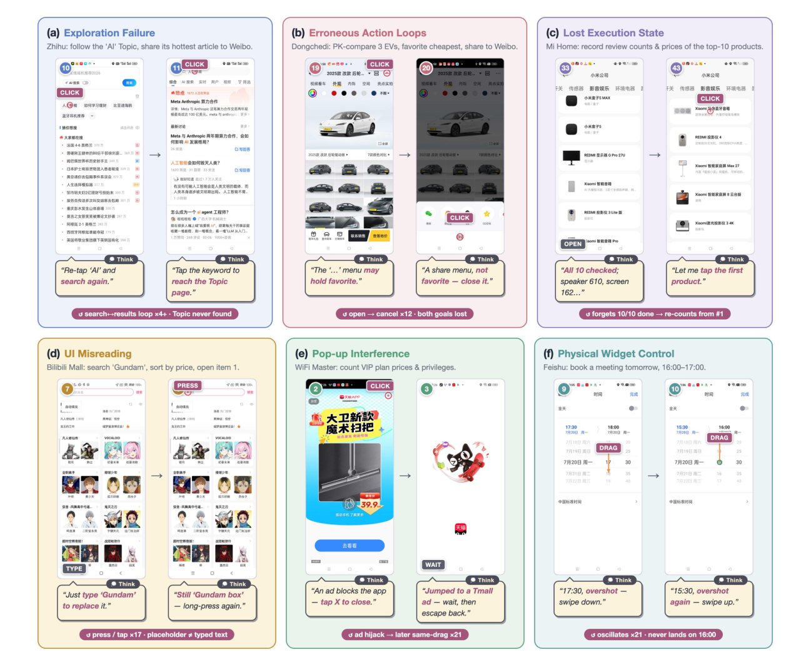
Figure 13: Representative real-device failure patterns of Qwen 3.7 Plus. Execution capability limitations: (a) exploration failure, (b) erroneous action loops, (c) lost execution state. Real-world scenario challenges: (d) UI misreading, (e) pop-up interference, (f) physical widget control. Speech bubbles quote the model’s abridged thinking, with the critical fallacy in purple.
case of each pattern, and analyze each pattern in detail below.
案例配上两张关键帧与模型的节选思考过程，并在下文逐一深入剖析。
Execution Capability Limitations. Qwen 3.7 Plus’ failures in this dimension (40.3%) reflect limitations in three execution capabilities: locating less commonly used or deeply nested app functions, recovering from unexpected feedback or interface states, and maintaining task state over long trajectories.
执行能力局限。Qwen 3.7 Plus 在该维度的失败（40.3%）折射出三项执行能力的不足：定位低频或深层嵌套的应用功能、从意外反馈或界面状态中恢复、在长轨迹中维持任务状态。
• Exploration failure (19.5%) occurs when the target is a less commonly used function hidden behind multiple entry points or deep page hierarchies. In these cases, Qwen 3.7 Plus often revisits a small set
• 探索失败（19.5%）出现在目标是被多重入口或深层页面层级遮蔽的低频功能时。此时 Qwen 3.7 Plus 往往只反复浏览少数
of shallow pages instead of exploring alternative routes (Figure 13(a)). By contrast, Qwen-UI-Agent examines multiple plausible entries before committing to a path.
浅层页面之间打转，而不探索替代路径（图 13(a)）。相比之下，Qwen-UI-Agent 在确定路径前会核查多个可能的入口。
• Erroneous action loops (14.3%) stem from the long tail of real third-party applications, where an action frequently fails to produce the expected transition. Handling such expectation violations is itself a learned skill that simulators, with their highly predictable interaction outcomes, offer few opportunities to acquire. When an action fails to produce the intended result, we find that models with limited exposure to physical-device interaction during training tend to repeat the same action or alternate between two interface states rather than diagnose the failure and revise their plan (Figure 13(b)).
• 错误动作循环（14.3%）源于真实第三方应用的长尾特性：动作常常无法产生预期的状态转移。应对这类预期落空本身是一种需要习得的技能，而交互结果高度可预测的模拟器几乎不给习得机会。我们发现，当动作未达预期时，训练中缺乏物理设备交互经验的模型倾向于重复同一动作，或在两个界面状态间来回切换，而非诊断失败、修订计划（图 13(b)）。
• Lost execution state (6.5%) appears in long-horizon tasks that require intermediate information and completed progress to be retained across app switching, interruptions, and multiple subtasks. In these trajectories, Qwen 3.7 Plus may lose track of prior progress and repeat completed subtasks or restart part of the workflow from scratch (Figure 13(c)).
• 执行状态丢失（6.5%）出现在需要跨应用切换、跨中断、跨子任务保留中间信息与已完成进度的长程任务中：Qwen 3.7 Plus 可能遗失先前进度，重复已完成的子任务，或从零重启部分工作流（图 13(c)）。
Real-world Scenario Challenges. Failures in this dimension (52.0%) involve interface conditions that are common on physical devices but may be less frequently represented during training: ambiguous page semantics, unexpected interface disruptions, and interactive widgets requiring fine-grained manipulation.
真实世界场景挑战。该维度的失败（52.0%）涉及在物理设备上常见、训练中却较少出现的界面状况：模糊的页面语义、意外的界面干扰，以及需要精细操作的交互式控件。
• UI misreading (24.7%) arises because real pages carry stateful semantics that pure visual appearance does not disambiguate, such as pre-filled search terms, placeholder hints, and dynamically refreshed lists, whereas simulator interfaces stay clean and static. Models trained in simulated environments consequently misjudge the interface state, most typically mistaking a grey placeholder for user-entered text and repeatedly attempting to clear it instead of typing over it (Figure 13(d)).
• UI 误读（24.7%）源于真实页面带有纯视觉外观无法消歧的状态语义——预填的搜索词、占位提示、动态刷新的列表——而模拟器界面始终干净而静态。在模拟环境中训练的模型因而误判界面状态，最典型的表现是把灰色占位符误当成用户输入的文本，反复尝试清空它而非直接在其上输入（图 13(d)）。
• Pop-up interference (18.2%) covers advertisements, paywalls, CAPTCHAs, and unresponsive or blank pages, non-deterministic disruptions that simulators exclude by design to keep evaluation reproducible. Lacking any recovery prior, these models either follow the disruption away from the original task or keep retrying the blocked path (Figure 13(e)).
• 弹窗干扰（18.2%）涵盖广告、付费墙、验证码以及无响应或空白页面——这类非确定性干扰被模拟器为保持评测可复现而有意排除。由于缺乏恢复先验，这些模型要么顺着干扰偏离原任务，要么反复重试被阻断的路径（图 13(e)）。
• Physical widget control (9.1%) concerns scroll wheels, sliders, and date pickers that demand incremental closed-loop manipulation, where the agent must observe the current value and adjust the swipe magnitude accordingly. In simulated environments such values are typically set by direct text injection or single taps, so the agent applies fixed-magnitude swipes that overshoot the target in both directions and never converge (Figure 13(f)).
• 物理控件操控（9.1%）涉及滚轮、滑块与日期选择器等需要增量闭环操控的控件：智能体必须观察当前值并相应调整滑动幅度。模拟环境中，这类数值通常由直接文本注入或单击设定，智能体于是采用固定幅度的滑动，两个方向都越过目标且永不收敛（图 13(f)）。
The findings above motivate the real-device training and evaluation infrastructure described in Sec- tion 2.2.2 and help explain Qwen-UI-Agent’s strong performance on real-world mobile devices.
上述发现正是第 2.2.2 节真机训练与评测基础设施的动因，也有助于解释 Qwen-UI-Agent 在真实移动设备上的强劲表现。
4.2A Closer Look at GUI–CLI Coordination and Batched Execution in Qwen-UI-Agent4.2 深入剖析 Qwen-UI-Agent 中的 GUI–CLI 协同与批量执行
Qwen-UI-Agent executes computer-use tasks through trajectories that interleave GUI and CLI actions, while selectively emitting multiple actions together in batched form. This hybrid execution process raises two questions: how does the model divide operations between GUI and CLI, and when does it choose to batch multiple actions? We analyze trajectories generated by Qwen-UI-Agent on OSWorld-Verified and OSWorld-v2 and present the resulting behavioral patterns below.
Qwen-UI-Agent 以交错使用 GUI 与 CLI 动作的轨迹执行计算机使用任务，并有选择地把多个动作合并为批量形式同时发出。这一混合执行过程引出两个问题：模型如何在 GUI 与 CLI 之间划分操作？又何时选择批量发出多个动作？我们分析了 Qwen-UI-Agent 在 OSWorld-Verified 与 OSWorld-v2 上生成的轨迹，下文呈现由此归纳的行为模式。
Usage Statistics Across Actions and Tasks. Table 11 quantifies CLI and batched execution at the action and task levels. GUI interaction and CLI operations both serve as primary execution channels in the computer-use trajectories produced by Qwen-UI-Agent. On OSWorld-Verified, CLI operations constitute 40.7% of all actions and appear in 92.0% of tasks. These proportions increase to 55.1% and 98.2% on OSWorld-v2, respectively. The near-balanced distribution of GUI and CLI actions suggests that Qwen-UI- Agent makes flexible and complementary use of both executions. The higher CLI share on OSWorld-v2 partly reflects its task distribution, which contains more workflows that naturally favor programmatic execution, such as merging files, processing structured data, and performing batch file operations. Batched actions account for 39.6% and 41.6% of all actions on OSWorld-Verified and OSWorld-v2, and
动作与任务层面的使用统计。表 11 从动作与任务两个层面量化 CLI 与批量执行。在 Qwen-UI-Agent 产生的计算机使用轨迹中，GUI 交互与 CLI 操作同为主要的执行通道：OSWorld-Verified 上，CLI 操作占全部动作的 40.7%、出现在 92.0% 的任务中；OSWorld-v2 上，两个比例分别升至 55.1% 与 98.2%。GUI 与 CLI 动作近乎均衡的分布，表明 Qwen-UI-Agent 对两种执行方式的运用灵活而互补。OSWorld-v2 上 CLI 占比更高，部分缘于其任务分布——其中更多天然偏向程序化执行的工作流，如合并文件、处理结构化数据、批量文件操作等。批量动作在 OSWorld-Verified 与 OSWorld-v2 上分别占全部动作的 39.6% 与 41.6%，且
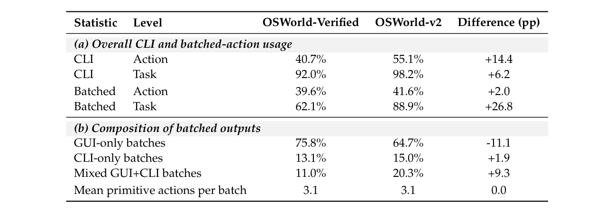
Table 11: GUI+CLI usage and batched-execution statistics on OSWorld-Verified and OSWorld-v2. Panel (a) reports CLI and batched-action usage at the action and task levels. Panel (b) reports the composition of batched outputs. Mean batch size counts the number of primitive actions in a batch. Differences are computed as OSWorld-v2 minus OSWorld-Verified. Differences are reported in percentage points (pp).
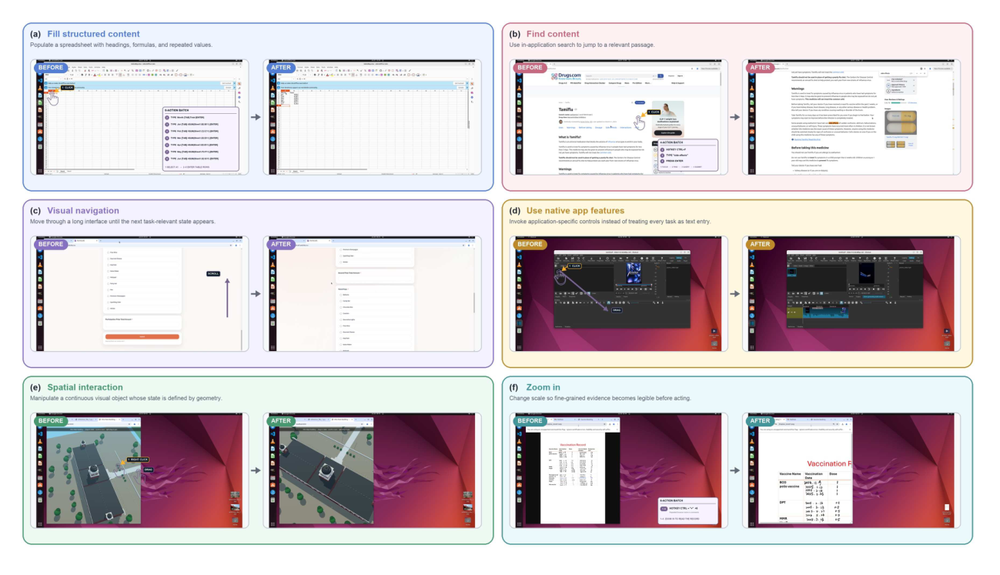
Figure 14: Representative GUI interaction patterns. The panels show (a) filling structured spreadsheet content, (b) finding content with in-page search, (c) visual navigation through scrolling, (d) use of a native media-timeline feature, (e) continuous spatial interaction, and (f) zooming in for fine-grained inspection. Each panel pairs the rendered action with its resulting application state.
appear in 62.1% and 88.9% of tasks, respectively, indicating that batched execution is used extensively across both benchmarks. With an average of 3.1 primitive actions per batch, this corresponds to signifi- cantly fewer observation–reasoning–execution cycles than issuing each primitive action in a separate model turn, substantially improving execution efficiency. GUI-only batches remain the dominant form, while CLI-only and mixed GUI+CLI batches show that batched execution also supports programmatic operations and coordination between the two execution channels.
分别出现在 62.1% 与 88.9% 的任务中——批量执行在两个基准上都被广泛使用。平均每批含 3.1 个原子动作，与在独立模型轮次中逐个发出原子动作相比，观测–推理–执行循环显著减少，执行效率大幅提升。仅 GUI 批次仍居主导，而仅 CLI 与混合 GUI+CLI 批次则表明，批量执行同样支撑程序化操作以及两种执行通道之间的协调。
When Does Qwen-UI-Agent Use GUI, CLI, and Batched Actions? Beyond aggregate usage statistics, we examine recurring patterns in the trajectories to understand how Qwen-UI-Agent uses GUI interaction, CLI execution, and batched actions in practice. The examples below identify typical scenarios for each
Qwen-UI-Agent 何时使用 GUI、CLI 与批量动作？除聚合使用统计外，我们还检视轨迹中反复出现的模式，以理解 Qwen-UI-Agent 在实践中如何运用 GUI 交互、CLI 执行与批量动作。下述示例归纳了每一种
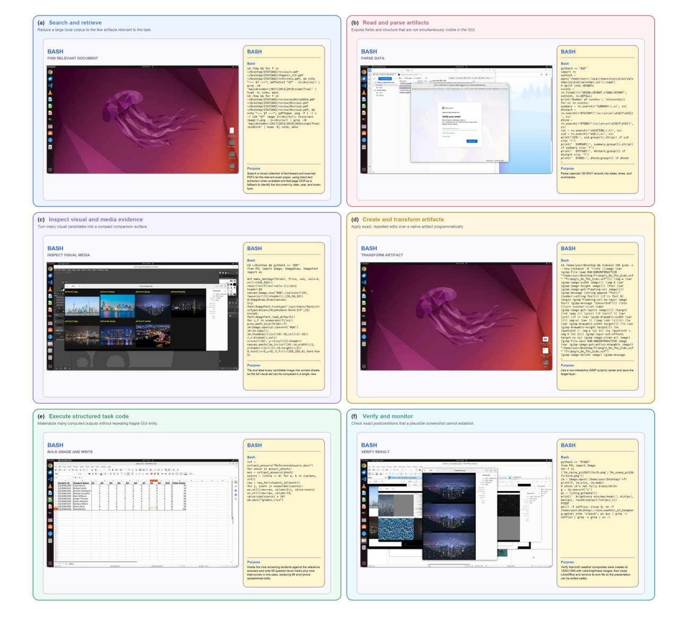
Figure 15: Representative CLI interaction patterns. The model uses CLI tools to (a) retrieve relevant documents from a mixed corpus, (b) parse machine-readable artifact structure, (c) compress many visual candidates into one labeled comparison, (d) transform an artifact programmatically, (e) execute a repeated computation and materialize its outputs, and (f) verify exact output and process postconditions. Each panel juxtaposes the application context with a command excerpt and its task-specific purpose.
capability and illustrate how they complement one another during task execution, although they represent empirical tendencies rather than fixed capability boundaries.
能力的典型场景，并说明它们在任务执行中如何互补——尽管这些只是经验性倾向，而非固定的能力边界。
• GUI Interaction. Qwen-UI-Agent tends to rely on GUI interaction when the interface serves as both the control surface and the source of execution feedback, particularly for operations involving native application controls, visual navigation, or spatial manipulation. Figure 14 shows six recurring cases: filling spreadsheet cells with structured headings, formulas, and repeated values, using in-page search to locate a relevant passage, scrolling through a long interface until the required content becomes visible, manipulating media through native timeline controls, interacting with a spatial object whose state is defined by geometry, and zooming in to make fine-grained visual evidence legible before acting. These examples show that GUI interaction supports not only interface navigation but also operations whose execution and subsequent decisions depend on visible state transitions, native application controls, or continuous spatial feedback.
• GUI 交互。当界面既是控制面又是执行反馈的来源时，Qwen-UI-Agent 倾向于依赖 GUI 交互，尤其是涉及原生应用控件、视觉导航或空间操作的情形。图 14 展示六种反复出现的情形：向电子表格单元格填充结构化标题、公式与重复值；用页内搜索定位相关段落；滚动长界面直至所需内容进入视野；经原生时间轴控件操纵媒体；与状态由几何定义的空间对象交互；行动前放大画面使细粒度视觉证据清晰可辨。这些示例表明，GUI 交互不只支撑界面导航，也支撑那些执行与后续决策依赖可见状态转移、原生应用控件或连续空间反馈的操作。
• CLI Execution. Qwen-UI-Agent tends to use CLI when information or operations can be represented
• CLI 执行。当信息或操作能以数据或代码的形式
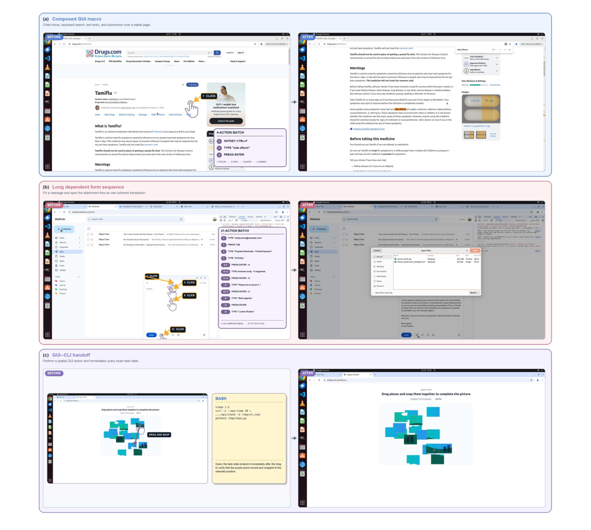
Figure 16: Representative batched-action patterns. (a) a compact GUI macro for in-page search, (b) a 21-action dependent form sequence that stops at the next uncertain dialog, and (c) a GUI–CLI handoff that verifies a spatial manipulation through structured task state. Each row pairs the rendered batch with the first post-batch observation.
more compactly and precisely as data or code than as a sequence of GUI interactions. Figure 15 shows six recurring uses: retrieving relevant documents from a mixed corpus, parsing machine- readable records, organizing multiple images into a labeled contact sheet, transforming artifacts programmatically, executing repeated grading computations, and verifying output properties such as dimensions, brightness, and process state. Together, these patterns show CLI functioning as a search-space reducer before reasoning, an efficient execution channel for structured operations, and a precise postcondition verifier after editing. The contact-sheet example further illustrates that CLI can complement visual reasoning by reorganizing dispersed visual evidence into a single comparison surface rather than replacing the visual judgment itself.
比一串 GUI 交互更紧凑、更精确地表达时，Qwen-UI-Agent 倾向于使用 CLI。图 15 展示六种反复出现的用法：从混合语料中检索相关文档；解析机器可读记录；把多张图片整理成带标签的联系表；以程序化方式转换产物；执行重复的评分计算；核验输出的尺寸、亮度与进程状态等属性。这些模式共同勾勒出 CLI 的三重角色：推理前缩小搜索空间、充当结构化操作的高效执行通道、编辑后作精确的后置条件验证器。联系表的例子还进一步说明：CLI 能把分散的视觉证据重组为单一的比较界面，从而补充视觉推理，而非取代视觉判断本身。
• Batched Execution. Qwen-UI-Agent uses batched execution when multiple operations form a coherent local sequence and their intermediate states are sufficiently predictable to proceed without another observation. As illustrated in Figure 16, representative cases include a short GUI macro for in-page search, a 21-action dependent sequence that fills an email and proceeds to the attachment picker, and a mixed GUI–CLI sequence that manipulates an object and then verifies the resulting task state. The model terminates the batch when the next decision depends on a new screenshot, command output,
• 批量执行。当多个操作构成连贯的局部序列、且中间状态足够可预测而无需再次观测时，Qwen-UI-Agent 使用批量执行。如图 16 所示，代表性案例包括：页内搜索的短 GUI 宏；一条填完邮件并进入附件选择器的 21 动作依赖序列；以及一段先操纵对象、再核验结果任务状态的 GUI–CLI 混合序列。当下一个决策依赖新的截图、命令输出、
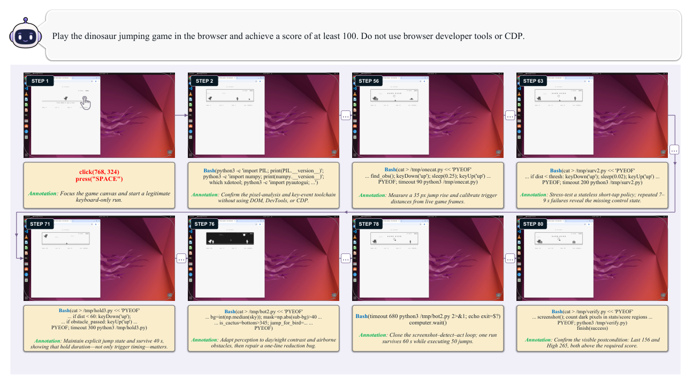
Figure 17: Representative trajectory of tightly coupled GUI–CLI collaboration. The task requires Qwen-UI-Agent to achieve a score of at least 100 in a browser-based dinosaur game without using DevTools or CDP. GUI observations provide evidence for measuring jump dynamics, diagnosing failed control policies, and recognizing changes between day and night modes, while CLI code iteratively implements stateful key control and adaptive obstacle detection.
dialog, or error. Batched execution therefore groups coherent local transactions rather than merely repeating similar actions.
对话框或错误时，模型即终止批次。可见，批量执行聚合的是连贯的局部事务，而非机械重复相似动作。
Case study: Tightly coupled GUI–CLI collaboration in a dynamic task. One particularly interesting trajectory asks Qwen-UI-Agent to play a browser-based dinosaur game and achieve a score of at least 100 without using browser developer tools or the Chrome DevTools Protocol (CDP). Issuing every jump as a separate model action is poorly suited to this task because obstacles continue moving during screenshot acquisition and model inference. Qwen-UI-Agent instead uses CLI to construct and iteratively refine a local controller that operates through rendered screenshots and standard keyboard events. The controller does not access the DOM or internal game state, leaving the visible GUI as its source of task state and the keyboard as its action interface.
案例研究：动态任务中紧耦合的 GUI–CLI 协作。一条颇为有趣的轨迹要求 Qwen-UI-Agent 玩一款浏览器恐龙游戏并取得至少 100 分，且禁用浏览器开发者工具与 Chrome DevTools Protocol（CDP）。把每次跳跃都作为独立模型动作发出并不适合此任务——截图采集与模型推理期间障碍物仍在移动。Qwen-UI-Agent 转而以 CLI 构建并迭代打磨一个本地控制器，令其通过渲染截图与标准键盘事件运作；控制器不触碰 DOM 或内部游戏状态，可见 GUI 依旧是它的任务状态来源，键盘则是它的动作接口。
The trajectory reveals a tightly coupled pattern of GUI–CLI composition. Successive GUI observations provide the evidence needed to measure jump dynamics, calibrate obstacle-trigger distances, and diag- nose errors in jump timing and duration. CLI code converts these observations into explicit perception and control procedures. When repeated trials expose the limitations of stateless, fixed-duration taps, the model introduces explicit action state and holds the jump key until the obstacle has passed. A further challenge arises when the game switches from day to night mode. The resulting contrast inversion invalidates the initial assumption that obstacles correspond to dark pixels. After identifying this change from the rendered frames, Qwen-UI-Agent replaces fixed color thresholding with background-relative segmentation and uses obstacle geometry to handle both ground-level cacti and airborne birds.
该轨迹揭示出一种紧耦合的 GUI–CLI 组合模式：连续的 GUI 观测提供证据，用于度量跳跃动力学、校准障碍物触发距离、诊断跳跃时机与持续时长的偏差；CLI 代码则把这些观测转化为显式的感知与控制程序。当反复试验暴露出无状态、固定时长按键的局限时，模型引入显式动作状态，按住跳跃键直到障碍物通过。游戏从白天切到夜晚模式又带来新挑战：对比度反转使“障碍物对应暗像素”的初始假设失效。Qwen-UI-Agent 从渲染帧中识别出这一变化后，以相对背景的分割替换固定颜色阈值，并借障碍物几何同时应对地面仙人掌与空中飞鸟。
The resulting controller survives for 60 seconds while executing 50 jumps and reaches a visible last-run score of 156. This case shows that GUI and CLI provide different but interdependent functions within a single trajectory. The GUI supplies perceptual evidence and execution feedback, while CLI execution turns that evidence into repeatable perception and control procedures that do not require model inference at every game step. By repeatedly moving from GUI observation to CLI-based revision and back to
所得控制器存活 60 秒、完成 50 次跳跃，可见的最后一次运行得分为 156。这一案例表明：在同一条轨迹内，GUI 与 CLI 承担着不同却相互依存的功能——GUI 供给感知证据与执行反馈，CLI 执行则把证据固化为可重复的感知与控制程序，无需在每个游戏步都调用模型推理。经由“GUI 观测 → 基于 CLI 的修订 → 再回到
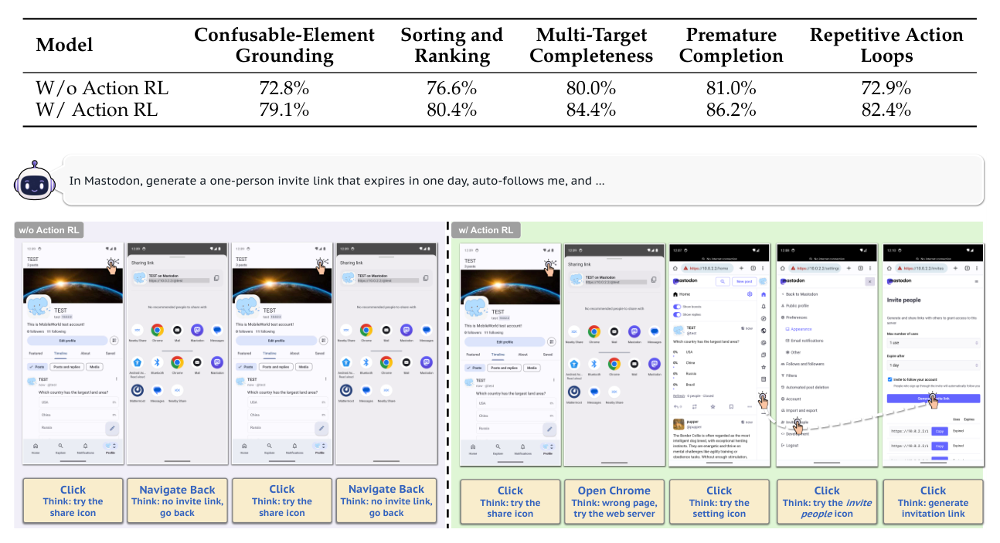
Table 12: Performance on five error-pattern-specific test sets before and after action RL training.
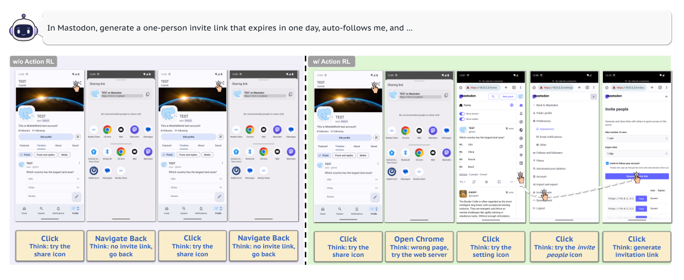
Figure 18: Action RL case study. The SFT model navigates to the account page and repeatedly clicks the share icon before navigating back, becoming trapped in an ineffective local loop. In contrast, the model after action RL recognizes that it is on the wrong page, switches to exploring Mastodon’s web interface, locates the correct entry point, and successfully configures the target invite link with the required settings.
GUI verification, Qwen-UI-Agent constructs an effective controller without privileged access to the application.
GUI 核验”的循环往复，Qwen-UI-Agent 在不具备应用特权访问的条件下构建出了有效的控制器。
4.3Step-Level Behavioral Corrections after Action RL4.3 动作 RL 后的步级行为纠正
Overall Performance and Behavioral Shift. We further conduct a comparative analysis of the model behaviors before and after action RL training. The primary effect of action RL is not merely an improve- ment in aggregate task success, but a systematic correction of erroneous action decisions at a fine-grained, step-level granularity. Beyond improving the overall task SR by more than 7%, action RL reduces the number of reasoning tokens by 21.3% while increasing the average number of interaction steps by 8.4%. These changes suggest that the updated policy performs less redundant reasoning and more frequently translates its decisions into environment-grounded actions. More importantly, the performance gains are accompanied by a clear shift in action patterns, characterized by the systematic correction of recurring action errors, which we examine in detail below.
总体表现与行为转变。我们进一步对比分析了动作 RL 训练前后的模型行为。动作 RL 的主要效果不止于聚合任务成功率的提升，更在于以细粒度的步级视角系统性纠正错误的动作决策：总体任务 SR 提高逾 7%，推理 token 数减少 21.3%，平均交互步数增加 8.4%。这些变化表明，更新后的策略减少了冗余推理，更频繁地把决策落实为基于环境的动作。更重要的是，性能提升伴随着动作模式的清晰转变——其标志正是对复现性动作错误的系统性纠正，下文将逐一细察。
Correction of Recurring Error Patterns. As shown in Table 12, action RL consistently improves per- formance across all five error-pattern-specific test sets. On grounding tasks that require selecting the correct target among visually or semantically similar candidates, action RL improves SR by 6.3%. It also improves SR on Sorting and Ranking, Quantity and Multi-Target Completeness, and Premature Completion tasks by 3.8%, 4.4%, and 5.2%, respectively. The effect of action RL is particularly evident in correcting short-range action loops. On tasks involving repeated operations over multiple targets or navigation through long scrollable interfaces, action RL improves SR by 9.5%. This gain indicates a stronger ability to recognize when recent actions have failed to produce task-relevant state changes and to switch to an alternative action. Figure 18 presents a representative example in which the agent is asked to generate an invitation link in Mastodon. The model before action RL repeatedly interacts with the profile-sharing icon and eventually reaches the step limit. In contrast, the model after action RL
复现性错误模式的纠正。如表 12 所示，动作 RL 在全部五个错误模式专项测试集上都稳定提升表现：在需从视觉或语义相近候选中选出正确目标的定位任务上，SR 提高 6.3%；在排序与排名、数量与多目标完整性、过早完成三类任务上分别提高 3.8%、4.4% 与 5.2%。动作 RL 对短程动作循环的纠正尤为显著——在需要对多目标重复操作或在长可滚动界面中导航的任务上，SR 提高 9.5%。这一增益表明，模型识别“近期动作未产生任务相关状态变化”并切换到替代动作的能力更强。图 18 给出一个代表性示例：智能体被要求在 Mastodon 上生成邀请链接。动作 RL 前的模型反复与个人资料分享图标纠缠，最终耗尽步数上限；动作 RL 后的模型
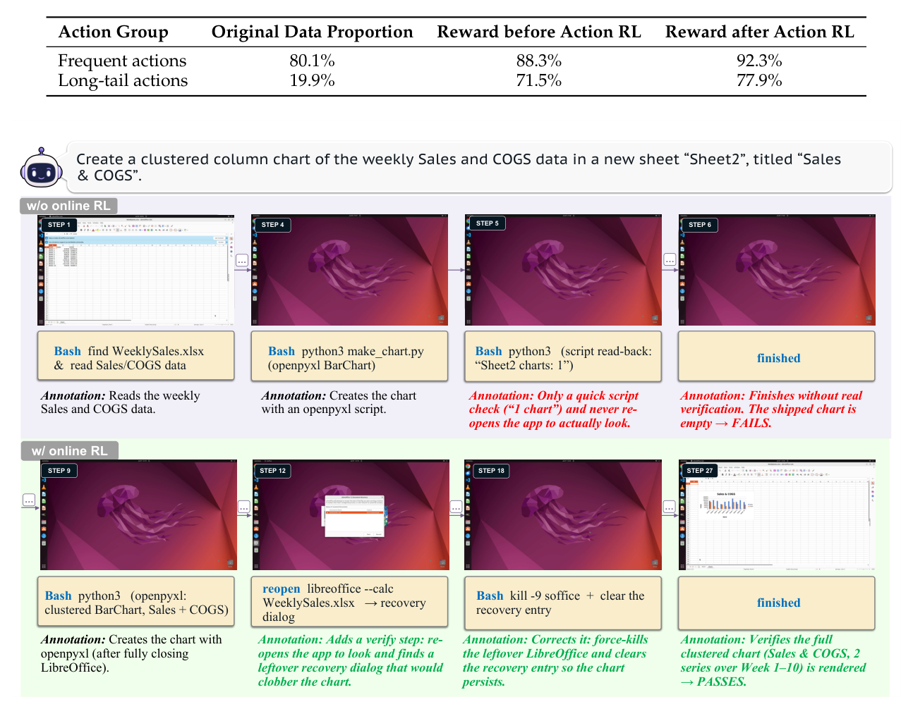
Table 13: Performance comparison between frequent and long-tail actions.
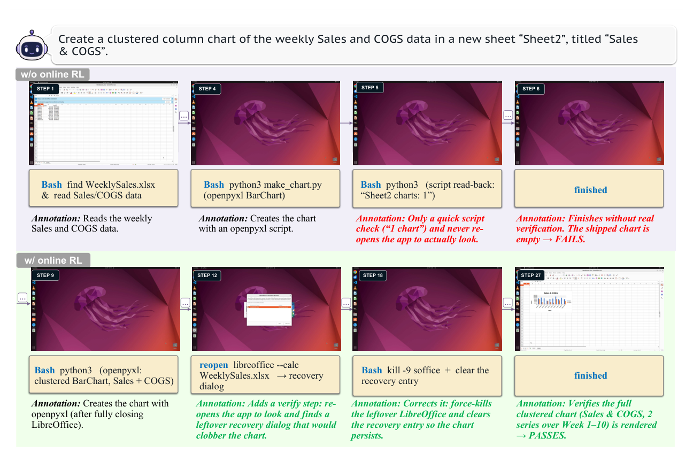
Figure 19: Online RL elicits verification and self-correction. On the same task, the online RL policy (bottom) succeeds where the SFT policy (top) fails, because it reopens the application to inspect the actual result and corrects the problem it finds before finishing. The SFT policy trusts a superficial script check that only counts the chart, never looks at the rendered output, and ships an empty chart with no data series, whereas the RL policy reopens the file to verify, finds that a leftover application instance would overwrite the chart, removes it so the chart persists, and confirms that the full clustered chart is actually rendered before terminating.
recognizes that it is on the wrong page, explores an alternative path through Mastodon’s web interface, and reaches the correct interface for configuring the invitation link. This example highlights the central role of step-level action RL: when a short sequence of actions fails to make meaningful progress, the automatically constructed loop-breaking examples teach the policy to revise its immediate action choice rather than persist with an ineffective pattern.
则识别出自己身处错误页面，转而探索 Mastodon 网页界面的另一条路径，并抵达配置邀请链接的正确界面。这一例子凸显了步级动作 RL 的核心作用：当一小段动作未能取得实质进展时，自动构建的打破循环示例教会策略修订即时动作选择，而非固守无效模式。
Improved Handling of Long-tail Actions. GUI action trajectories exhibit a highly imbalanced distribution. Frequent actions such as click, drag, and type account for 80.1% of primitive actions, whereas long-tail actions such as ask_user, and long_press account for only 19.9%. Despite their low frequency, these actions are often critical for reaching specific application states or invoking specialized controls. Pass-N rollouts show that their reward is 16.8% lower than that of frequent actions, reflecting their limited coverage in the training data. Action RL therefore increases the proportion of long-tail action examples to about 40% in the training data, improving their reward by 6.4%. These results demonstrate that action RL can selectively strengthen low-frequency but high-impact action decisions.
长尾动作处理的改进。GUI 动作轨迹的分布高度失衡：click、drag、type 等高频动作占原子动作的 80.1%，而 ask_user、long_press 等长尾动作仅占 19.9%。这些动作虽频率低，却常常是抵达特定应用状态或调用专用控件的关键。Pass-N rollout 显示，长尾动作的奖励比高频动作低 16.8%，反映其在训练数据中的覆盖不足。为此，动作 RL 将训练数据中长尾动作示例的比例提高到约 40%，其奖励随之提升 6.4%。这些结果表明，动作 RL 能有选择地强化低频却影响重大的动作决策。
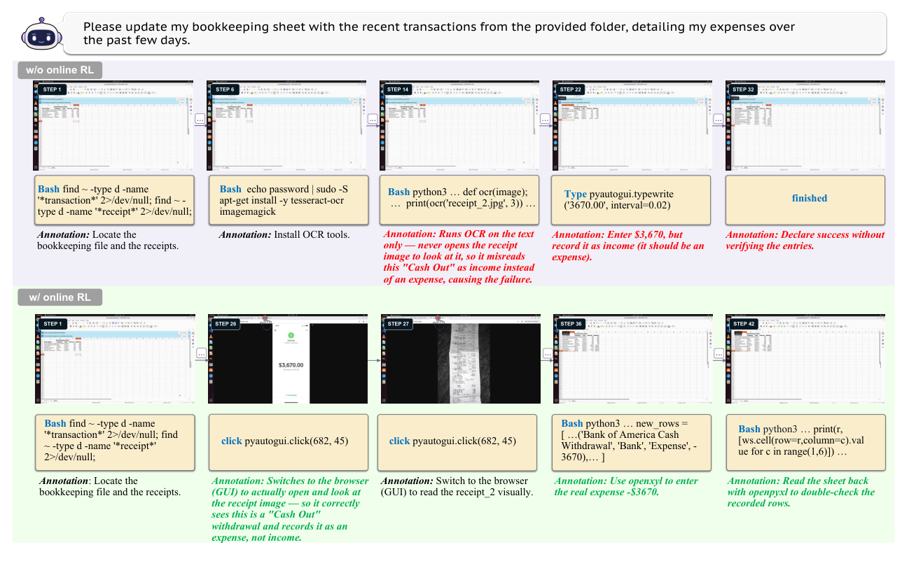
Figure 20: Online RL elicits emergent cross-modal action. On the same task, the online RL policy (bottom) succeeds where the SFT policy (top) fails, because it grounds its decisions in what it visually observes and verifies the result before finishing. The SFT policy reads the receipt from OCR text alone, mistakes a Cash Out for income, and declares success without checking, whereas the RL policy opens the receipt image to visually read it, records it correctly as an expense, and reads the spreadsheet back to verify before terminating.
4.4Trajectory-Level Behavioral Shifts after Online RL4.4 在线 RL 后的轨迹级行为转变
By carefully comparing the trajectories generated before and after online RL across different domains, we identify the emergence of three desirable behavioral patterns.
细致比较不同领域在线 RL 前后生成的轨迹后，我们识别出三种有益行为模式的涌现。
From Assumed Success to Verified Completion. Before online RL, the policy often terminates immedi- ately after its final state-changing action, assuming that the task has been completed without verifying the intended effect. After online RL, the policy more frequently inspects the resulting state before termi- nation and recovers when verification reveals incomplete execution. Figure 19 illustrates a representative example. Before online RL, the policy performs a sequence of Bash operations and declares completion without checking their effects. After online RL, the policy initially follows the same Bash-based path but adds a verification step, discovers that part of the intended output was not generated, switches to an alternative approach, and ultimately completes the task successfully. Aggregate results on OSWorld show the same trend: the fraction of trajectories containing at least one verification action increases by 14.7%, accompanied by an 11.2% decrease in the false-stop rate—the fraction of self-declared successful episodes that fail the final verifier.
从假设成功到经核验的完成。在线 RL 之前，策略常在最后一个改变状态的动作之后立即终止，想当然地认为任务已完成而不核验预期效果；在线 RL 之后，策略更频繁地在终止前检查结果状态，并在核验发现执行不完整时进行恢复。图 19 给出代表性示例：在线 RL 前，策略执行一串 Bash 操作后径直宣告完成、不查效果；在线 RL 后，策略起初走同样的 Bash 路径，却增加一步核验，发现部分预期输出未生成，随即切换替代方案，最终成功完成任务。OSWorld 上的聚合结果呈同一趋势：含至少一个核验动作的轨迹比例增加 14.7%，误停率——自报成功的回合中未通过最终验证者的比例——下降 11.2%。
Bash as Hands, GUI as Eyes: Emergent Cross-modal Collaboration. After online RL, the policy shifts from a Bash-leaning strategy to a more balanced use of Bash and GUI actions: the share of GUI actions increases by 6%, while the fraction of trajectories employing both GUI and Bash increases by 10.6 %. Notably, despite the absence of an explicit objective for modality coordination, a useful pattern of cross-modal collaboration emerges: the policy uses Bash to execute state changes efficiently and the GUI to inspect their effects. Consistent with this pattern, the fraction of trajectories exhibiting an
Bash 为手，GUI 为眼：涌现的跨模态协作。在线 RL 之后，策略从偏重 Bash 转向更均衡地使用 Bash 与 GUI 动作：GUI 动作占比增加 6%，同时使用 GUI 与 Bash 的轨迹比例增加 10.6%。值得注意的是，尽管训练中并未设定模态协调的显式目标，一种有用的跨模态协作模式仍然涌现：策略以 Bash 高效执行状态变更、以 GUI 检视其效果。与该模式一致，呈现
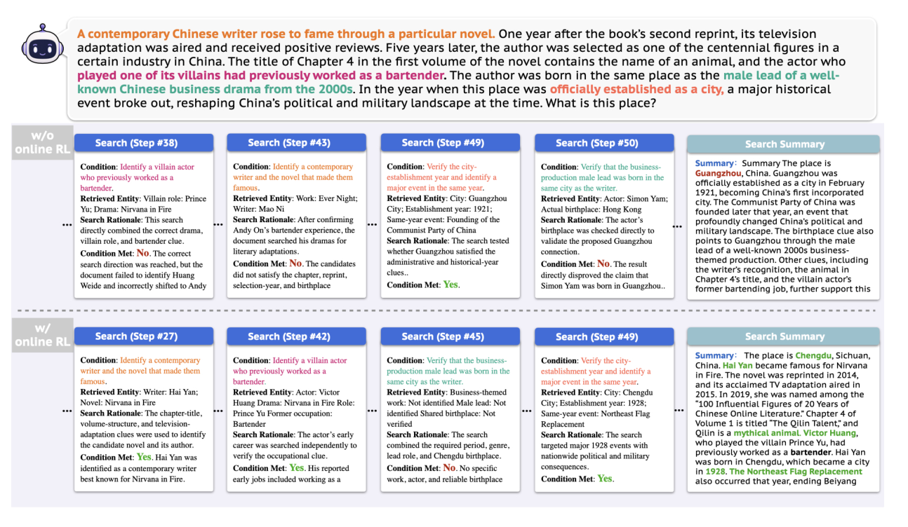
Figure 21: Online RL improves long-horizon search and verification. Without online RL, the model follows incorrect entity associations and reaches the unsupported answer Guangzhou. With online RL, it identifies the key chain of Hai Yan, Nirvana in Fire, Huang Weide, and Chengdu.
execution–verification transition—a state-changing Bash action followed by a read-only GUI inspection— increases from 40.2% to 52.4%. Figure 20 illustrates a representative example. Before online RL, the policy relies only on Bash to execute the task and, without visual information, fails to distinguish income from expenses, introducing errors into the result. After online RL, the policy executes efficiently with Bash and then opens individual receipts in the GUI for visual inspection, allowing it to distinguish the relevant entries and complete the task correctly. This cross-modal loop combines efficient execution with reliable feedback, with Bash serving as the hands and the GUI as the eyes.
执行–核验转移——先以改变状态的 Bash 动作、后接一次只读 GUI 检查——的轨迹比例从 40.2% 升至 52.4%。图 20 给出代表性示例：在线 RL 前，策略仅靠 Bash 执行任务，因缺乏视觉信息而无法区分收入与支出，给结果引入错误；在线 RL 后，策略先以 Bash 高效执行，再在 GUI 中逐张打开收据目视核对，从而分辨相关条目、正确完成任务。这一跨模态回路把高效执行与可靠反馈融为一体——Bash 是双手，GUI 是双眼。
Maintaining Constraints Over Long Horizons. Long-horizon tasks often impose additional constraints on the primary goal, including quantities, formats, ranges, and exclusions. Comparing behavior before and after online RL, we find that the policy becomes more reliable at preserving constraints introduced earlier in the instruction throughout execution. Across the two benchmarks, the fraction of tasks satisfying all instruction constraints increases by 8.6% on OSWorld and by 7.5% on BrowseComp-ZH. Figure 21 illustrates a representative BrowseComp-ZH example involving four constraints. In this case, the policy shifts from satisfying only one constraint and reaching an incorrect conclusion to retaining and jointly applying all four, leading to the correct answer.
在长程中保持约束。长程任务常对主要目标附加额外约束——数量、格式、范围与排除条件等。对比在线 RL 前后的行为可见，策略在执行全程保持指令前部所引入约束方面更加可靠：满足全部指令约束的任务比例在 OSWorld 上提高 8.6%，在 BrowseComp-ZH 上提高 7.5%。图 21 展示一个含四项约束的代表性 BrowseComp-ZH 示例：策略从只满足一项约束、得出错误结论，转变为保留并联合运用全部四项约束，最终得到正确答案。
5Related Work5 相关工作
Recent work on GUI agents across mobile-use, browser-use, and computer-use increasingly favors native multimodal policies over prompt-only orchestration, with stronger use of self-evolving data engines, online reinforcement learning, and structured memory (Seed, 2025; Zhou et al., 2025a; Gao et al., 2026; He et al., 2024; Wang et al., 2025b; Huang et al., 2026). The field is also moving from benchmark-only optimization toward realistic deployment concerns in terms of real-device execution, privacy, operational reliability, safety, and latency (Cao et al., 2026; Qin et al., 2025; Zhou et al., 2025a; Huang et al., 2026).
近期跨移动使用、浏览器使用与计算机使用的 GUI 智能体研究，日益偏爱原生多模态策略而非仅靠提示的编排，并更强调自演化数据引擎、在线强化学习与结构化记忆（Seed, 2025; Zhou et al., 2025a; Gao et al., 2026; He et al., 2024; Wang et al., 2025b; Huang et al., 2026）。该领域也在从只面向基准的优化转向真实部署关切——真机执行、隐私、运行可靠性、安全性与时延（Cao et al., 2026; Qin et al., 2025; Zhou et al., 2025a; Huang et al., 2026）。
Mobile Use. Recent mobile agent works increasingly move beyond screenshot-grounded action predic-
移动使用。近期的移动智能体工作日益超越基于截图的动作预
tion toward more capable systems with memory, reflection, RL, and agentic harness. Mobile-Agent-v3.5 (Xu et al., 2026) and UI-Venus-1.5 (Gao et al., 2026) scale unified GUI models across diverse platforms and tasks. Step-GUI (Yan et al., 2025) and UI-TARS-2 (Wang et al., 2025a) investigate data flywheels and multi-turn RL for improving agent capability through iterative interaction. MAI-UI (Zhou et al., 2025a) explores hybrid GUI-MCP operations and device–cloud collaboration. Xiaomi-GUI-0 (Cao et al., 2026) studies real-device closed-loop training that captures state dynamics. Existing mobile agent evaluations mainly focus on three aspects: grounding capability (e.g., ScreenSpot-Pro (Li et al., 2025a)), interactive task completion in controlled environments (e.g., AndroidWorld (Rawles et al., 2024)), and more real- istic daily-use scenarios such as MobileWorld (Kong et al., 2026), AndroidDaily (Sui et al., 2026), and RealMobile (Cao et al., 2026).
测，走向具备记忆、反思、强化学习与智能体 harness 的更强系统。Mobile-Agent-v3.5（Xu et al., 2026）与 UI-Venus-1.5（Gao et al., 2026）把统一 GUI 模型扩展到多样平台与任务；Step-GUI（Yan et al., 2025）与 UI-TARS-2（Wang et al., 2025a）研究数据飞轮与多轮 RL，以迭代交互提升智能体能力；MAI-UI（Zhou et al., 2025a）探索混合 GUI-MCP 操作与设备–云协同；Xiaomi-GUI-0（Cao et al., 2026）研究捕捉状态动力学的真机闭环训练。现有移动智能体评测主要聚焦三方面：定位能力（如 ScreenSpot-Pro（Li et al., 2025a)）、受控环境中的交互式任务完成（如 AndroidWorld（Rawles et al., 2024)），以及更贴近真实的日常使用场景——MobileWorld（Kong et al., 2026）、AndroidDaily（Sui et al., 2026）与 RealMobile（Cao et al., 2026）。
Browser Use. Compared with mobile agents, browser-use agents can additionally leverage structured information such as DOM trees, accessibility trees, and browser APIs. Early research such as WebVoyager (He et al., 2024) and SeeAct (Zheng et al., 2024) demonstrate the capability of multimodal LLMs to perform end-to-end web navigation by combining visual understanding with browser actions. Recent projects, such as OpenAI Operator (OpenAI, 2025), Google Project Mariner (Google, 2025), and UI-TARS (Seed, 2025), further extend web agents toward autonomous interaction with complex websites and diverse digital environments. Some recent studies like WebWorld (Xiao et al., 2026) and WebEvolver (Fang et al., 2025) also explore world-model-based approaches for web-agent. Web-agent evaluation has evolved from short-horizon webpage navigation toward realistic long-horizon workflows involving multiple websites and complex objectives (Zhou et al., 2024; Xue et al., 2025; Jang et al., 2026).
浏览器使用。与移动智能体相比，浏览器使用智能体还能额外利用 DOM 树、无障碍树与浏览器 API 等结构化信息。WebVoyager（He et al., 2024）与 SeeAct（Zheng et al., 2024）等早期研究，展示了多模态 LLM 结合视觉理解与浏览器动作进行端到端网页导航的能力；OpenAI Operator（OpenAI, 2025）、Google Project Mariner（Google, 2025）与 UI-TARS（Seed, 2025）等近期项目，进一步把网页智能体推向与复杂网站及多样数字环境的自主交互；WebWorld（Xiao et al., 2026）与 WebEvolver（Fang et al., 2025）等新近工作则探索面向网页智能体的世界模型方法。网页智能体评测也已从短程网页导航，演进为涉及多网站与复杂目标的真实长程工作流（Zhou et al., 2024; Xue et al., 2025; Jang et al., 2026）。
Computer Use. Computer-use agents (CUA) aim to enable general interaction with desktop environ- ments, covering diverse software and productivity applications. Compared with mobile and web agents, CUAs face a significantly larger action space, more diverse interaction states, and longer horizon, making reliable grounding and execution verification critical. Recent efforts including UI-TARS (Qin et al., 2025), DART-GUI (Li et al., 2025b), OpenCUA (Wang et al., 2025b), UltraCUA (Yang et al., 2025b), EvoCUA (Huang et al., 2026) investigate scalable GUI foundation models by leveraging multimodal pretraining, large-scale interaction data, and agentic reasoning. Recent CUA benchmarks increasingly emphasize robustness, scalability, and real-world deployment challenges. OSWorld-Verified improves evaluation reliability through stricter verification protocols and reduced ambiguity in success assessment (Xie et al., 2024). OSWorld-v2 further scales evaluation toward more complex, long-horizon workflows and diverse real-world computer tasks (Yuan et al., 2026).
计算机使用。计算机使用智能体（CUA）旨在实现与桌面环境的通用交互，覆盖多样的软件与效率应用。与移动及网页智能体相比，CUA 面临显著更大的动作空间、更多样的交互状态与更长的时程，可靠的定位与执行核验因而至关重要。UI-TARS（Qin et al., 2025）、DART-GUI（Li et al., 2025b）、OpenCUA（Wang et al., 2025b）、UltraCUA（Yang et al., 2025b）、EvoCUA（Huang et al., 2026）等近期工作，借助多模态预训练、大规模交互数据与智能体推理研究可扩展的 GUI 基础模型。近期的 CUA 基准日益强调鲁棒性、可扩展性与真实部署挑战：OSWorld-Verified 以更严格的验证协议与更低的成功判定歧义提升评测可靠性（Xie et al., 2024)；OSWorld-v2 进一步把评测扩展到更复杂的长程工作流与多样真实计算机任务（Yuan et al., 2026)。
6Conclusion6 结论
We presented Qwen-UI-Agent, a real-world centric foundation GUI agent. Guided by a vision of agents that operate on real devices, maintain workflows across platforms, combine GUI interaction with CLI execution, and proactively initiate useful services, Qwen-UI-Agent integrates scalable sandbox environments with a robust real-device mobile runtime, a unified GUI+CLI action space, an agent- driven data flywheel, a training framework combining SFT, action RL, and online RL, and a harness layer for proactive service initiation and cross-platform task execution. Empirically, Qwen-UI-Agent achieves 82.1% on MobileWorld, 92.2% on MobileWorld-Real, and 97.5% on AndroidDaily. It also reaches 79.5% on OSWorld-Verified, and 40.0% on OSWorld-v2. Qwen-UI-Agent further obtains leading or competitive performance across browser use, DeepSearch, and GUI-grounding, while preserving strong general reasoning and agentic capabilities. Together, these results support a systems view of GUI agent development where models, environments, data flywheel, training, and harness are co-designed around real-world usage.
我们提出了 Qwen-UI-Agent——一个以真实世界为中心的基础 GUI 智能体。在“运行于真实设备、跨平台延续工作流、结合 GUI 交互与 CLI 执行、主动发起有用服务”这一愿景指引下，Qwen-UI-Agent 集成了可扩展的沙盒环境与稳健的真机移动运行时、统一的 GUI+CLI 动作空间、智能体驱动的数据飞轮、融合 SFT/动作 RL/在线 RL 的训练框架，以及支撑主动服务发起与跨平台任务执行的 harness 层。实验上，Qwen-UI-Agent 在 MobileWorld 取得 82.1%、MobileWorld-Real 取得 92.2%、AndroidDaily 取得 97.5%；在 OSWorld-Verified 达到 79.5%、OSWorld-v2 达到 40.0%。它还在浏览器使用、DeepSearch 与 GUI grounding 上取得领先或有竞争力的表现，同时保留强劲的通用推理与智能体能力。这些结果共同支持一种 GUI 智能体开发的系统观：模型、环境、数据飞轮、训练与 harness 应围绕真实世界使用协同设计。
7Limitations and Future Directions7 局限与未来方向
Limitations. First, we evaluate real-device mobile trajectories using AutoJudge rather than deterministic verifiers or manual expert examination. Deterministic state-based verification is generally infeasible on physical phones because of the restrict access to the internal states of third-party applications. Meanwhile, manually adjudicating trajectories from Qwen-UI-Agent and ten baselines would require substantial expert effort and introduce inter-annotator variation. To ensure a consistent comparison, we apply the same AutoJudge protocol to all systems. On 666 examples independently examined by experts, AutoJudge achieves 92.8% exact-match accuracy. Nevertheless, its remaining errors may introduce minor uncertainty into the reported real-device results. Second, CUA and DeepSearch training at the 35B-A3B scale was still in progress when this technical report was released, so the corresponding results are not included. We plan to update the arXiv version once these results become available. Third, beyond the real-device environments described in this report, higher-fidelity synthetic environments that more closely reproduce real applications provide another path to narrowing the simulation-to-real gap. We have constructed such environments, but training with them was not yet incorporated into the reported model, so this component is not presented in the current report. We plan to open-source the environment synthesis methodology in future work. Fourth, our attempts to fully automate GUI capability development showed that current foundation models cannot yet manage the entire process reliably. Our pipeline is therefore agent-driven rather than fully autonomous and still requires considerable human oversight and intervention to monitor progress and correct errors.
局限。其一，真机移动轨迹的评估采用 AutoJudge，而非确定性验证器或人工专家审查：由于第三方应用内部状态访问受限，基于状态的确定性验证在物理手机上通常不可行；而对 Qwen-UI-Agent 及十个基线的轨迹逐一人工裁定，既需大量专家投入，又会引入标注者间差异。为保证一致的对比，我们对所有系统采用同一 AutoJudge 协议——在专家独立审查的 666 个样本上，其完全一致率达 92.8%；尽管如此，残余错误仍可能给报告的真机结果带来轻微不确定性。其二，本技术报告发布时，35B-A3B 规模的 CUA 与 DeepSearch 训练仍在进行，相应结果暂未纳入；待结果就绪后我们将更新 arXiv 版本。其三，除本报告所述真机环境外，能更逼真复现真实应用的高保真合成环境，是缩小模拟到真实差距的另一条路径；我们已构建此类环境，但其训练尚未纳入所报告的模型，故本报告未呈现该部分，环境合成方法将在后续工作中开源。其四，全面自动化 GUI 能力开发的尝试表明，当前基础模型尚无法可靠地管理整个过程；因此本流水线是智能体驱动而非完全自主，仍需大量人类监督与干预来监控进展、纠正错误。
Future Directions. We discuss several directions that we believe warrant further investigation as GUI agents move toward reliable and practical real-world use.
未来方向。随着 GUI 智能体迈向可靠、实用的真实世界应用，我们认为以下几个方向值得深入探究。
• Efficient GUI Execution. GUI agents are capable to complete increasingly complex workflows directly on real devices, marking an encouraging step toward practical use. However, capability alone is not sufficient. Execution efficiency, particularly interaction latency, remains a major obstacle to practical use. Each GUI step typically requires a new observation, model inference, and environment transition, causing latency to accumulate over long trajectories. Virtual-display mechanisms across mobile and desktop systems can partially mitigate this problem by enabling background or parallel execution, but they do not remove the fundamental per-step cost of the perception–reasoning–action loop. Reducing this cost through faster inference, adaptive observation, asynchronous execution, and fewer interaction rounds therefore remains an important for bringing GUI agents into practical real-world use.
• 高效 GUI 执行。GUI 智能体已能在真实设备上直接完成日益复杂的工作流，这是迈向实用的重要一步；但仅有能力还不够。执行效率——尤其是交互时延——仍是实际落地的主要障碍：每个 GUI 步骤通常需要一次新观测、一次模型推理与一次环境转移，时延在长轨迹上不断累积。跨移动与桌面系统的虚拟显示机制能以后台或并行执行部分缓解这一问题，却无法消除感知–推理–动作回路的根本性单步成本。因此，以更快推理、自适应观测、异步执行与更少交互轮次压低这一成本，仍是 GUI 智能体走向真实应用的关键课题。
• Harness-Assisted Long-Horizon Workflows. Our hybrid GUI+CLI action space and support for batched actions improve execution efficiency, while online RL strengthens decision making over long trajectories. A complementary direction is to further exploit the harness as a source of long-horizon support beyond the model itself. Harness-level designs for context compression, task decomposition, memory management, progress tracking, and structured tool use could improve the efficiency and reliability of long-horizon workflows from another perspective.
• Harness 辅助的长程工作流。混合 GUI+CLI 动作空间与批量动作支持提升了执行效率，在线 RL 则强化了长轨迹上的决策；一个互补方向，是把 harness 作为模型之外的长程支持来源进一步加以利用。面向上下文压缩、任务分解、记忆管理、进度跟踪与结构化工具使用的 harness 级设计，可从另一视角提升长程工作流的效率与可靠性。
• Large-Scale Cross-Domain Online RL. Long-horizon GUI tasks make online RL costly because rollouts are slow and variable in length, while rewards are often sparse or delayed. Future work should develop more efficient and stable training strategies for these settings, while jointly training across browser-use, mobile-use, and computer-use environments to improve data efficiency and cross-domain generalization (Wang et al., 2025a; Hou et al., 2026).
• 大规模跨领域在线 RL。长程 GUI 任务令在线 RL 代价高昂：rollout 缓慢且长度多变，奖励往往稀疏或延迟。未来工作应为这类场景开发更高效、更稳定的训练策略，并在浏览器使用、移动使用与计算机使用环境间联合训练，以提升数据效率与跨领域泛化（Wang et al., 2025a; Hou et al., 2026）。
• Scalable Synthesis of High-Fidelity Environments. Real-device environments provide the most faithful interaction dynamics, but remain expensive to scale, reset, and verify. High-fidelity synthetic environments offer a complementary path by approximating real-world application behavior in a form that can be generated and controlled at scale. Scalable synthesis of such environments is important for narrowing the simulation-to-real gap and expanding real-world-oriented training. We have constructed such environments, unfortunately, their integration into model training was not completed in time for
• 高保真环境的可扩展合成。真机环境的交互动力学最为忠实，但扩展、重置与验证成本高昂。高保真合成环境提供一条互补路径：以可大规模生成与控制的形式逼近真实应用行为。此类环境的可扩展合成，对缩小模拟到真实差距、扩展面向真实世界的训练意义重大。我们已构建此类环境，遗憾的是，其与模型训练的整合未能在本报告
this report. We will open-source the environment synthesis methodology in future work.
发布前完成，环境合成方法将在后续工作中开源。
• Safety, User Control, and Personalization. As GUI agents gain the ability to operate across applica- tions and devices, ensuring that their actions remain safe and under user control becomes increasingly important. In this work, we include safety-sensitive training scenarios that teach the model to invoke the call_user action and return control to the user when additional input or authorization is required. More systematic safety evaluations, safety-oriented training objectives, and interpretability-based methods for understanding and constraining agent behavior remain important directions. Personaliza- tion is equally important for improving the real-world user experience. Our proactive-service harness provides an initial exploration, but constructing useful user memories and profiles, grounding them in reliable information sources, and giving users control over what information is retained all warrant further investigation.
• 安全、用户控制与个性化。随着 GUI 智能体获得跨应用、跨设备的操作能力，确保其动作安全且始终处于用户控制之下愈发重要。本工作已纳入安全敏感的训练场景，教会模型在需要额外输入或授权时调用 call_user 动作、把控制权交还用户；更系统的安全评测、面向安全的训练目标，以及基于可解释性来理解与约束智能体行为的方法，仍是重要方向。个性化对提升真实用户体验同样关键：主动服务 harness 已是初步探索，但如何构建有用的用户记忆与画像、将其锚定于可靠信息源、让用户掌控哪些信息可被保留，都有待深入研究。
8Contributions8 贡献人员
Core Contributors核心贡献者
Hanzhang Zhou∗, Panrong Tong∗, Xu Zhang∗, Quyu Kong, Chenglin Cai, Tianyu Xia, Gongjie Zhang, Jianan Zhang, Long Li, Long Chen, Lei Wang, Gaole Dai, Pengxiang Li, Liangyu Chen, Yue Wang†, Steven Hoi.
Hanzhang Zhou∗, Panrong Tong∗, Xu Zhang∗, Quyu Kong, Chenglin Cai, Tianyu Xia, Gongjie Zhang, Jianan Zhang, Long Li, Long Chen, Lei Wang, Gaole Dai, Pengxiang Li, Liangyu Chen, Yue Wang†, Steven Hoi.
Contributors贡献者
Hongliang Lu, Miaoyi Zhou, Chen Liu, Yuchen Sun, Yucheng Zhao, Yiran Zhong, Jiahui Zeng, Minggang Wu, Zhixiang Ma, Shaoshun Huang, Shuaihao Zhang.
Hongliang Lu, Miaoyi Zhou, Chen Liu, Yuchen Sun, Yucheng Zhao, Yiran Zhong, Jiahui Zeng, Minggang Wu, Zhixiang Ma, Shaoshun Huang, Shuaihao Zhang.
ReferencesReferences
Anthropic. Introducing Claude Opus 4.8. https://www.anthropic.com/news/claude-opus-4-8, May
Anthropic. Introducing Claude Opus 4.8. https://www.anthropic.com/news/claude-opus-4-8, May
2026. Accessed: 2026-07-19.2026. Accessed: 2026-07-19.
Apodex Team. Apodex-1.0: A verification-centric agent team for discoverative intelligence. Technical
Apodex Team. Apodex-1.0: A verification-centric agent team for discoverative intelligence. Technical
report, Apodex, 2026. URL https://www.apodex.com/blog/apodex-1.0.report, Apodex, 2026. URL https://www.apodex.com/blog/apodex-1.0.
Victor Barres, Honghua Dong, Soham Ray, Xujie Si, and Karthik Narasimhan. τ2-Bench: Evaluating
Victor Barres, Honghua Dong, Soham Ray, Xujie Si, and Karthik Narasimhan. τ2-Bench: Evaluating
conversational agents in a dual-control environment. arXiv preprint arXiv:2506.07982, 2025. URL https://arxiv.org/abs/2506.07982.
conversational agents in a dual-control environment. arXiv preprint arXiv:2506.07982, 2025. URL https://arxiv.org/abs/2506.07982.
ByteDance Seed. Seed2.0. https://seed.bytedance.com/en/seed2, February 2026a. Released:
ByteDance Seed. Seed2.0. https://seed.bytedance.com/en/seed2, February 2026a. Released:
2026-02-14.2026-02-14.
ByteDance Seed. Seed2.1 officially released: Advancing AI productivity. https://seed.bytedance.c
ByteDance Seed. Seed2.1 officially released: Advancing AI productivity. https://seed.bytedance.c
om/en/blog/seed2-1-officially-released-advancing-ai-productivity, June 2026b. Accessed: 2026-07-19.om/en/blog/seed2-1-officially-released-advancing-ai-productivity, June 2026b. Accessed: 2026-07-19.
Wanxia Cao, Chengzhen Duan, Pei Fu, Pengzhi Gao, Niu Lian, Fazhan Liu, Hui Liu, Heng Qu, Qinzhuo
Wanxia Cao, Chengzhen Duan, Pei Fu, Pengzhi Gao, Niu Lian, Fazhan Liu, Hui Liu, Heng Qu, Qinzhuo
Wu, Zhehao Yu, et al. Xiaomi-gui-0 technical report. arXiv preprint arXiv:2606.31410, 2026.
Wu, Zhehao Yu, et al. Xiaomi-gui-0 technical report. arXiv preprint arXiv:2606.31410, 2026.
Liangyu Chen, Hanzhang Zhou, Chenglin Cai, Jianan Zhang, Panrong Tong, Quyu Kong, Xu Zhang,
Liangyu Chen, Hanzhang Zhou, Chenglin Cai, Jianan Zhang, Panrong Tong, Quyu Kong, Xu Zhang,
Chen Liu, Yuqi Liu, Wenxuan Wang, et al. Ui-ins: Enhancing gui grounding with multi-perspective instruction-as-reasoning. arXiv preprint arXiv:2510.20286, 2025.
Chen Liu, Yuqi Liu, Wenxuan Wang, et al. Ui-ins: Enhancing gui grounding with multi-perspective instruction-as-reasoning. arXiv preprint arXiv:2510.20286, 2025.
Google DeepMind. Gemini 3 pro, 2025. URL https://deepmind.google/models/gemini/pro/.
Google DeepMind. Gemini 3 pro, 2025. URL https://deepmind.google/models/gemini/pro/.
DeepSeek-AI. DeepSeek-V3.2: Pushing the frontier of open large language models. arXiv preprint
DeepSeek-AI. DeepSeek-V3.2: Pushing the frontier of open large language models. arXiv preprint
arXiv:2512.02556, 2025. URL https://arxiv.org/abs/2512.02556.arXiv:2512.02556, 2025. URL https://arxiv.org/abs/2512.02556.
Tianqing Fang, Hongming Zhang, Zhisong Zhang, Kaixin Ma, Wenhao Yu, Haitao Mi, and Dong Yu.
Tianqing Fang, Hongming Zhang, Zhisong Zhang, Kaixin Ma, Wenhao Yu, Haitao Mi, and Dong Yu.
Webevolver: Enhancing web agent self-improvement with co-evolving world model. In Proceedings of the 2025 Conference on Empirical Methods in Natural Language Processing, pp. 8970–8986, 2025.
Webevolver: Enhancing web agent self-improvement with co-evolving world model. In Proceedings of the 2025 Conference on Empirical Methods in Natural Language Processing, pp. 8970–8986, 2025.
Changlong Gao, Zhangxuan Gu, Yulin Liu, Xinyu Qiu, Shuheng Shen, Yue Wen, Tianyu Xia, Zhenyu
Changlong Gao, Zhangxuan Gu, Yulin Liu, Xinyu Qiu, Shuheng Shen, Yue Wen, Tianyu Xia, Zhenyu
Xu, Zhengwen Zeng, Beitong Zhou, Xingran Zhou, Weizhi Chen, Sunhao Dai, Jingya Dou, Yichen Gong, Yuan Guo, Zhenlin Guo, Feng Li, Qian Li, Jinzhen Lin, Yuqi Zhou, Linchao Zhu, Liang Chen, Zhenyu Guo, Changhua Meng, and Weiqiang Wang. UI-Venus-1.5 Technical Report. arXiv preprint arXiv:2602.09082, 2026. URL https://arxiv.org/abs/2602.09082.
Xu, Zhengwen Zeng, Beitong Zhou, Xingran Zhou, Weizhi Chen, Sunhao Dai, Jingya Dou, Yichen Gong, Yuan Guo, Zhenlin Guo, Feng Li, Qian Li, Jinzhen Lin, Yuqi Zhou, Linchao Zhu, Liang Chen, Zhenyu Guo, Changhua Meng, and Weiqiang Wang. UI-Venus-1.5 Technical Report. arXiv preprint arXiv:2602.09082, 2026. URL https://arxiv.org/abs/2602.09082.
Genymobile. scrcpy: Display and control your Android device. https://github.com/Genymobile/sc
Genymobile. scrcpy: Display and control your Android device. https://github.com/Genymobile/sc
rcpy, 2018. Accessed: 2026-07-28.rcpy, 2018. Accessed: 2026-07-28.
Google. Project mariner. https://labs.google.com/mariner/landing/, 2025.Google. Project mariner. https://labs.google.com/mariner/landing/, 2025.
Google. Gemini 3.1 Pro Preview. https://ai.google.dev/gemini-api/docs/models/gemini-3.1-p
Google. Gemini 3.1 Pro Preview. https://ai.google.dev/gemini-api/docs/models/gemini-3.1-p
ro-preview, February 2026a. Google AI for Developers; accessed: 2026-07-19.
ro-preview, February 2026a. Google AI for Developers; accessed: 2026-07-19.
Google. Gemini 3.5 Flash. https://ai.google.dev/gemini-api/docs/models/gemini-3.5-flash,Google. Gemini 3.5 Flash. https://ai.google.dev/gemini-api/docs/models/gemini-3.5-flash,
May 2026b. Google AI for Developers; accessed: 2026-07-19.
May 2026b. Google AI for Developers; accessed: 2026-07-19.
Hongliang He, Wenlin Yao, Kaixin Ma, Wenhao Yu, Yong Dai, Hongming Zhang, Zhenzhong Lan, and
Hongliang He, Wenlin Yao, Kaixin Ma, Wenhao Yu, Yong Dai, Hongming Zhang, Zhenzhong Lan, and
Dong Yu. Webvoyager: Building an end-to-end web agent with large multimodal models, 2024. URL https://arxiv.org/abs/2401.13919.
Dong Yu. Webvoyager: Building an end-to-end web agent with large multimodal models, 2024. URL https://arxiv.org/abs/2401.13919.
Zhenyu Hou, Yujiang Li, Jie Tang, and Yuxiao Dong. Single-rollout asynchronous optimization for agentic
Zhenyu Hou, Yujiang Li, Jie Tang, and Yuxiao Dong. Single-rollout asynchronous optimization for agentic
reinforcement learning. arXiv preprint arXiv:2607.07508, 2026.
reinforcement learning. arXiv preprint arXiv:2607.07508, 2026.
Xuhao Hu, Xi Zhang, Haiyang Xu, Kyle Qiao, Jingyi Yang, Xuanjing Huang, Jing Shao, Ming Yan, and
Xuhao Hu, Xi Zhang, Haiyang Xu, Kyle Qiao, Jingyi Yang, Xuanjing Huang, Jing Shao, Ming Yan, and
Jieping Ye. ToolCUA: Towards optimal GUI-tool path orchestration for computer use agents. arXiv preprint arXiv:2605.12481, 2026. URL https://arxiv.org/abs/2605.12481.
Jieping Ye. ToolCUA: Towards optimal GUI-tool path orchestration for computer use agents. arXiv preprint arXiv:2605.12481, 2026. URL https://arxiv.org/abs/2605.12481.
Mianqiu Huang, Taofeng Xue, Chong Peng, Jinrui Ding, Sicheng Fan, Jiale Hong, Yufei Gao, Xiaocheng
Mianqiu Huang, Taofeng Xue, Chong Peng, Jinrui Ding, Sicheng Fan, Jiale Hong, Yufei Gao, Xiaocheng
Zhang, Linsen Guo, Xin Yang, et al. Evocua-1.5: Online reinforcement learning for multi-turn computer- use agents. arXiv preprint arXiv:2607.09773, 2026.
Zhang, Linsen Guo, Xin Yang, et al. Evocua-1.5: Online reinforcement learning for multi-turn computer- use agents. arXiv preprint arXiv:2607.09773, 2026.
Lawrence Keunho Jang, Jing Yu Koh, Daniel Fried, and Ruslan Salakhutdinov. Odysseys: Benchmarking
Lawrence Keunho Jang, Jing Yu Koh, Daniel Fried, and Ruslan Salakhutdinov. Odysseys: Benchmarking
web agents on realistic long horizon tasks. arXiv preprint arXiv:2604.24964, 2026.
web agents on realistic long horizon tasks. arXiv preprint arXiv:2604.24964, 2026.
Jina AI. Jina reader: Converting URLs to LLM-friendly input. https://jina.ai/reader, 2024. Accessed:
Jina AI. Jina reader: Converting URLs to LLM-friendly input. https://jina.ai/reader, 2024. Accessed:
2026-07-28.2026-07-28.
Aniruddha Kembhavi, Mike Salvato, Eric Kolve, Minjoon Seo, Hannaneh Hajishirzi, and Ali Farhadi. A
Aniruddha Kembhavi, Mike Salvato, Eric Kolve, Minjoon Seo, Hannaneh Hajishirzi, and Ali Farhadi. A
diagram is worth a dozen images. In European Conference on Computer Vision (ECCV), pp. 235–251, 2016. URL https://arxiv.org/abs/1603.07396.
diagram is worth a dozen images. In European Conference on Computer Vision (ECCV), pp. 235–251, 2016. URL https://arxiv.org/abs/1603.07396.
Kimi Team. Kimi K2.5: Visual agentic intelligence. https://www.kimi.com/blog/kimi-k2-5.html,
Kimi Team. Kimi K2.5: Visual agentic intelligence. https://www.kimi.com/blog/kimi-k2-5.html,
2026. Accessed: 2026-07-21.2026. Accessed: 2026-07-21.
Quyu Kong, Xu Zhang, Zhenyu Yang, Nolan Gao, Chen Liu, Panrong Tong, Chenglin Cai, Hanzhang
Quyu Kong, Xu Zhang, Zhenyu Yang, Nolan Gao, Chen Liu, Panrong Tong, Chenglin Cai, Hanzhang
Zhou, Jianan Zhang, Liangyu Chen, et al. Mobileworld: Benchmarking autonomous mobile agents in agent-user interactive and mcp-augmented environments. In Proceedings of the 64th Annual Meeting of the Association for Computational Linguistics (Volume 1: Long Papers), pp. 6142–6167, 2026.
Zhou, Jianan Zhang, Liangyu Chen, et al. Mobileworld: Benchmarking autonomous mobile agents in agent-user interactive and mcp-augmented environments. In Proceedings of the 64th Annual Meeting of the Association for Computational Linguistics (Volume 1: Long Papers), pp. 6142–6167, 2026.
Chenxin Li, Zhengyao Fang, Zhengyang Tang, Pengyuan Lyu, Xingran Zhou, Xin Lai, Fei Tang, Liang
Chenxin Li, Zhengyao Fang, Zhengyang Tang, Pengyuan Lyu, Xingran Zhou, Xin Lai, Fei Tang, Liang
Wu, Yiduo Guo, Weinong Wang, Junyi Li, Yi Zhang, Yang Ding, Huawen Shen, Sunqi Fan, Shangpin Peng, Zheng Ruan, Anran Zhang, Benyou Wang, Chengquan Zhang, and Han Hu. PhoneHarness: Harnessing phone-use agents through mixed GUI, CLI, and tool actions. arXiv preprint arXiv:2606.14832, 2026a. URL https://arxiv.org/abs/2606.14832.
Wu, Yiduo Guo, Weinong Wang, Junyi Li, Yi Zhang, Yang Ding, Huawen Shen, Sunqi Fan, Shangpin Peng, Zheng Ruan, Anran Zhang, Benyou Wang, Chengquan Zhang, and Han Hu. PhoneHarness: Harnessing phone-use agents through mixed GUI, CLI, and tool actions. arXiv preprint arXiv:2606.14832, 2026a. URL https://arxiv.org/abs/2606.14832.
Kaixin Li, Meng Ziyang, Hongzhan Lin, Ziyang Luo, Yuchen Tian, Jing Ma, Zhiyong Huang, and Tat-Seng
Kaixin Li, Meng Ziyang, Hongzhan Lin, Ziyang Luo, Yuchen Tian, Jing Ma, Zhiyong Huang, and Tat-Seng
Chua. Screenspot-pro: GUI grounding for professional high-resolution computer use. In Workshop on Reasoning and Planning for Large Language Models, 2025a. URL https://openreview.net/forum?id=Xa KNDIAHas.
Chua. Screenspot-pro: GUI grounding for professional high-resolution computer use. In Workshop on Reasoning and Planning for Large Language Models, 2025a. URL https://openreview.net/forum?id=Xa KNDIAHas.
Pengxiang Li, Zechen Hu, Zirui Shang, Jingrong Wu, Yang Liu, Hui Liu, Zhi Gao, Chenrui Shi, Bofei
Pengxiang Li, Zechen Hu, Zirui Shang, Jingrong Wu, Yang Liu, Hui Liu, Zhi Gao, Chenrui Shi, Bofei
Zhang, Zihao Zhang, Xiaochuan Shi, Zedong Yu, Yuwei Wu, Xinxiao Wu, Yunde Jia, Liuyu Xiang, Zhaofeng He, and Qing Li. Efficient multi-turn rl for gui agents via decoupled training and adaptive data curation. arXiv preprint arXiv:2509.23866, 2025b.
Zhang, Zihao Zhang, Xiaochuan Shi, Zedong Yu, Yuwei Wu, Xinxiao Wu, Yunde Jia, Liuyu Xiang, Zhaofeng He, and Qing Li. Efficient multi-turn rl for gui agents via decoupled training and adaptive data curation. arXiv preprint arXiv:2509.23866, 2025b.
Xiangyi Li, Wenbo Chen, Yimin Liu, Shenghan Zheng, Xiaokun Chen, Yifeng He, Yubo Li, Bingran You,
Xiangyi Li, Wenbo Chen, Yimin Liu, Shenghan Zheng, Xiaokun Chen, Yifeng He, Yubo Li, Bingran You,
Haotian Shen, Jiankai Sun, et al. SkillsBench: Benchmarking how well agent skills work across diverse tasks. arXiv preprint arXiv:2602.12670, 2026b. URL https://arxiv.org/abs/2602.12670.
Haotian Shen, Jiankai Sun, et al. SkillsBench: Benchmarking how well agent skills work across diverse tasks. arXiv preprint arXiv:2602.12670, 2026b. URL https://arxiv.org/abs/2602.12670.
Niu Lian, Alan Chen, Zhehao Yu, Chengzhen Duan, Fazhan Liu, Hui Liu, Pei Fu, Jian Luan, Yaowei
Niu Lian, Alan Chen, Zhehao Yu, Chengzhen Duan, Fazhan Liu, Hui Liu, Pei Fu, Jian Luan, Yaowei
Wang, Shu-Tao Xia, and Jinpeng Wang. UI-MOPD: Multi-platform on-policy distillation for continual GUI agent learning. arXiv preprint arXiv:2607.04425, 2026. URL https://arxiv.org/abs/2607.04425.
Wang, Shu-Tao Xia, and Jinpeng Wang. UI-MOPD: Multi-platform on-policy distillation for continual GUI agent learning. arXiv preprint arXiv:2607.04425, 2026. URL https://arxiv.org/abs/2607.04425.
Chen Liu, Ling Chen, Hanzhang Zhou, Liangyu Chen, Chenglin Cai, Xin Yu, Steven Hoi, and Yue
Chen Liu, Ling Chen, Hanzhang Zhou, Liangyu Chen, Chenglin Cai, Xin Yu, Steven Hoi, and Yue
Wang. One forward beats two: Innerzoom for accurate and efficient gui grounding, 2026. URL https://arxiv.org/abs/2606.30084.
Wang. One forward beats two: Innerzoom for accurate and efficient gui grounding, 2026. URL https://arxiv.org/abs/2606.30084.
Mike A. Merrill, Alexander G. Shaw, Nicholas Carlini, Boxuan Li, Harsh Raj, Ivan Bercovich, Lin Shi,
Mike A. Merrill, Alexander G. Shaw, Nicholas Carlini, Boxuan Li, Harsh Raj, Ivan Bercovich, Lin Shi,
Jeong Yeon Shin, Thomas Walshe, E. Kelly Buchanan, et al. Terminal-Bench: Benchmarking agents on hard, realistic tasks in command line interfaces. arXiv preprint arXiv:2601.11868, 2026. URL https://arxiv.org/abs/2601.11868.
Jeong Yeon Shin, Thomas Walshe, E. Kelly Buchanan, et al. Terminal-Bench: Benchmarking agents on hard, realistic tasks in command line interfaces. arXiv preprint arXiv:2601.11868, 2026. URL https://arxiv.org/abs/2601.11868.
Microsoft. Playwright: Fast and reliable end-to-end testing for modern web apps. https://playwright
Microsoft. Playwright: Fast and reliable end-to-end testing for modern web apps. https://playwright
.dev, 2020. Accessed: 2026-07-28..dev, 2020. Accessed: 2026-07-28.
MiniMax. MiniMax M3: Frontier coding, 1m context, native multimodality. https://www.minimax.io/b
MiniMax. MiniMax M3: Frontier coding, 1m context, native multimodality. https://www.minimax.io/b
log/minimax-m3, June 2026. Accessed: 2026-07-19.log/minimax-m3, June 2026. Accessed: 2026-07-19.
Moonshot AI. Kimi K2.6: Advancing open-source coding. https://www.kimi.com/blog/kimi-k2-6,
Moonshot AI. Kimi K2.6: Advancing open-source coding. https://www.kimi.com/blog/kimi-k2-6,
April 2026. Accessed: 2026-07-19.April 2026. Accessed: 2026-07-19.
Shravan Nayak, Xiangru Jian, Kevin Qinghong Lin, Juan A. Rodriguez, Montek Kalsi, Rabiul Awal,
Shravan Nayak, Xiangru Jian, Kevin Qinghong Lin, Juan A. Rodriguez, Montek Kalsi, Rabiul Awal,
Nicolas Chapados, M. Tamer Özsu, Aishwarya Agrawal, David Vazquez, Christopher Pal, Perouz Taslakian, Spandana Gella, and Sai Rajeswar. Ui-vision: A desktop-centric gui benchmark for visual perception and interaction, 2025. URL https://arxiv.org/abs/2503.15661.
Nicolas Chapados, M. Tamer Özsu, Aishwarya Agrawal, David Vazquez, Christopher Pal, Perouz Taslakian, Spandana Gella, and Sai Rajeswar. Ui-vision: A desktop-centric gui benchmark for visual perception and interaction, 2025. URL https://arxiv.org/abs/2503.15661.
OpenAI. Introducing operator. https://openai.com/index/introducing-operator/, 2025.OpenAI. Introducing operator. https://openai.com/index/introducing-operator/, 2025.
OpenAI. GPT-5.5 system card. https://deploymentsafety.openai.com/gpt-5-5, April 2026a.
OpenAI. GPT-5.5 system card. https://deploymentsafety.openai.com/gpt-5-5, April 2026a.
Accessed: 2026-07-19.Accessed: 2026-07-19.
OpenAI. GPT-5.6: Frontier intelligence that scales with your ambition. https://openai.com/index/gpt
OpenAI. GPT-5.6: Frontier intelligence that scales with your ambition. https://openai.com/index/gpt
-5-6/, July 2026b. Accessed: 2026-07-20.-5-6/, July 2026b. Accessed: 2026-07-20.
OpenClaw Contributors. OpenClaw: Personal ai assistant. GitHub repository, 2026. URL https:
OpenClaw Contributors. OpenClaw: Personal ai assistant. GitHub repository, 2026. URL https:
//github.com/openclaw/openclaw. Accessed: 2026-07-20.//github.com/openclaw/openclaw. Accessed: 2026-07-20.
Shishir G. Patil, Huanzhi Mao, Fanjia Yan, Charlie Cheng-Jie Ji, Vishnu Suresh, Ion Stoica, and Joseph E.
Shishir G. Patil, Huanzhi Mao, Fanjia Yan, Charlie Cheng-Jie Ji, Vishnu Suresh, Ion Stoica, and Joseph E.
Gonzalez. The Berkeley function calling leaderboard (BFCL): From tool use to agentic evaluation of large language models. In Proceedings of the 42nd International Conference on Machine Learning (ICML), 2025. BFCL-v4 leaderboard: https://gorilla.cs.berkeley.edu/leaderboard.html.
Gonzalez. The Berkeley function calling leaderboard (BFCL): From tool use to agentic evaluation of large language models. In Proceedings of the 42nd International Conference on Machine Learning (ICML), 2025. BFCL-v4 leaderboard: https://gorilla.cs.berkeley.edu/leaderboard.html.
Yujia Qin, Yining Ye, Junjie Fang, Haoming Wang, Shihao Liang, Shizuo Tian, Junda Zhang, Jiahao Li,
Yujia Qin, Yining Ye, Junjie Fang, Haoming Wang, Shihao Liang, Shizuo Tian, Junda Zhang, Jiahao Li,
Yunxin Li, Shijue Huang, et al. Ui-tars: Pioneering automated gui interaction with native agents. arXiv preprint arXiv:2501.12326, 2025.
Yunxin Li, Shijue Huang, et al. Ui-tars: Pioneering automated gui interaction with native agents. arXiv preprint arXiv:2501.12326, 2025.
Qwen Team. Qwen3.7-Plus: Multimodal agent intelligence. https://qwen.ai/blog?id=qwen3.7-plus,
Qwen Team. Qwen3.7-Plus: Multimodal agent intelligence. https://qwen.ai/blog?id=qwen3.7-plus,
May 2026a. Accessed: 2026-07-19.May 2026a. Accessed: 2026-07-19.
Qwen Team. Qwen3.5: Towards native multimodal agents, February 2026b. URL https://qwen.ai/bl
Qwen Team. Qwen3.5: Towards native multimodal agents, February 2026b. URL https://qwen.ai/bl
og?id=qwen3.5.og?id=qwen3.5.
Qwen Team and Data Team, Alibaba Group. QwenClawBench: Real-user-distribution benchmark for
Qwen Team and Data Team, Alibaba Group. QwenClawBench: Real-user-distribution benchmark for
OpenClaw agents. https://github.com/SKYLENAGE-AI/QwenClawBench, April 2026. Accessed: 2026-07-24.
OpenClaw agents. https://github.com/SKYLENAGE-AI/QwenClawBench, April 2026. Accessed: 2026-07-24.
Christopher Rawles, Sarah Clinckemaillie, Yifan Chang, Jonathan Waltz, Gabrielle Lau, Marybeth Fair,
Christopher Rawles, Sarah Clinckemaillie, Yifan Chang, Jonathan Waltz, Gabrielle Lau, Marybeth Fair,
Alice Li, William Bishop, Wei Li, Folawiyo Campbell-Ajala, Daniel Toyama, Robert Berry, Divya Tyam- agundlu, Timothy Lillicrap, and Oriana Riva. Androidworld: A dynamic benchmarking environment for autonomous agents, 2024. URL https://arxiv.org/abs/2405.14573.
Alice Li, William Bishop, Wei Li, Folawiyo Campbell-Ajala, Daniel Toyama, Robert Berry, Divya Tyam- agundlu, Timothy Lillicrap, and Oriana Riva. Androidworld: A dynamic benchmarking environment for autonomous agents, 2024. URL https://arxiv.org/abs/2405.14573.
Remote Android Project. Redroid: A multi-arch, gpu-enabled android in cloud container solution.
Remote Android Project. Redroid: A multi-arch, gpu-enabled android in cloud container solution.
https://github.com/remote-android/redroid-doc, 2024.https://github.com/remote-android/redroid-doc, 2024.
ByteDance Seed. Ui-tars-1.5. https://seed-tars.com/1.5, 2025.ByteDance Seed. Ui-tars-1.5. https://seed-tars.com/1.5, 2025.
Serper. Serper: Google search API. https://serper.dev, 2023. Accessed: 2026-07-28.
Serper. Serper: Google search API. https://serper.dev, 2023. Accessed: 2026-07-28.
Huawen Shen, Zhengyang Tang, Shangpin Peng, Liang Wu, Anran Zhang, Weinong Wang, Yiduo
Huawen Shen, Zhengyang Tang, Shangpin Peng, Liang Wu, Anran Zhang, Weinong Wang, Yiduo
Guo, Chenxin Li, Zhengyao Fang, Yang Ding, Junyi Li, Fei Tang, Zheng Ruan, Yi Zhang, Xingran Zhou, Dingchen Yang, Sunqi Fan, Zhiyi Wan, Han Hu, Xin Lai, Pengyuan Lyu, and Chengquan Zhang. HyMobileAgent: Data-Environment Co-Scaling for Efficient GUI Agents. arXiv preprint arXiv:2607.14548, 2026. URL https://arxiv.org/abs/2607.14548.
Guo, Chenxin Li, Zhengyao Fang, Yang Ding, Junyi Li, Fei Tang, Zheng Ruan, Yi Zhang, Xingran Zhou, Dingchen Yang, Sunqi Fan, Zhiyi Wan, Han Hu, Xin Lai, Pengyuan Lyu, and Chengquan Zhang. HyMobileAgent: Data-Environment Co-Scaling for Efficient GUI Agents. arXiv preprint arXiv:2607.14548, 2026. URL https://arxiv.org/abs/2607.14548.
Yifan Sui, Xin Huang, Hongbing Li, Fang Xu, Jiahe Lv, Haolong Yan, Yeqing Shen, Litao Liu, Zhimin
Yifan Sui, Xin Huang, Hongbing Li, Fang Xu, Jiahe Lv, Haolong Yan, Yeqing Shen, Litao Liu, Zhimin
Fan, Ziyang Meng, et al. Androiddaily: A verifiable benchmark for mobile gui agents on real-world closed-source applications. arXiv preprint arXiv:2605.27761, 2026.
Fan, Ziyang Meng, et al. Androiddaily: A verifiable benchmark for mobile gui agents on real-world closed-source applications. arXiv preprint arXiv:2605.27761, 2026.
Zhengyang Tang, Xin Lai, Pengyuan Lyu, Xinyuan Wang, Tianyi Bai, Chenxin Li, Yiduo Guo, Huawen
Zhengyang Tang, Xin Lai, Pengyuan Lyu, Xinyuan Wang, Tianyi Bai, Chenxin Li, Yiduo Guo, Huawen
Shen, Yuxuan Liu, Junyi Li, Zhengyao Fang, Yang Ding, Yi Zhang, Weinong Wang, Xingran Zhou, Liang Wu, Fei Tang, Sunqi Fan, Shangpin Peng, Zheng Ruan, Anran Zhang, Benyou Wang, Ji-Rong Wen, Rui Yan, Chengquan Zhang, and Han Hu. Phonebuddy: Training open models for agentic phone use, 2026. URL https://arxiv.org/abs/2606.23049.
Shen, Yuxuan Liu, Junyi Li, Zhengyao Fang, Yang Ding, Yi Zhang, Weinong Wang, Xingran Zhou, Liang Wu, Fei Tang, Sunqi Fan, Shangpin Peng, Zheng Ruan, Anran Zhang, Benyou Wang, Ji-Rong Wen, Rui Yan, Chengquan Zhang, and Han Hu. Phonebuddy: Training open models for agentic phone use, 2026. URL https://arxiv.org/abs/2606.23049.
Tongyi DeepResearch. Tongyi DeepResearch technical report. arXiv preprint arXiv:2510.24701, 2025. URL
Tongyi DeepResearch. Tongyi DeepResearch technical report. arXiv preprint arXiv:2510.24701, 2025. URL
https://arxiv.org/abs/2510.24701.https://arxiv.org/abs/2510.24701.
Bowen Wang, Dunjie Lu, Junli Wang, Tianyi Bai, Shixuan Liu, Zhipeng Zhang, Haiquan Wang, Hao
Bowen Wang, Dunjie Lu, Junli Wang, Tianyi Bai, Shixuan Liu, Zhipeng Zhang, Haiquan Wang, Hao
Hu, Tianbao Xie, Shuai Bai, Dayiheng Liu, Que Shen, Junyang Lin, and Tao Yu. CUA-GYM: Scaling verifiable training environments and tasks for computer-use agents. arXiv preprint arXiv:2605.25624, 2026. URL https://arxiv.org/abs/2605.25624.
Hu, Tianbao Xie, Shuai Bai, Dayiheng Liu, Que Shen, Junyang Lin, and Tao Yu. CUA-GYM: Scaling verifiable training environments and tasks for computer-use agents. arXiv preprint arXiv:2605.25624, 2026. URL https://arxiv.org/abs/2605.25624.
Haoming Wang, Haoyang Zou, Huatong Song, Jiazhan Feng, Junjie Fang, Junting Lu, Longxiang Liu,
Haoming Wang, Haoyang Zou, Huatong Song, Jiazhan Feng, Junjie Fang, Junting Lu, Longxiang Liu,
Qinyu Luo, Shihao Liang, Shijue Huang, et al. Ui-tars-2 technical report: Advancing gui agent with multi-turn reinforcement learning. arXiv preprint arXiv:2509.02544, 2025a.
Qinyu Luo, Shihao Liang, Shijue Huang, et al. Ui-tars-2 technical report: Advancing gui agent with multi-turn reinforcement learning. arXiv preprint arXiv:2509.02544, 2025a.
Ke Wang, Junting Pan, Weikang Shi, Zimu Lu, Mingjie Zhan, and Hongsheng Li. Measuring multimodal
Ke Wang, Junting Pan, Weikang Shi, Zimu Lu, Mingjie Zhan, and Hongsheng Li. Measuring multimodal
mathematical reasoning with MATH-Vision dataset. arXiv preprint arXiv:2402.14804, 2024a. URL https://arxiv.org/abs/2402.14804.
mathematical reasoning with MATH-Vision dataset. arXiv preprint arXiv:2402.14804, 2024a. URL https://arxiv.org/abs/2402.14804.
Xinyuan Wang, Bowen Wang, Dunjie Lu, Junlin Yang, Tianbao Xie, Junli Wang, Jiaqi Deng, Xiaole Guo,
Xinyuan Wang, Bowen Wang, Dunjie Lu, Junlin Yang, Tianbao Xie, Junli Wang, Jiaqi Deng, Xiaole Guo,
Yiheng Xu, Chen Henry Wu, Zhennan Shen, Zhuokai Li, Ryan Li, Xiaochuan Li, Junda Chen, Boyuan Zheng, Peihang Li, Fangyu Lei, Ruisheng Cao, Yeqiao Fu, Dongchan Shin, Martin Shin, Jiarui Hu, Yuyan Wang, Jixuan Chen, Yuxiao Ye, Danyang Zhang, Dikang Du, Hao Hu, Huarong Chen, Zaida Zhou, Haotian Yao, Ziwei Chen, Qizheng Gu, Yipu Wang, Heng Wang, Diyi Yang, Victor Zhong, Flood Sung, Y. Charles, Zhilin Yang, and Tao Yu. Opencua: Open foundations for computer-use agents, 2025b. URL https://arxiv.org/abs/2508.09123.
Yiheng Xu, Chen Henry Wu, Zhennan Shen, Zhuokai Li, Ryan Li, Xiaochuan Li, Junda Chen, Boyuan Zheng, Peihang Li, Fangyu Lei, Ruisheng Cao, Yeqiao Fu, Dongchan Shin, Martin Shin, Jiarui Hu, Yuyan Wang, Jixuan Chen, Yuxiao Ye, Danyang Zhang, Dikang Du, Hao Hu, Huarong Chen, Zaida Zhou, Haotian Yao, Ziwei Chen, Qizheng Gu, Yipu Wang, Heng Wang, Diyi Yang, Victor Zhong, Flood Sung, Y. Charles, Zhilin Yang, and Tao Yu. Opencua: Open foundations for computer-use agents, 2025b. URL https://arxiv.org/abs/2508.09123.
Yubo Wang, Xueguang Ma, Ge Zhang, Yuansheng Ni, Abhranil Chandra, Shiguang Guo, Weiming Ren,
Yubo Wang, Xueguang Ma, Ge Zhang, Yuansheng Ni, Abhranil Chandra, Shiguang Guo, Weiming Ren,
Aaran Arulraj, Xuan He, Ziyan Jiang, et al. MMLU-Pro: A more robust and challenging multi-task language understanding benchmark. arXiv preprint arXiv:2406.01574, 2024b. URL https://arxiv.or g/abs/2406.01574.
Aaran Arulraj, Xuan He, Ziyan Jiang, et al. MMLU-Pro: A more robust and challenging multi-task language understanding benchmark. arXiv preprint arXiv:2406.01574, 2024b. URL https://arxiv.or g/abs/2406.01574.
Zirui Wang, Mengzhou Xia, Luxi He, Howard Chen, Yitao Liu, Richard Zhu, Kaiqu Liang, Xindi Wu,
Zirui Wang, Mengzhou Xia, Luxi He, Howard Chen, Yitao Liu, Richard Zhu, Kaiqu Liang, Xindi Wu,
Haotian Liu, Sadhika Malladi, Alexis Chevalier, Sanjeev Arora, and Danqi Chen. CharXiv: Charting gaps in realistic chart understanding in multimodal LLMs. arXiv preprint arXiv:2406.18521, 2024c. URL https://arxiv.org/abs/2406.18521.
Haotian Liu, Sadhika Malladi, Alexis Chevalier, Sanjeev Arora, and Danqi Chen. CharXiv: Charting gaps in realistic chart understanding in multimodal LLMs. arXiv preprint arXiv:2406.18521, 2024c. URL https://arxiv.org/abs/2406.18521.
Jason Wei, Zhiqing Sun, Spencer Papay, Scott McKinney, Jeffrey Han, Isa Fulford, Hyung Won Chung,
Jason Wei, Zhiqing Sun, Spencer Papay, Scott McKinney, Jeffrey Han, Isa Fulford, Hyung Won Chung,
Alex Tachard Passos, William Fedus, and Amelia Glaese. BrowseComp: A simple yet challenging benchmark for browsing agents. arXiv preprint arXiv:2504.12516, 2025. URL https://arxiv.org/abs/ 2504.12516.
Alex Tachard Passos, William Fedus, and Amelia Glaese. BrowseComp: A simple yet challenging benchmark for browsing agents. arXiv preprint arXiv:2504.12516, 2025. URL https://arxiv.org/abs/ 2504.12516.
Zhiyong Wu, Zhenyu Wu, Fangzhi Xu, Yian Wang, Qiushi Sun, Chengyou Jia, Kanzhi Cheng, Zichen
Zhiyong Wu, Zhenyu Wu, Fangzhi Xu, Yian Wang, Qiushi Sun, Chengyou Jia, Kanzhi Cheng, Zichen
Ding, Liheng Chen, Paul Pu Liang, and Yu Qiao. Os-atlas: A foundation action model for generalist gui agents, 2024. URL https://arxiv.org/abs/2410.23218.
Ding, Liheng Chen, Paul Pu Liang, and Yu Qiao. Os-atlas: A foundation action model for generalist gui agents, 2024. URL https://arxiv.org/abs/2410.23218.
xAI. Grok-1.5 vision preview. https://x.ai/news/grok-1.5v, 2024. RealWorldQA benchmark released
xAI. Grok-1.5 vision preview. https://x.ai/news/grok-1.5v, 2024. RealWorldQA benchmark released
alongside the blog post; dataset at https://huggingface.co/datasets/xai-org/RealworldQA.
alongside the blog post; dataset at https://huggingface.co/datasets/xai-org/RealworldQA.
Zikai Xiao, Jianhong Tu, Chuhang Zou, Yuxin Zuo, Zhi Li, Peng Wang, Bowen Yu, Fei Huang, Junyang
Zikai Xiao, Jianhong Tu, Chuhang Zou, Yuxin Zuo, Zhi Li, Peng Wang, Bowen Yu, Fei Huang, Junyang
Lin, and Zuozhu Liu. Webworld: A large-scale world model for web agent training. arXiv preprint arXiv:2602.14721, 2026.
Lin, and Zuozhu Liu. Webworld: A large-scale world model for web agent training. arXiv preprint arXiv:2602.14721, 2026.
Tianbao Xie, Danyang Zhang, Jixuan Chen, Xiaochuan Li, Siheng Zhao, Ruisheng Cao, Toh Jing Hua,
Tianbao Xie, Danyang Zhang, Jixuan Chen, Xiaochuan Li, Siheng Zhao, Ruisheng Cao, Toh Jing Hua,
Zhoujun Cheng, Dongchan Shin, Fangyu Lei, Yitao Liu, Yiheng Xu, Shuyan Zhou, Silvio Savarese, Caiming Xiong, Victor Zhong, and Tao Yu. Osworld: Benchmarking multimodal agents for open-ended tasks in real computer environments, 2024.
Zhoujun Cheng, Dongchan Shin, Fangyu Lei, Yitao Liu, Yiheng Xu, Shuyan Zhou, Silvio Savarese, Caiming Xiong, Victor Zhong, and Tao Yu. Osworld: Benchmarking multimodal agents for open-ended tasks in real computer environments, 2024.
Tianbao Xie, Jiaqi Deng, Xiaochuan Li, Junlin Yang, Haoyuan Wu, Jixuan Chen, Wenjing Hu, Xinyuan
Tianbao Xie, Jiaqi Deng, Xiaochuan Li, Junlin Yang, Haoyuan Wu, Jixuan Chen, Wenjing Hu, Xinyuan
Wang, Yuhui Xu, Zekun Wang, Yiheng Xu, Junli Wang, Doyen Sahoo, Tao Yu, and Caiming Xiong. Scaling computer-use grounding via user interface decomposition and synthesis, 2025. URL https: //arxiv.org/abs/2505.13227.
Wang, Yuhui Xu, Zekun Wang, Yiheng Xu, Junli Wang, Doyen Sahoo, Tao Yu, and Caiming Xiong. Scaling computer-use grounding via user interface decomposition and synthesis, 2025. URL https: //arxiv.org/abs/2505.13227.
Haiyang Xu, Xi Zhang, Haowei Liu, Junyang Wang, Zhaozai Zhu, Shengjie Zhou, Xuhao Hu, Feiyu Gao,
Haiyang Xu, Xi Zhang, Haowei Liu, Junyang Wang, Zhaozai Zhu, Shengjie Zhou, Xuhao Hu, Feiyu Gao,
Junjie Cao, Zihua Wang, Zhiyuan Chen, Jitong Liao, Qi Zheng, Jiahui Zeng, Ze Xu, Shuai Bai, Junyang Lin, Jingren Zhou, and Ming Yan. Mobile-agent-v3.5: Multi-platform fundamental gui agents. arXiv preprint arXiv:2602.16855, 2026.
Junjie Cao, Zihua Wang, Zhiyuan Chen, Jitong Liao, Qi Zheng, Jiahui Zeng, Ze Xu, Shuai Bai, Junyang Lin, Jingren Zhou, and Ming Yan. Mobile-agent-v3.5: Multi-platform fundamental gui agents. arXiv preprint arXiv:2602.16855, 2026.
Tianci Xue, Weijian Qi, Tianneng Shi, Chan Hee Song, Boyu Gou, Dawn Song, Huan Sun, and Yu Su. An
Tianci Xue, Weijian Qi, Tianneng Shi, Chan Hee Song, Boyu Gou, Dawn Song, Huan Sun, and Yu Su. An
illusion of progress? assessing the current state of web agents. arXiv preprint arXiv:2504.01382, 2025.
illusion of progress? assessing the current state of web agents. arXiv preprint arXiv:2504.01382, 2025.
JingJing Xie Xuehui Wang, Zhenyu Wu et al. Mmbench-gui: Hierarchical multi-platform evaluation
JingJing Xie Xuehui Wang, Zhenyu Wu et al. Mmbench-gui: Hierarchical multi-platform evaluation
framework for gui agents. arXiv preprint arXiv:2507.19478, 2025.
framework for gui agents. arXiv preprint arXiv:2507.19478, 2025.
Haolong Yan, Jia Wang, Xin Huang, Yeqing Shen, Ziyang Meng, Zhimin Fan, Kaijun Tan, Jin Gao, Lieyu
Haolong Yan, Jia Wang, Xin Huang, Yeqing Shen, Ziyang Meng, Zhimin Fan, Kaijun Tan, Jin Gao, Lieyu
Shi, Mi Yang, et al. Step-gui technical report. arXiv preprint arXiv:2512.15431, 2025.
Shi, Mi Yang, et al. Step-gui technical report. arXiv preprint arXiv:2512.15431, 2025.
Yan Yang, Dongxu Li, Yutong Dai, Yuhao Yang, Ziyang Luo, Zirui Zhao, Zhiyuan Hu, Junzhe Huang,
Yan Yang, Dongxu Li, Yutong Dai, Yuhao Yang, Ziyang Luo, Zirui Zhao, Zhiyuan Hu, Junzhe Huang,
Amrita Saha, Zeyuan Chen, Ran Xu, Liyuan Pan, Caiming Xiong, and Junnan Li. Gta1: Gui test-time scaling agent, 2025a. URL https://arxiv.org/abs/2507.05791.
Amrita Saha, Zeyuan Chen, Ran Xu, Liyuan Pan, Caiming Xiong, and Junnan Li. Gta1: Gui test-time scaling agent, 2025a. URL https://arxiv.org/abs/2507.05791.
Yuhao Yang, Zhen Yang, Zi-Yi Dou, Anh Nguyen, Keen You, Omar Attia, Andrew Szot, Michael Feng,
Yuhao Yang, Zhen Yang, Zi-Yi Dou, Anh Nguyen, Keen You, Omar Attia, Andrew Szot, Michael Feng,
Ram Ramrakhya, Alexander Toshev, et al. Ultracua: A foundation model for computer use agents with hybrid action. arXiv preprint arXiv:2510.17790, 2025b.
Ram Ramrakhya, Alexander Toshev, et al. Ultracua: A foundation model for computer use agents with hybrid action. arXiv preprint arXiv:2510.17790, 2025b.
Bowen Ye, Rang Li, Qibin Yang, Yuanxin Liu, Linli Yao, Hanglong Lv, Zhihui Xie, Chenxin An, Lei Li,
Bowen Ye, Rang Li, Qibin Yang, Yuanxin Liu, Linli Yao, Hanglong Lv, Zhihui Xie, Chenxin An, Lei Li,
Lingpeng Kong, Qi Liu, Zhifang Sui, and Tong Yang. Claw-Eval: Towards trustworthy evaluation of autonomous agents. arXiv preprint arXiv:2604.06132, 2026. URL https://arxiv.org/abs/2604.06132.
Lingpeng Kong, Qi Liu, Zhifang Sui, and Tong Yang. Claw-Eval: Towards trustworthy evaluation of autonomous agents. arXiv preprint arXiv:2604.06132, 2026. URL https://arxiv.org/abs/2604.06132.
Mengqi Yuan, Zilong Zhou, Xinzhuang Xiong, Weiming Wu, Jiayang Sun, Jiamin Song, Kaiqian Cui,
Mengqi Yuan, Zilong Zhou, Xinzhuang Xiong, Weiming Wu, Jiayang Sun, Jiamin Song, Kaiqian Cui,
Bowen Wang, Haoyuan Wu, Yitong Li, Dunjie Lu, Haikong Lu, Qi Zhen, Xinyuan Wang, Jiaqi Deng, Yuhao Yang, Cheng Chen, Boyuan Zheng, Alex Su, Xiao Yu, Hao Zou, Saaket Agashe, Xing Han Lu, Manpreet Kaur, Zhengyang Qi, Vincent Sunn Chen, Frederic Sala, Dayiheng Liu, Junyang Lin, Zhou
Bowen Wang, Haoyuan Wu, Yitong Li, Dunjie Lu, Haikong Lu, Qi Zhen, Xinyuan Wang, Jiaqi Deng, Yuhao Yang, Cheng Chen, Boyuan Zheng, Alex Su, Xiao Yu, Hao Zou, Saaket Agashe, Xing Han Lu, Manpreet Kaur, Zhengyang Qi, Vincent Sunn Chen, Frederic Sala, Dayiheng Liu, Junyang Lin, Zhou
Yu, Yu Su, Siva Reddy, Xin Eric Wang, Peng Qi, Tianbao Xie, and Tao Yu. Osworld 2.0: Benchmarking computer use agents on long-horizon real-world tasks. arXiv preprint arXiv:2606.29537, 2026.
Yu, Yu Su, Siva Reddy, Xin Eric Wang, Peng Qi, Tianbao Xie, and Tao Yu. Osworld 2.0: Benchmarking computer use agents on long-horizon real-world tasks. arXiv preprint arXiv:2606.29537, 2026.
Xiang Yue, Tianyu Zheng, Yuansheng Ni, Yubo Wang, Kai Zhang, Shengbang Tong, Yuxuan Sun, Botao
Xiang Yue, Tianyu Zheng, Yuansheng Ni, Yubo Wang, Kai Zhang, Shengbang Tong, Yuxuan Sun, Botao
Yu, Ge Zhang, Huan Sun, Yu Su, Wenhu Chen, and Graham Neubig. MMMU-Pro: A more robust multi-discipline multimodal understanding benchmark. In Proceedings of the 63rd Annual Meeting of the Association for Computational Linguistics (Volume 1: Long Papers), pp. 15134–15186, 2025. URL https://arxiv.org/abs/2409.02813.
Yu, Ge Zhang, Huan Sun, Yu Su, Wenhu Chen, and Graham Neubig. MMMU-Pro: A more robust multi-discipline multimodal understanding benchmark. In Proceedings of the 63rd Annual Meeting of the Association for Computational Linguistics (Volume 1: Long Papers), pp. 15134–15186, 2025. URL https://arxiv.org/abs/2409.02813.
Z.ai. GLM-4.7: Advancing the coding capability. Z.ai Technical Blog, December 2025. URL https:
Z.ai. GLM-4.7: Advancing the coding capability. Z.ai Technical Blog, December 2025. URL https:
//z.ai/blog/glm-4.7. Released: 2025-12-22; accessed: 2026-07-28.//z.ai/blog/glm-4.7. Released: 2025-12-22; accessed: 2026-07-28.
Boyuan Zheng, Boyu Gou, Jihyung Kil, Huan Sun, and Yu Su. Gpt-4v (ision) is a generalist web agent, if
Boyuan Zheng, Boyu Gou, Jihyung Kil, Huan Sun, and Yu Su. Gpt-4v (ision) is a generalist web agent, if
grounded. arXiv preprint arXiv:2401.01614, 2024.grounded. arXiv preprint arXiv:2401.01614, 2024.
Hanzhang Zhou, Xu Zhang, Panrong Tong, Jianan Zhang, Liangyu Chen, Quyu Kong, Chenglin Cai,
Hanzhang Zhou, Xu Zhang, Panrong Tong, Jianan Zhang, Liangyu Chen, Quyu Kong, Chenglin Cai,
Chen Liu, Yue Wang, Jingren Zhou, and Steven Hoi. MAI-UI Technical Report: Real-World Centric Foundation GUI Agents. arXiv preprint arXiv:2512.22047, 2025a. URL https://arxiv.org/abs/2512 .22047.
Chen Liu, Yue Wang, Jingren Zhou, and Steven Hoi. MAI-UI Technical Report: Real-World Centric Foundation GUI Agents. arXiv preprint arXiv:2512.22047, 2025a. URL https://arxiv.org/abs/2512 .22047.
Jeffrey Zhou, Tianjian Lu, Swaroop Mishra, Siddhartha Brahma, Sujoy Basu, Yi Luan, Denny Zhou, and
Jeffrey Zhou, Tianjian Lu, Swaroop Mishra, Siddhartha Brahma, Sujoy Basu, Yi Luan, Denny Zhou, and
Le Hou. Instruction-following evaluation for large language models. arXiv preprint arXiv:2311.07911, 2023. URL https://arxiv.org/abs/2311.07911.
Le Hou. Instruction-following evaluation for large language models. arXiv preprint arXiv:2311.07911, 2023. URL https://arxiv.org/abs/2311.07911.
Peilin Zhou, Bruce Leon, Xiang Ying, Can Zhang, Yifan Shao, Qichen Ye, Dading Chong, Zhiling Jin,
Peilin Zhou, Bruce Leon, Xiang Ying, Can Zhang, Yifan Shao, Qichen Ye, Dading Chong, Zhiling Jin,
Chenxuan Xie, Meng Cao, Yuxin Gu, Sixin Hong, Jing Ren, Jian Chen, Chao Liu, and Yining Hua. BrowseComp-ZH: Benchmarking web browsing ability of large language models in Chinese. arXiv preprint arXiv:2504.19314, 2025b. URL https://arxiv.org/abs/2504.19314.
Chenxuan Xie, Meng Cao, Yuxin Gu, Sixin Hong, Jing Ren, Jian Chen, Chao Liu, and Yining Hua. BrowseComp-ZH: Benchmarking web browsing ability of large language models in Chinese. arXiv preprint arXiv:2504.19314, 2025b. URL https://arxiv.org/abs/2504.19314.
Shuyan Zhou, Frank F. Xu, Hao Zhu, Xuhui Zhou, Robert Lo, Abishek Sridhar, Xianyi Cheng, Tianyue
Shuyan Zhou, Frank F. Xu, Hao Zhu, Xuhui Zhou, Robert Lo, Abishek Sridhar, Xianyi Cheng, Tianyue
Ou, Yonatan Bisk, Daniel Fried, Uri Alon, and Graham Neubig. Webarena: A realistic web environment for building autonomous agents. In The Twelfth International Conference on Learning Representations, 2024. URL https://arxiv.org/abs/2307.13854.
Ou, Yonatan Bisk, Daniel Fried, Uri Alon, and Graham Neubig. Webarena: A realistic web environment for building autonomous agents. In The Twelfth International Conference on Learning Representations, 2024. URL https://arxiv.org/abs/2307.13854.
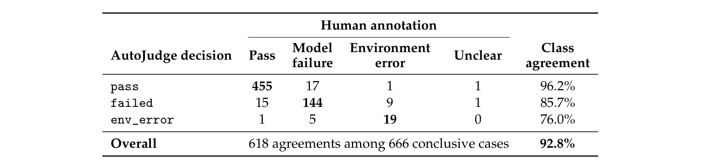
Table 14: Agreement between AutoJudge and independent human annotations. Rows denote Au- toJudge decisions and columns denote human annotations. pass corresponds to the combined per- fect/fair_enough category. Agreement is computed after excluding human annotations marked as unclear.表 14 报告了对比结果：在 666 条具有明确人工标注结论的轨迹中，AutoJudge 与人工标注在 618 条上一致，总体一致率 92.8%；成功轨迹的一致率达 96.2%。模型失败与环境错误更难区分——相似的观测既可能源于错误的智能体动作，也可能源于真实执行环境的问题。
AAppendixA 附录
A.1 Validating AutoJudge for Real-Device EvaluationA.1 面向真机评测的 AutoJudge 验证
Unlike sandbox benchmarks, real-device tasks generally cannot rely on deterministic, state-based verifiers. Third-party Apps do not expose their internal states, while task outcomes may depend on changing online content, account status, or interactions across multiple Apps. Manually reviewing every trajectory is also difficult to scale and can introduce variation between annotators. We therefore validate AutoJudge against independent human annotations before using it for large-scale real-device evaluation.
与沙盒基准不同，真机任务通常无法依赖确定性的、基于状态的验证器：第三方应用不暴露内部状态，任务结果又可能取决于不断变化的在线内容、账号状态或跨应用交互；逐条人工审查轨迹既难以规模化，也会引入标注者间差异。因此，在把 AutoJudge 用于大规模真机评测之前，我们先将其与独立的人工标注对照验证。
We further ask expert reviewers to examine the cases in which AutoJudge and the initial human annotation disagree. Expert adjudication more often supports the AutoJudge decision, indicating that the agreement reported above is a conservative estimate of its accuracy. Based on this validation, we use AutoJudge as the primary evaluator for our real-device experiments. It provides a more accurate and scalable evaluation protocol while separately identifying model failures and errors caused by the live environment.
我们进一步请专家评审审视 AutoJudge 与初始人工标注不一致的案例：专家裁定更常支持 AutoJudge 的判定，表明上述一致率是其准确率的保守估计。基于该验证，我们把 AutoJudge 用作真机实验的主要评估器——它在单独识别模型失败与真实环境所致错误的同时，提供了更准确、更可扩展的评测协议。
A.2 AutoJudge Decisions on Real-Device GUI Agent TrajectoriesA.2 AutoJudge 对真机 GUI 智能体轨迹的判定
Figures 22–24 show representative examples of the three AutoJudge outcomes. Each example includes the original Chinese task and its English translation, selected trajectory steps with actions rendered on the screenshots, and the evidence used for the final decision. These examples illustrate how Auto- Judge distinguishes successful execution and model failures from errors caused by the live execution environment.
图 22–24 展示三种 AutoJudge 判定结果的代表性示例。每个示例包含原始中文任务及其英文翻译、在截图上渲染了动作的所选轨迹步骤，以及支撑最终判定的证据。这些示例说明 AutoJudge 如何区分成功执行、模型失败与真实执行环境所致的错误。
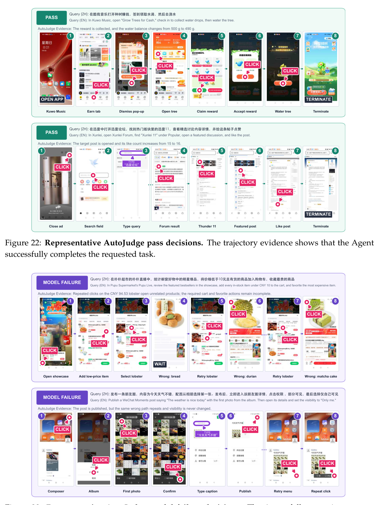
Figure 22: Representative AutoJudge pass decisions. The trajectory evidence shows that the Agent successfully completes the requested task.
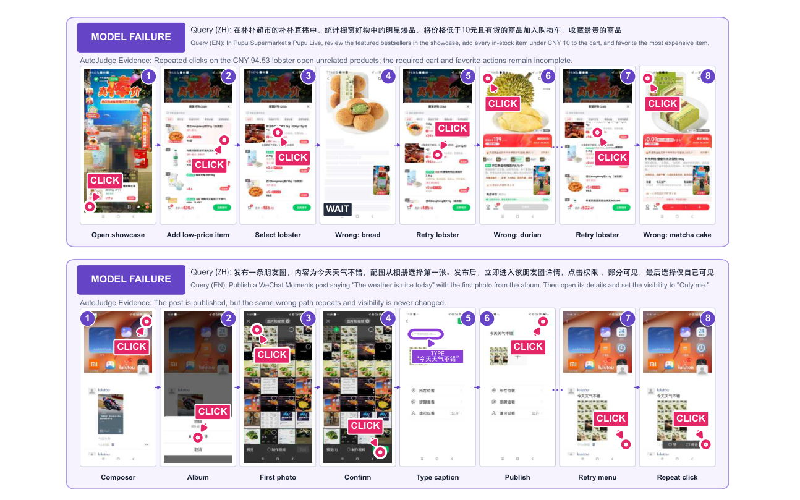
Figure 23: Representative AutoJudge model-failure decisions. The Agent follows an incorrect or incomplete execution path and does not satisfy the task requirements.
A.3 Additional Qualitative ExamplesA.3 补充定性示例
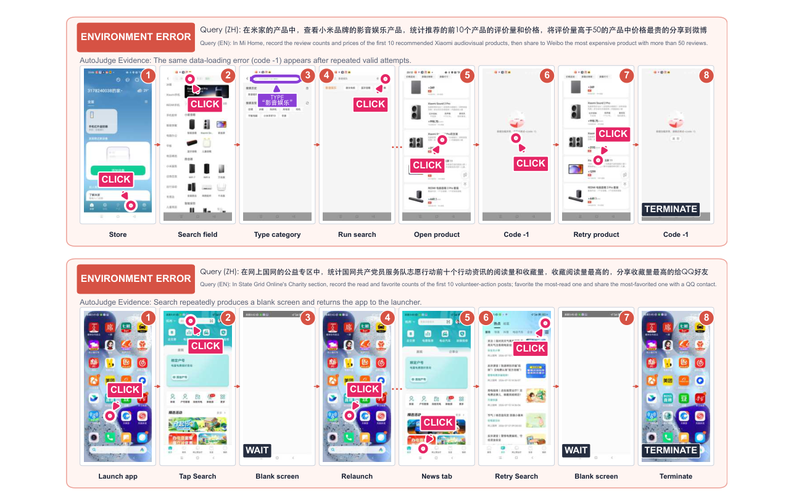
Figure 24: Representative AutoJudge environment-error decisions. The trajectories are interrupted by live-App or execution-environment issues rather than by the Agent’s actions.
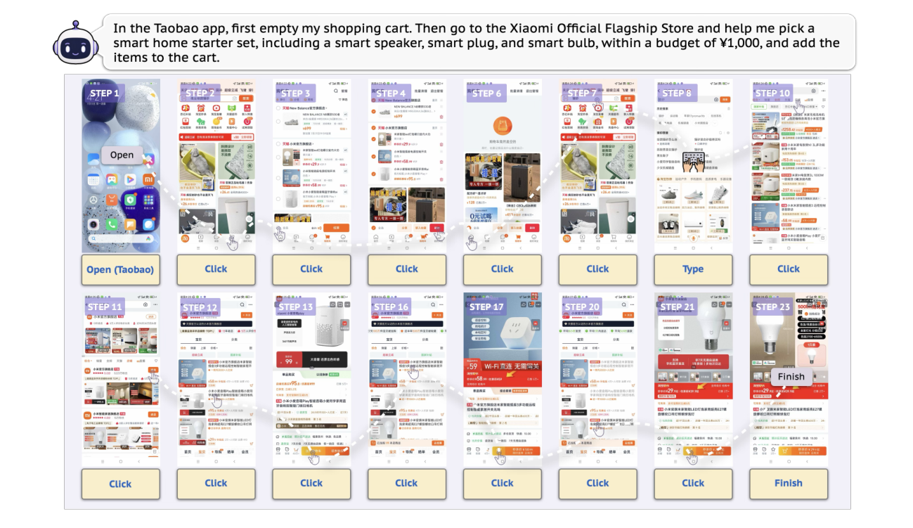
Figure 25: Demonstration of long-horizon real-device GUI execution. The trajectory is rendered as key frames with the executed action annotated beneath each frame. In this 23-step shopping task, the agent decomposes the instruction into sequential sub-goals: it first empties the Taobao shopping cart, then selects a smart speaker, a smart plug, and a smart bulb from the Xiaomi flagship store within a 1,000-yuan budget, maintaining the budget constraint and the item checklist throughout.
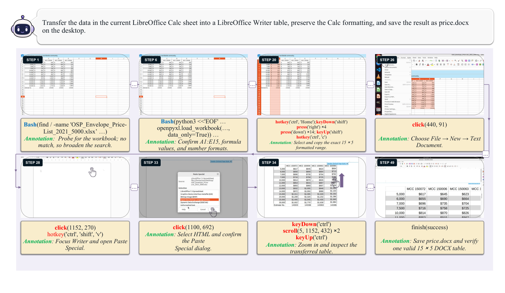
Figure 26: Demonstration of hybrid GUI+CLI execution in computer-use tasks. In this example, the agent uses CLI tools to inspect spreadsheet contents and interleaves GUI actions, including batched hotkey sequences and Paste Special, to transfer the formatted data into a Writer document.
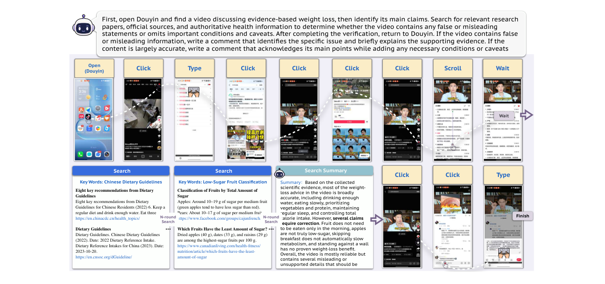
Figure 27: Demonstration of DeepSearch invoked on demand during GUI execution. Qwen-UI- Agent first locates a Douyin video on evidence-based weight loss and extracts its main claims through GUI actions, then calls DeepSearch mid-trajectory to verify these claims against research papers and authoritative health sources, supplying external evidence that the interface itself does not provide. The verification conclusions directly determine the subsequent GUI actions, and the agent returns to Douyin to post an evidence-grounded comment, closing an observe–research–decide–act loop.
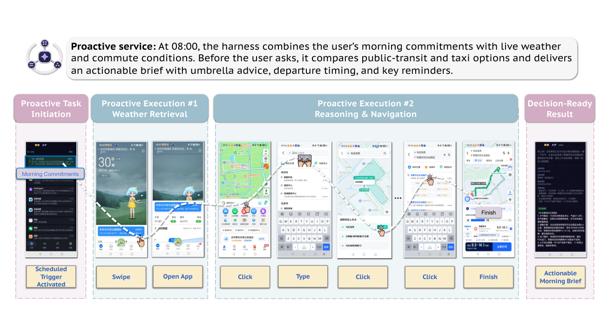
Figure 28: Demonstration of proactive service based on mobile notifications. The trajectory is organized into highlighted stages: proactive task initiation from a detected notification, proactive execution phases, and a decision-ready result, with the executed action annotated beneath each key frame. A scheduled morning brief: at 08:00 the harness combines the user’s morning commitments with live weather and commute conditions, compares public-transit and taxi options before the user asks, and delivers an actionable brief with umbrella advice, departure timing, and key reminders.
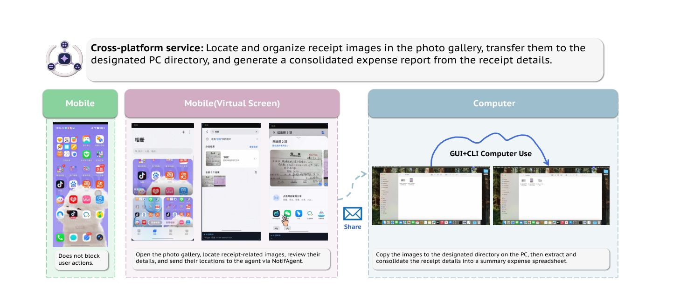
Figure 29: Demonstrations of cross-platform task execution. In this workflow, mobile subtasks run on virtual screens of the physical device, so execution does not block the user’s own actions. Receipt organization across devices: the agent locates receipt images in the photo gallery on a mobile virtual screen, transfers them to the designated PC directory, and uses GUI+CLI computer use to consolidate the receipt details into a summary expense spreadsheet.